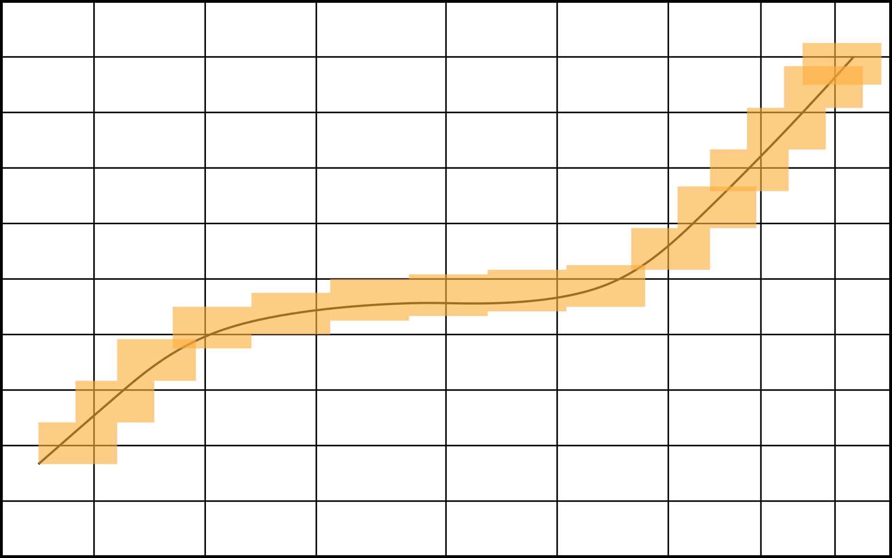

\[\begin{aligned} &\mathbb{R}^{3}\rightarrow\mathbb{R}^{1} \text{ - Energia potencjalna } \mathcal{V}(x,y,z)\\ &\mathbb{R}^{4}\rightarrow\mathbb{R}^{1} \text{ - Potencjał pola niestacjonarnego} \mathcal{V}(x,y,z,t)\\ &\mathbb{R}^{3}\rightarrow\mathbb{R}^{3} \text{ - Natężenie pola } \mathcal{E}(x,y,z) \\ &\mathbb{R}^{4}\rightarrow\mathbb{R}^{3}\\ &\mathbb{R}^{1}\rightarrow\mathbb{R}^{3}\\ &\mathbb{R}^{1}\rightarrow\mathbb{R}^{4}\\ &\mathbb{R}^{1}\rightarrow\mathbb{R}^{6}\\ &\mathbb{R}^{6}\rightarrow\mathbb{R}^{1}\\ &\mathbb{R}^{8}\rightarrow\mathbb{R}^{1}\\ .\end{aligned}\]
(Ciągłość Heine)
Niech \(X\subset\mathbb{R}^n, x_{0} \in X, Y\subset\mathbb{R}^m\). Mówimy, że odwzorowanie \(T: X\rightarrow Y\) jest ciągłe w punkcie \(x_0\), jeżeli \[\underset{x_n \to x_0}{\forall}, T(x_{n})\rightarrow T(x_{0})\]
Uwaga: \(x_{0} = (x_{1}, x_{2}, ..., x_{n})\).
Czy ciągłość w \(\mathbb{R}^{n} \iff\) ciągłośc w \(\mathbb{R}^{1}\)?
Niech funkcja
\[f(x,y) = \begin{cases} 0 & \quad x=y\\ \frac{xy^2}{x^2+y^4} & \quad x\neq y \end{cases}\]
czy \(f\) - ciągła w \((0,0)\)? dla trajektorii I:
\[\lim\limits_{y_{n}\to 0}(\lim\limits_{x_{n}\rightarrow 0} f(x_{n},y_{n})) = \lim\limits_{y_{n}\rightarrow 0}(0) = 0\]
dla trajektorii II:
\[\lim\limits_{x_{n}\to 0}(\lim\limits_{y_{n}\rightarrow 0} f(x_{n},y_{n})) = \lim\limits_{x_{n}\rightarrow 0}(0) = 0\]
weźmy \((x_{n},y_{n}) = (\frac{1}{n^{2}},\frac{1}{n})\)
\[f(x_{n},y_{n}) = \frac{\frac{1}{n^{2}} \frac{1}{n^{2}}}{\frac{1}{n^{4}}+\frac{1}{n^{4}}} = \frac{1}{2} \neq \lim\limits_{x_{n}\to 0, y_{n}\to 0} f(0,0)\]
(Ciągłość Cauchy)
\((X,d_{X})\) - przestrzeń wektorowa z metryką \(d_{X},\\ (Y,d_{Y})\) - p.w. z metryką \(d_{Y}\).
Niech \(x_{0}\in X\). Mówimy, że \(T: X\to Y\) - ciągłe, jeżeli \[\underset{\varepsilon > 0}{\forall} \quad\underset{\delta}{\exists} \quad\underset{x\in X}{\forall} d_{X} (x,x_{0}) < \delta \implies d_{Y} (T(x_{0}), T(x)) < \varepsilon\]
Heine \(\iff\) Cauchy
\[\implies_{(\text{przez sprzeczność})}\]
Zakładamy, że \[\underset{x_n \to x_0}{\forall} T(x_{n}) \to T(x_{0})\] oraz \[\label{eq:p_1.1} \underset{\varepsilon > 0}{\exists}, \underset{\delta > 0}{\forall}, \underset{x\in X}{\exists} : d_{X} (x,x_{0}) < \delta \quad\land\quad d_{Y} (T(x),T(x_{0})) \geq \varepsilon\]
Skoro \(T(x_{n})\to T(x_{0}) \underset{x_n \to x_0}{\forall}\), to w szczególności warunek spełniony dla ciągu, który jest taki:
Skoro ([eq:p_1.1]), to dla \(\varepsilon>0\) weźmy \(\delta = 1\),
\[\begin{aligned} &\delta=1:\\ &&\underset{x_1}{\exists} \quad d_{X} (x_{1},x_{0})<1 \land d_{Y} (T(x_{1}), T(x_{0})) \geq \varepsilon \\ &\delta=\frac{1}{2}:\\ &&\underset{x_2}{\exists} \quad d_{X} (x_{2},x_{0})<\frac{1}{2} \land d_{Y} (T(x_{2}), T(x_{0})) \geq \varepsilon \\ &\delta=\frac{1}{3}:\\ &&\underset{x_3}{\exists} \quad d_{X} (x_{3},x_{0})<\frac{1}{3} \land d_{Y} (T(x_{3}), T(x_{0})) \geq \varepsilon\\ &\vdots &\vdots\\ &\delta=\frac{1}{n}:\\ &&\underset{x_n}{\exists} \quad d_{X}(x_{n},x_{0}) < \frac{1}{n} \land d_{Y} (T(x_{n}),T(x_{0})) \geq \varepsilon .\end{aligned}\]
Zauważmy, że taki ciąg \(x_{n} \to x_{0}\), ale \(T(x_{n}) \not\rightarrow T(x_{0})\), więc mamy sprzeczność. \(\Box\)
\(\impliedby\) Wiemy, że \[\label{eq:p_1.2} \underset{x_n\to x_0}{\forall}\quad \underset{\varepsilon > 0}{\forall}\quad \underset{x}{\exists}\quad d_{X} (x,x_{0}) < \delta \implies d_{Y} (T(x),T(x_{0})) < \varepsilon ,\] czyli:
\[\label{eq:p_1.3} \underset{\delta_1}{\forall} \quad\underset{N}{\exists} \quad\underset{n>N}{\forall} \quad d_{X} (x_{n}, x_{0}) < \delta_{1}\]
Chcemy pokazać, że \(T(x_n) \to T(x_0)\), czyli, że \[\underset{\varepsilon_1 > 0}{\forall} \underset{N_1}{\exists} \underset{n>N_1}{\forall} \quad d_Y (T(x_n),T(x_0)) < \varepsilon_1 (\text{dla } x_n \to x_0)\]
Przyjmijmy \(\varepsilon=\varepsilon_1\). Oznacza to, że \(\underset{\delta}{\exists}\) spełniająca warunek ([eq:p_1.2]) dla \(\varepsilon_1\). Połóżmy \(\delta_1=\delta\) we wzorze ([eq:p_1.3]), czyli wiemy, że \[\underset{N}{\exists} \underset{n>N}{\forall} \quad d_X(x_n, x_0) < \delta_1,\] ale na mocy ([eq:p_1.2]), wiemy, że \[d_Y (T(x_n),T(x_0)) < \varepsilon_1\]
Pochodna cząstkowa:
Niech \(\mathcal{O}\subset\mathbb{R}^{n}, \mathcal{O}\) - otwarty, \(f: \mathcal{O}\to\mathbb{R}^{1}, x\in\mathbb{Q}, x_0 = (x_1^0,x_2^0,\dots,x_n^0)\).
Mówimy, że \(f\) ma w punkcie \(x\) pochodną cząstkową w kierunku \(x^k\), jeżeli istnieje granica \[g \overset{\text{def}}{=} \lim\limits_{h \to 0}\frac{f(x_1^0, x_2^0, \dots, x_k^0 + h, \dots, x_n^0) - f(x_1^0,\dots,x_n^0)}{h} \equiv \left. \frac{\partial}{\partial x} f \right |_{x=x_0}\]
[fig:fig_2]
Pochodna cząstkowa
Niech \(\mathbb{R}^{2}\to\mathbb{R}^{1}\). \[\begin{aligned}
&\frac{\partial}{\partial x} f = \lim\limits_{h \to 0}\frac{f(x+h,y) - f(x,y)}{h},\\
&\frac{\partial}{\partial y} f = \lim\limits_{h \to 0}\frac{f(x,y+h) - f(x,y)}{h}
.\end{aligned}\]
Uwaga: do policzenia pochodnej czątkowej potrzebujemy układu współrzędnych. \[\text{biegunowy } \to f(r,\varphi) .\] \[\begin{aligned} &\frac{\partial f}{\partial r} = \lim_{h \to 0} \frac{f(r+h, \varphi) - f(r,\varphi)}{h}\\ &\frac{\partial f}{\partial \varphi} = \lim_{h \to 0} \frac{f(r, \varphi + h) - f(r,\varphi)}{h} .\end{aligned}\]
Pochodna kierunkowa:
Niech \(\mathcal{O}\subset\mathbb{R}^{n}\), \(\mathcal{O}\) - otwarte, \(x_0\in\mathcal{O},e\in\mathcal{O},T:\mathcal{O}\to\mathbb{R}\).
Mówimy, że \(T\) ma w \(x_0\) pochodną kierunkową (spoiler: pochodną słabą), jeżeli istnieje granica \[g = \lim\limits_{t \to 0}\frac{T(x_0 +te) - T(x_0)}{t} \equiv \nabla_e T(x_0)
.\]
Obserwacja: Jeżeli np. \(T: \mathbb{R}^{2}\to\mathbb{R}, e_x=(1,0)= \begin{bmatrix} 1\\0 \end{bmatrix}\) i \(e_y = (0,1) = \begin{bmatrix} 0\\1 \end{bmatrix}\), to \[\nabla_{e_{x}} T = \frac{\partial}{\partial x} T \text{ i } \nabla_{e_{y}} T = \frac{\partial}{\partial y} T .\]
Problemy z pochodną kierunkową:
\(f(x,y) = \sqrt{|xy|}\). Wówczas \(x_0 + te = (0+t1,0)\), \(x_0 = (0,0), e_x = \begin{bmatrix} 1\\0 \end{bmatrix}\)
\[\left. \nabla_{e_x} f \right|_{x=(0,0)} = \lim\limits_{t \to 0}\frac{f(0+t,0) - f(0,0)}{t} = \lim\limits_{t \to 0}\frac{\sqrt{|t \cdot 0|} - \sqrt{|0 \cdot 0|}}{t} = \lim\limits_{t \to 0}\frac{0}{t} = 0 = \left. \frac{\partial}{\partial x} f\right |_{(0,0)}\]
Uwaga: \(f(x) = \sqrt{x}, \mathbb{R}\to\mathbb{R}, f'(0) = \lim\limits_{h \to 0}\frac{\sqrt{h}}{h} = \pm \infty\)
\[f(x,y) = \begin{cases} 0 & \quad x=y\\ \frac{xy^2}{x^2+y^4} & \quad x \neq y\\ \end{cases}\]
\(e = \begin{bmatrix} h_1\\h_2 \end{bmatrix}\). Pochodna: \(\left. \nabla_e f\right |_{x=(0,0)}, (x_0 + te = (th_1, th_2))\)
\[\lim\limits_{t \to 0}\frac{f(th_1, th_2) - f(0,0)}{t} = \frac{h_1 h_2^2}{h_1^2} = \frac{h_2^2}{h_1}\]
Norma
Niech \(X\) - przestrzeń wektorowa.
Odwzorowanie \(||.||: \mathbb{X}\to \mathbb{R}\) nazywamy normą, jeżeli:
\[\begin{aligned} \underset{x\in X}{\forall} \quad &||x|| \geq 0\\ \underset{\alpha\in\mathbb{R}}{\forall}, \underset{x\in \mathbb{X}}{\forall} \quad &|| \alpha x|| = |\alpha| ||x||\\ \underset{x,y \in X}{\forall} \quad &||x+y|| \leq ||x|| + ||y||\\ \underset{x\in X}{\forall} \quad &||x|| = 0 \iff x = 0\end{aligned}\]
Przestrzeń \(X\) wraz z normą \(||.||\) nazywamy przestrzenią unormowaną (spoiler: przestrzenią Banacha).
Przykładowa norma:
\[||v|| = \sqrt{(x)^2 + (y)^2}, X = \mathbb{R}^{n}
.\] \[X \ni v \implies||v|| = sup(|x^1|,\dots).\] Jeżeli \(f\in \mathcal{C}([a,b])\), to norma wygląda tak: \[||f|| = sup_{x\in{[a,b]}} (f(x))
.\]
\[\mathbb{R}^2_2 \ni \begin{bmatrix} a&b\\c&d \end{bmatrix} = v\] \[\Vert v \Vert = \max \left\{ |a|, |b|, |c|, |d| \right\} .\]
Uwaga: mając normę możemy zdefiniować metrykę \(\underset{x,y\in X}{\forall} d(x,y) = ||x-y||\), natomiast nie każdą metrykę da się utworzyć przy pomocy normy.
metryka zdefiniowana przy pomocy normy ma np. taką własność: \[d(ax,ay) = ||ax - ay|| = |a| ||x-y|| = a d(x,y),\] czyli taka metryka się skaluje natomiast funkcja \[d(x,y) = \begin{cases} 1 & \quad x\neq y\\ 0 & \quad x=y\\ \end{cases}\] jest metryką, ale tej własności nie posiada.
Pochodna mocna (trzecie podejście) \[\lim\limits_{h \to 0}\frac{f(x+h) - f(x)}{h} = f'(x_0), \text{ dla }x\in V\subset \mathbb{R}^{n} .\] - taka definicja jest niemożliwa (nie mamy dzielenia wektorów).
\[f(x+h)-f(x)=f'(x_0) h + r(x_0,h), \text{ gdzie } \frac{r(x_0,h)}{||h||}\to 0 \text{ przy } ||h||\to 0\] ale to może mieć już inną dziedzinę
Niech \(U \subset X, V\subset Y\)
\(U,V\text{ - otwarte, }\quad T:U\to V\\
x,h\in U\)
Mówimy, że \(T\) - różniczkowalne w punkcie \(x_0\), jeżeli prawdziwy jest wzór \[\underset{h\in U}{\forall} \quad T(x_0+h) - T(x_0) = L_{x_0} (h) + r(x_0,h),\] gdzie \(\frac{r(x_0,h)}{||h||}\to 0\), a \(L_{x_0}\) - liniowe \(: X\to Y\).
Odwzorowanie \(L_{x_0} (h)\) nazywamy pochodną T w punkcie \(x_0\). Czasami \(L_{x_0}(h)\) możemy przedstawić w postaci \(L_{x_0} (h) = T'(x_0) h\), to \(T'(x_0)\) nazywamy pochodną odwzorowania T.
Uwaga: Dlaczego \(L_{x_0}(h)\), a nie \(T'(x_0) h\)?
Dlatego, że czasami pochodna może wyglądać tak:
\[\int_0^1 h(x)\sin{x}dx ,\] a tego nie da sie przedstawić jako \[\left ( \int_0^1 \sin{x}dx \right ) h(x).\]
\(T(x+h) - T(x) = T'(x_0)h+r(x_0,h)\) \[\begin{aligned} &1. T: \mathbb{R}\to \mathbb{R}^{3}, \text{ czyli } x_0\in \mathbb{R}, h\in R \implies T(x) = \begin{bmatrix} -\\-\\- \end{bmatrix} T'(x) = \begin{bmatrix} -\\-\\- \end{bmatrix} \\ &2. T:\mathbb{R}^3 \to \mathbb{R} \quad x_0 = \begin{bmatrix} -\\-\\- \end{bmatrix} h = \begin{bmatrix} -\\-\\- \end{bmatrix} , T'(x) = \left[ -,-,- \right] \\ &3. T:\mathbb{R}^2 \to \mathbb{R}^3 \quad x_0 \begin{bmatrix} -\\- \end{bmatrix} h = \begin{bmatrix} -\\- \end{bmatrix}, T(x) = \begin{bmatrix} -\\-\\- \end{bmatrix} , T'(x) = \begin{bmatrix} -&-&-\\-&-&- \end{bmatrix} \\ .\end{aligned}\]
\[f(x,y) = xy^2, h=\binom{h_x}{h_y}.\] \[\begin{aligned} &f(x_0+h_x,y_0+h_y) - f(x_0,y_0) = \\ &= (x_0+hx)(y_0+hy)^2 - x_0y_0^2 = \\ &= x_0y_0^2 + 2y_0x_0h_y + x_0h_y^2 + h_yy_0^2 + h_xh_y 2y_0 + h_xh_y = \\ &= \left[ y_0^2, 2x\cdot x_0 \right] \begin{bmatrix}h_x\\h_y \end{bmatrix} + x_0h_y^2+h_xh_y^2+2y_0h_xh_y .\end{aligned}\]
Czy \(\frac{r(x_0,h)}{||h||}\underset{h \to 0}{\longrightarrow} 0\)?
Weźmy \(\left\Vert \begin{bmatrix} h_x\\h_y \end{bmatrix} \right\Vert = \sup\{|h_x|,|h_y|\}\), wówczas
\[x_0h_y^2 + h_xh_y^2 + 2y_0h_xh_y \leq x_0 ||h||^2 + ||h||^3 + 2y_0||h||^2 = ||h||^2(x_0 +2y_0 + ||h||),\]
zatem \[\frac{r(x_0,h)}{||h||} \leq \frac{||h||^2(|x_0|+2y_0+||h||)}{||h||} \to 0.\]
\[f(x,y)=xy^2, T'(x)=[y^2,2xy].\] zauważmy, że \[y^2= \frac{\partial}{\partial x} f, 2xy = \frac{\partial}{\partial y} f.\] Uwaga: skąd wiemy, że gdy \(h\to 0\), to \(||h||\to 0\)?
Czyli: czy norma jest odwzorowaniem ciągłym w \(h=0\)?
odpowiedź za tydzień
Jeżeli \(f\) - różniczkowalna w \(x_0 \in U\), to dla dowolnego \(e\in U\), \[\nabla_e f(x_0) = f'(x_0)e\]
skoro \(f\) - różniczkowalna, to \[\label{eq: eq_2.1} \underset{h\in U}{\forall} f(x_0+h) - f(x_0) = f'(x_0)h + r(x_0,h), \frac{r(x,h)}{\Vert h \Vert } \underset{\Vert h \Vert \to 0}{\longrightarrow} 0\]
\[\underset{h_x, h_y}{\forall} \frac{\sqrt{h_x\cdot h_y} }{\left\Vert h \right\Vert } \underset{h\to 0}{\longrightarrow} 0 .\] Niech \(\left\Vert h \right\Vert = \sup \left\{ |h_x|, |h_y| \right\}, |h_x| > |h_y| \implies \left\Vert h \right\Vert = |h_x|\) \[\frac{\sqrt{|h_x \cdot h_y|} }{\left\Vert h \right\Vert } = \frac{\sqrt{|h_x \cdot h_y}}{h_x} \not \to 0 .\]
Czy z faktu istnienia pochodnych cząstkowych wynika różniczkowalność funkcji?
\(f(x,y) = \sqrt{|xy|}, x_0=\binom{0}{0}\), dla \(f(x,y)\) policzyliśmy pochodne cząstkowe w \(x_0 \quad \frac{\partial}{\partial x} f = 0, \frac{\partial}{\partial y} f = 0\).
\(h=\binom{h_x}{h_y}, x_0=\binom{0}{0}, f(x_0+h)-f(x_0) = \sqrt{h_xh_y} - \sqrt{0} = \sqrt{h_xh_y} = (0,0)\binom{h_x}{h_y} + \sqrt{h_xh_y}\), gdzie \(r(x_0,h) = \sqrt{h_xh_y}\).
Czyli \(f\) - różniczkowalna, jeżeli \(\underset{h_x,h_y}{\forall}\quad \frac{\sqrt{h_xh_y}}{||h||}\to0\).
Niech \(||h|| = \sup\{|h_x|,|h_y|\}\) i niech \(|h_x|>|h_y|\). \(||h|| = |h_x|.\)
Dalej mamy: \(\frac{\sqrt{h_xh_y}}{|h_x|}\sqrt{\frac{h_y}{h_x}} \not\to 0 \text{ przy }h_x\to0\), \(\sqrt{\frac{|h_y|}{|h_x|}}=\sqrt{\frac{1}{2}}\)
Czyli istnienie pochodnych cząstkowych nie oznacza różniczkowalności.
Niech \(O\subset\mathbb{R}^{n}, O\) - otwarty. \(f: O\to Y, x_0\in O\).
Jeżeli istnieją pochodne cząstkowe \(\frac{\partial}{\partial x_i} f, i=1,\dots,n\) i są ciągłe w \(x_0\), wtedy \[\underset{h\in\mathbb{R}^n}{\forall} f(x_0+h)-f(x_0)=\sum_{i=1}^{n} \frac{\partial f}{\partial x_i} h^i+r(x_0,h) ,\] gdzie \(\frac{r(x_0,h)}{||h||}\to0\)
(dla \(O=\mathbb{R}^3\))
Niech \(x_0 = \left [ \begin{matrix} x_0^1\\ x_0^2\\ x_0^3 \end{matrix} \right ], h = \left [ \begin{matrix} h^1\\ h^2\\ h^3 \end{matrix} \right ]\)
\[\begin{aligned} &f(x_0^1+h^1,x_0^2+h_2,x_0^3+h^3)-f(x_0^1,x_0^2,x_0^3)=\\ &=f(x_0^1+h^1,x_0^2+h^2,x_0^3+h^3)-f(x_0^1+h^1,x_0^2+h^2,x_0^3)+\\ &+f(x_0^1+h^1,x_0^2+h^2,x_0^3)-f(x_0^1+h^1,x_0^2,x_0^3)+\\ &+f(x_0^1+h^1,x_0^2,x_0^3)-f(x_0^1,x_0^2,x_0^3) \underset{\text{tw. o w. średniej}}{=}\\ &\frac{\partial}{\partial x_0^1} f (c_1)h^1 + \frac{\partial}{\partial x_0^2} f (x_0^1+h^1,c_2,x_0^3)h^2+\frac{\partial}{\partial x_0^3} f (x_0^1+h^1,x_0^2+h_2,c_3)h^3=\\ &(\frac{\partial f}{\partial x^1} (c_1,x_0^2,x_0^3) - \frac{\partial f}{\partial x^1} (x_0^1,x_0^2,x_0^3))h^1 +\\ &+ (\frac{\partial f}{\partial x^2} (x_0^1 + h^1, c_2, x_0^3) - \frac{\partial f}{\partial x^2} (x_0^1, x_0^2, x_0^3))h^2 +\\ &+ (\frac{\partial f}{\partial x^3} (x_0^1+h^1,x_0^2+h^2,c_3) - \frac{\partial f}{\partial x^3} (x_0^1, x_0^2, x_0^3))h^3\\ .\end{aligned}\]
gdzie \(c_1\in ]x_0^1,x_0^1+h^1[,\quad c_2\in ]x_0^2,x_0^2+h^2[,\quad c_3\in ]x_0^3,x_0^3+h^3[\)
Wystarczy pokazać, że \(\frac{r(x_0,h)}{||h||}\to 0\), gdy \(h\to 0\).
Zauważmy, że każde wyrażenie tworzące resztę jest postaci coś \(h^i\), a \(\lim\limits_{||h|| \to 0}\frac{h^i}{||h||} =\) dla normy np. \(||h|| = max{|h^i|}\neq 0\). (np. \(\frac{h^1}{h^1} \to 1\))
Oznacza to, że jeżeli \(\frac{r(x,h)}{||h||}\to 0\) - spełniony, to każde wyrażenie typu \[\Big ( \frac{\partial f}{\partial x^1} (c_1,x_0^2,x_0^3) - \frac{\partial f}{\partial x^1} (x_0^1,x_0^2,x_0^3)\Big ) h^1 \to 0\]
Czyli np. \(\lim\limits_{||h|| \to 0}\frac{\partial f}{\partial x^1} (c_1,x_0^2,x_0^3) = \frac{\partial f}{\partial x^1} (x_0^1,x_0^2,x_0^3) \iff (\frac{\partial f}{\partial x^1} \text{ - ciągła} )\)
Uwaga: jeżeli np. \(f: \mathbb{R}^{2} \to \mathbb{R}^{2}\), to znaczy, że
\(f(x,y) =
\left [
\begin{matrix}
f_1 (x,y)\\
f_2 (x,y)
\end{matrix}
\right ], f_1 : \mathbb{R}^{2} \to \mathbb{R}^{1}, f_2 : \mathbb{R}^{2} \to \mathbb{R}^{1}\) , wówczas \[\frac{\partial f}{\partial x} =
\left [
\begin{matrix}
\frac{\partial}{\partial x} f_1 \\
\frac{\partial}{\partial x} f_2
\end{matrix}
\right ],
\frac{\partial}{\partial y} f =
\left [
\begin{matrix}
\frac{\partial}{\partial y} f_1 \\
\frac{\partial}{\partial y} f_2
\end{matrix}
\right ]\]
\[f(x,y) = \left [ \begin{matrix} 2xy^2\\ x^3 y \end{matrix}\right ]\] Wtedy pochodne czątkowe: \[\frac{\partial f}{\partial x} =\left [ \begin{matrix} 2y^2\\ 3x^2 y \end{matrix} \right ], \frac{\partial f}{\partial y} = \left [ \begin{matrix} 4xy\\ x^3 \end{matrix}\right ]\] \[\begin{aligned} f(x+h)-f(x) &= \\ &= \frac{\partial f}{\partial x} h^x + \frac{\partial f}{\partial y} h^y + r((x,y),h) = \\ &=\left [ \begin{matrix} 2y^2\\ 3x^2 y\\ \end{matrix}\right ] h^x + \left [ \begin{matrix} 4xy\\ x^3\\ \end{matrix}\right ] h^y + r((x,y),h) \\ &= \left [ \begin{matrix} 2y^2 &4xy\\ 3x^2 y &x^3\\ \end{matrix}\right ] \left [ \begin{matrix} h^x\\ h^y\\ \end{matrix}\right ] + r((x,y),h) .\end{aligned}\]
Czyli \[f' = \left [ \begin{matrix} \frac{\partial f_1}{\partial x} &\frac{\partial f_1}{\partial y}\\ \frac{\partial f_2}{\partial x} &\frac{\partial f_2}{\partial y}\\ \end{matrix}\right ]\]
i ogólniej: jeżeli \(f: \mathbb{R}^n \to \mathbb{R}^k\), to \[f' = \left [ \begin{matrix} \frac{\partial f_1}{\partial x^1} &\dots &\frac{\partial f_1}{\partial x^n}\\ \vdots &\ddots &\vdots\\ \frac{\partial f_k}{\partial x^1} &\dots &\frac{\partial f_k}{\partial x^n}\\\end{matrix}\right ]\]
Niech \(V\) - przestrzeń wektorowa z normą \(||.||\) i \(x_0\in V\), wówczas \[f(x)=||x||, f: V\to\mathbb{R}^1 \text{ - ciągła w } x_0.\]
Chcemy pokazać, że \[\underset{\varepsilon > 0}{\forall} \quad\underset{\delta}{\exists} \quad\underset{x}{\forall} \quad d_x (x,x_0) < \delta \implies d_{\mathbb{R}} (f(x),f(x_0)) < \varepsilon\] ale \[d_x(x,y) = ||x-y||, d_{\mathbb{R}^1} (x,y) = |x-y| .\] Czyli pokażemy, że \[\underset{\varepsilon > 0}{\forall} \underset{\delta}{\exists} \underset{x}{\forall} \quad ||x - x_0|| < \delta \implies \big | ||x|| - ||x_0|| \big | < \varepsilon .\] Ale wiemy, że \[||x|| = ||x-y+y|| \leq ||x-y|| + ||y||, ||x||-||y||\leq ||x-y||,\] \[||y|| = ||y-x+x||\leq ||y-x|| + ||x||,\] \[||y||-||x||\leq ||x-y|| ,\] czyli \(\left| \left\Vert x \right\Vert - \left\Vert y \right\Vert \right| \leq \left\Vert x-y \right\Vert\). Niech \(\delta = \frac{\varepsilon}{2}\), otrzymujemy \(\varepsilon > \frac{\varepsilon}{2} > ||x-y|| \geq \big | ||x|| - ||y|| \big | \geq 0\)
Niech \(f(x,y) = 7x+6y^2 \text{ i } g(t) = \left [ \begin{matrix} cos(t) \\ sin(t) \\ \end{matrix}\right ]\). Wówczas \(h(t) = (f \circ g)(t) : \mathbb{R}\to \mathbb{R}\). Ile wynosi pochodna?
\(f' = [7,12y] , g' = \left [ \begin{matrix} -sin(t)\\ cos(t)\\ \end{matrix}\right ]\)
Niech \(G:U \to Y, U\subset X, U\) - otwarte,
\(X\) - przestrzeń wektorowa unormowana,
\(F: G(U) \to Z, G(U) \subset V\)
\(G\) - różniczkowalna w \(x_0\in U\),
\(F\) - różniczkowalna w \(G(x_0)\in U\).
Wówczas: \((F \circ G )\) - różniczkowalna w \(x_0\) oraz \[(F \circ G)' (x_0) = \left . F'(x)\right |_{x=G(x_0)} G'(x_0).\]
\[G(x_0 + h_1) - G(x_0) = G'(x_0)h_1+r_1(x_0,h_1)\text{, gdy }\frac{r(x_0,h_1)}{||h_1||_x} \to 0\] \[F(y_0 + h_2) - F(y_0) = F'(y_0)h_2+r_2(y_0,h_2)\text{, gdy }\frac{r(y_0,h_2)}{||h_2||_y} \to 0\]
\[\begin{aligned} F\left(G(x_0 + h)\right) - F(G(x_0)) &=\\ &= F(G(x_0) + G'(x_0)h_1 + r_1(x_0,h_1)) - F(G(x_0)) =\\ &= F(G(x_0)) + F'(G(x_0)) \cdot (G'(x_0)h_1 + r_1(x_0,h_1)) + \\ &= r_2(G(x_0), G'(x_0)h_1 + r_1(x_0,h_1)) - F(G(x_0)).\end{aligned}\] zatem: \[\begin{aligned} F(G(x_0+h)) - F(G(x_0)) &=\\ &=F'(G(x_0)) \cdot G'(x_0)h_1+F'(G(x_0)) \cdot r_1(x_0,h_1)+\\ &=r_2 \cdot (G(x_0),G'(x_0)h_1+r_1(x_0,h_1)) .\end{aligned}\]
Wystarczy pokazać, że \[\frac{r_3}{||h_1||}\to 0,\] ale \[\begin{aligned} \frac{r_3}{||h_1||} &= F'(G(x_0)) \frac{r_1(x_0,h_1)}{||h_1||} +\\ &+ \underbrace{\frac{r_2(G(x_0),G'(x_0)h_1+r_1(x_0,h_1))}{||G'(x_0)h_1 + r_1(x_0,h_1)||}}_{\to 0 \text{ kiedy } h_1 \to 0} \cdot \underbrace{\frac{||G'(x_0)h_1+r_1(x_0,h_1)||}{||h_1||}}_{\text{jest ograniczony}} ,\end{aligned}\] ale jeżeli \(h_1\to 0\), to \(h_2 = G'(x_0)h_1+r_1(x_0,h_1)\), zatem \(F(G(x))\) - różniczkowalna w \(x_0\)
\(f(x,y) = \left [ \begin{matrix} 2xy^2\\ x^3 y\\\end{matrix}\right ], \varphi(t) = \left [ \begin{matrix} 2t^2\\ t^3\\ \end{matrix}\right ], h(t) = (f \circ \varphi) (t), h: \mathbb{R}\to \mathbb{R}^2\).
Policzmy \(H'\). \(f' = \left [ \begin{matrix} 2y^2 &4xy\\ 3x^2y &x^3\\ \end{matrix}\right ], \varphi '(t) = \left [ \begin{matrix} 4t\\ 3t^2\\ \end{matrix}\right ]\), tzn. \[H' = \left [ \left .\begin{matrix} 2y^2 &4xy\\ 3x^2y &x^3\\ \end{matrix}\right ]\right |_{x=2t^2, y=t^3} \cdot \left [ \begin{matrix} 4t\\ 3t^2\\ \end{matrix}\right ] = \\ \left [ \begin{matrix} 2(2t^2)^2 4t + 4(2t^2)(t^3) 3t^2\\ 3(2t^2)^2 t^3 4 + (2t^3)^3 3t^2\\\end{matrix}\right ]\]
Niech \(f: \mathbb{R}^2 \to \mathbb{R}\),
\(\Psi: \mathbb{R}^2 \to \mathbb{R}^2\),
\(\Psi(r,\varphi) = \left [ \begin{matrix} \Psi_1(r,\varphi)\\ \Psi_2(r,\varphi)\\\end{matrix}\right ]\) \(\Psi_1: \mathbb{R}^2 \to \mathbb{R}\) \(\Psi_2: \mathbb{R}^2 \to \mathbb{R}\)
Niech \(H(r,\varphi) = (f \circ \Psi) (r, \varphi)\), czyli \(H : \mathbb{R}^2 \to \mathbb{R}\).
Szukamy pochodnej \(H\), ale \[f' = [\frac{\partial f}{\partial x} , \frac{\partial f}{\partial y} ], \Psi ' = \left [ \begin{matrix} \frac{\partial \Psi_1}{\partial r} &\frac{\partial \Psi_1}{\partial \varphi} \\ \frac{\partial \Psi_2}{\partial r} &\frac{\partial \Psi_2}{\partial \varphi} \end{matrix}\right ]\]
Czyli \[H' = \left . \Big [ \frac{\partial f}{\partial x} , \frac{\partial f}{\partial y} \Big ] \right |_{x=\Psi_1(r,\varphi), y=\Psi_1(r,\varphi)} \left [ \begin{matrix} \frac{\partial \Psi_1}{\partial r} &\frac{\partial \Psi_1}{\partial \varphi} \\ \frac{\partial \Psi_2}{\partial r} &\frac{\partial \Psi_2}{\partial \varphi} \end{matrix}\right ]\]
Co daje: \[\left . \Big [ \frac{\partial H}{\partial r} , \frac{\partial H}{\partial \varphi} \Big ] = \Big [ \frac{\partial f}{\partial x} \frac{\partial \Psi_1}{\partial r} + \frac{\partial f}{\partial y} \frac{\partial \Psi_2}{\partial r} , \frac{\partial f}{\partial x} \frac{\partial \Psi_1}{\partial \varphi} + \frac{\partial f}{\partial y} \frac{\partial \Psi_2}{\partial \varphi} \Big ] \right |_{x = \Psi_1 (r,\varphi), y = \Psi_2 (r,\varphi)}\]
Mamy funkcję \(H(r,\varphi) = (f \circ \Psi)(r,\varphi)\) \[\begin{aligned} &\Psi_1(r,\varphi)=x(r,\varphi)\\ &\Psi_2(r,\varphi)=y(r,\varphi)\\ &\frac{\partial f}{\partial r} = \frac{\partial f}{\partial x} \frac{\partial x}{\partial r} + \frac{\partial f}{\partial y} \frac{\partial y}{\partial r}\\ &\frac{\partial f}{\partial \varphi} = \frac{\partial f}{\partial x} \frac{\partial x}{\partial \varphi} + \frac{\partial f}{\partial y} \frac{\partial y}{\partial \varphi}\end{aligned}\]
\[f(x,y):\mathbb{R}^2 \to \mathbb{R},\quad \left [ \begin{matrix} x=r\cos{\varphi}\\ y=r\sin{\varphi}\end{matrix}\right ]\] \[\frac{\partial f}{\partial r} = \cos{\varphi} \frac{\partial f}{\partial x} + \sin{\varphi} \frac{\partial f}{\partial y},\quad \frac{\partial f}{\partial \varphi} = -r\sin{\varphi} \frac{\partial f}{\partial x} + r\cos{\varphi} \frac{\partial f}{\partial y}\] \[f(x,y):\mathbb{R}^2 \to \mathbb{R},\quad f'= \Big [ \frac{\partial f}{\partial x} , \frac{\partial f}{\partial y} \Big ]\]
Rozważmy zbiór \[P_c = \{(x,y)\in \mathbb{R}^2 : f(x,y) = c \} \text{ np. } f(x,y) = x^2 + y^2 : P_c = \{(x,y)\in\mathbb{R}^2 : x^2+y^2 = c \}.\]
Załóżmy, że \(f(x,y)\) - taka, że \(P_c\) można sparametryzować jako \[~ \varphi(t) = \left [ \begin{matrix} x(t)\\ y(t)\end{matrix}\right ], t\in D\text{, to znaczy, że }P_c = \{(x(t),y(t)), t\in D\}\]
Niech \(\varphi(t) = \left [ \begin{matrix} \cos{t}\\ \sin{t}\end{matrix}\right ]\). Wtedy \(P_c = \{(c \cdot \cos{t},c \cdot \sin{t}): t\in[0,2\pi]\}\)
\(f(x(t),y(t)) = c \quad\underset{t\in D}{\forall}\) - powierzchnie ekwipotencjalne
\[\Big [ \frac{\partial f}{\partial x} , \frac{\partial f}{\partial y} \Big ] \left [ \begin{matrix} x'(t)\\ y'(t)\end{matrix}\right ] = 0,\] \[\Big [ 2x, 2y \Big ] \left [ \begin{matrix} -c \cdot \sin{t}\\ c \cdot \cos{t}\end{matrix}\right ] = 0.\]
Pochodna mieszana \[f(x,y) = x^2y^3, \quad \frac{\partial f}{\partial x} = 2xy^3, \frac{\partial f}{\partial y} = 3x^2y^2,\quad \frac{\partial }{\partial x} \big (\frac{\partial f}{\partial x} \big ) = 2y^3,\quad \frac{\partial }{\partial y} \big (\frac{\partial f}{\partial y} \big ) = 6x^2y\]
\[\frac{\partial^2 f}{\partial x \partial y} = 6xy^2 \quad \frac{\partial^2 f}{\partial y \partial x} = 6xy^2\] Przypadek???
(Uogólnione twierdzenie Schwarza)
Niech \(f: \mathcal{O}\to\mathbb{R}, \mathcal{O}\subset \mathbb{R}^n\), otwarty i \(f\in\mathcal{C}^2(\mathcal{O})\), wówczas \[\frac{\partial^2 f}{\partial x^i \partial x^j} = \frac{\partial^2 f}{\partial x^j \partial x^i}; i,j=1,\dots,n\]
Dowód dla \(n=2\) Niech \[w(x,y) = f(x+h,y+k) - f(x+h,y) - f(x,y+k) + f(x,y),\] \[\varphi(x) = f(x,y+k) - f(x,y)\] wówczas \[\begin{aligned} w &=\varphi(x+h) - \varphi(x) = \frac{\partial \varphi}{\partial x} (\xi)h = \\ &=\left[ \frac{\partial f}{\partial x} (\xi, y+k) - \frac{\partial f}{\partial x} (\xi, y) \right]h = \\ &= \frac{\partial }{\partial y} \Big ( \frac{\partial f}{\partial x} (\xi,\eta) \Big ) hk ,\\ & \text{gdzie }x<\xi<x+h,\quad y<\eta<y+k\end{aligned}\]
Niech \[\Psi(y)=f(x+h,y)-f(x,y)\] \[\begin{aligned} w(x,y) &= \Psi(y+k) - \Psi(y) = \frac{\partial \Psi}{\partial y} (\eta_1)k = \\ &= \left[\frac{\partial f}{\partial y} (x+h,\eta_1) - \frac{\partial f}{\partial y} (x,\eta_1) \right] k = \\ &= \frac{\partial }{\partial x} \Big ( \frac{\partial f}{\partial y} (\xi,\eta) \Big ) kh ,\end{aligned}\] czyli \[\underset{\xi}{\exists}\quad \xi\in]x,x+h[,\quad \xi_1\in]x,x+h[,\quad \eta\in]y,y+k[,\quad \eta_1\in]y,y+k[.\] Jeżeli \(h\to 0\), \[\left( \frac{\partial^2 f}{\partial y \partial x} (\xi,\eta) = \frac{\partial^2 f}{\partial x \partial y} (\xi_1,\eta_1) \right) ,\] to \[\xi \to x, \xi_1 \to x, \eta \to y, \eta_1 \to y ,\] czyli: \[\frac{\partial^2 f}{\partial y \partial x} (x,y) = \frac{\partial^2 f}{\partial x \partial y} (x,y) ,\] jeżeli każda z tych wielkości jest ciągła.
Niech \(f: \mathcal{O}\to\mathbb{R}, \mathcal{O}\subset \mathbb{R}^n\) - otwarty
\(\varphi(t) = f(x_0+th), h\in \mathbb{R}^n, t\in[0,1]\).
Dla \[h=\left [ \begin{matrix}
h^1\\
\vdots\\
h^n\end{matrix}\right ] ,
x_0 = \left [ \begin{matrix}
x_0^1\\
\vdots\\
x_0^n\end{matrix}\right ],
\varphi(t) = f(x_0^1+th^1,x_0^2+th^2,\dots,x_0^n+th^n)
,\] mamy \[\begin{aligned}
\frac{\partial \varphi}{\partial t} &= \left .\frac{\partial f}{\partial x^1} \right |_{x=x_0+th} h_1 + \left .\frac{\partial f}{\partial x^2} \right |_{x=x_0+th} h_2 + \dots + \left .\frac{\partial f}{\partial x^n} \right |_{x=x_0+th} h_n = \left .\sum_{i=1}^n \frac{\partial f}{\partial x^i} \right |_{x_0+th}h_i\\
\frac{\partial^2 \varphi}{\partial t^2} &= \left .\sum_{j=1}^n \sum_{i=1}^n \frac{\partial f}{\partial x^i \partial x^j} \right |_{x_0+th} h_j h_i\\
&\vdots\\
\frac{\partial^k \varphi}{\partial t^k} &= \sum_{i^1,\dots,i^k}^n \frac{\partial^{(k)} f}{\partial x^{i_{1}} \dots \partial x^{i}} h_{i_1}\dots h_{i_k}\end{aligned}\]
\[\varphi(t) = \varphi(0) = \varphi'(0)(t-0)+\frac{\varphi''(0)}{2!}(t-0)^2+\dots+\frac{\varphi^k(0)}{k}(t-0)^k + r(\dots) ,\] czyli: \[\varphi(1)-\varphi(0) = \varphi'(0)+\frac{\varphi''(0)}{2!} + \frac{\varphi'''(0)}{3!} + \dots + \frac{\varphi^k(0)}{k!}+r(\dots)\] \[f(x_0+h)-f(x_0)=\sum_{i=1}^n \frac{\partial f}{\partial x^i} (x_0) h_i + \frac{1}{2!} \sum_{i,j=1}^n \frac{\partial^2 f}{\partial x^i \partial x^j} (x_0)h_ih_j + \dots \dots\]
Z poprzedniego wykładu: \[\begin{aligned} f(x_0+h) &= f(x_0) + \sum_{i=1}^n \frac{\partial f}{\partial x^i} (x_0) h^i + \frac{1}{2!}\sum_{\substack{i=1\\ j=1}}^n \frac{\partial^2 f}{\partial x^i \partial x^j} (x_0) h^i h^j + \dots + \\ &+ \frac{1}{p!} \sum_{\substack{i_1 = 1\\ \vdots \\ i_p = 1}}^n \frac{\partial^p f}{\partial x^{i_1} \dots \partial x^{i_p+1}} (x_0) h^{i_1} \dots h^{i_p} + R_{p+1} (x_0, h),\end{aligned}\] gdzie reszta wygląda tak: \[R_{p+1} (h) = \frac{1}{(p+1)!} \sum_{\substack{i_1 = 1\\ \dots \\i_{p+1} = 1}}^n \frac{\partial^{p+1} f}{\partial x^{i_1} \dots \partial x^{i_p+1}} \underset{\substack{0<\theta<1\\ \text{ wersja } \mathbb{R}^n \text{ dla }\\"x_0 < c < x_0 +h"}}{(x_0+\theta h)} h^{i_1} \dots h^{i_{p+1}}.\]
(bardzo ważna zależność!)
\[\lim\limits_{h \to 0}\frac{R_{p+1} (x_0,h)}{||h||^p} \to 0.\]
\(f: \mathbb{R}^2 \to \mathbb{R}, \quad f(x,y) = x^2y^3, f'(x,y) = \Big [ 2xy^3, 3x^2y^2 \Big ]\).
Jeżeli \(h = \left [ \begin{matrix} h_1\\ h_2\\ \end{matrix}\right ]\), to wtedy
\[\begin{aligned} \sum_{\substack{i=1 \\ j=1}}^2 \frac{\partial^2 f}{\partial x^i \partial x^j} h^i h^j &=\frac{\partial^2 f}{\partial x^1 \partial x^1} h^1 h^1 + \frac{\partial^2 f}{\partial x^1 \partial x^2} h^1 h^2 + \frac{\partial^2 f}{\partial x^2 \partial x^1} h^2 h^1 + \frac{\partial^2 f}{\partial x^2 \partial x^2} h^2 h^2 =\\ &= \Big [ h_1, h_1 \Big ] \left [ \begin{matrix} \frac{\partial^2 f}{\partial x_1^2} &\frac{\partial^2 f}{\partial x_1 \partial x_2} \\ \frac{\partial^2 f}{\partial x_2 \partial x_1} &\frac{\partial^2 f}{\partial x_2^2} \end{matrix}\right ] \left [ \begin{matrix} h_1\\ h_2 \end{matrix}\right ]\end{aligned}\] To czy ta macierz jest uśmiechnięta etc. (dodatnio/ujemnie określona) na algebrze.
Przypomnienie: Niech \(f: \mathcal{O}\to \mathbb{R}, \mathcal{O}\subset \mathbb{R}^n, \mathcal{O}\) - otwarty, \(x_0 \in \mathcal{O}\)
Mówimy, że \(f\) ma w \(x_0\) minimum lokalne, jeżeli: \[\underset{\eta > 0}{\exists} \quad
\underset{\substack{
x\in K(x_0,\eta)\\
K(x_0,\eta) \subset \mathcal{O}\\
x \neq x_0
}}{\forall} \quad f(x) > f(x_0), \underbrace{\left(f(x) < f(x_0)\right)}_{\text{albo maksimum}}.\]
Albo inaczej: \[\underset{\eta > 0}{\exists} \quad\underset{h}{\forall}\quad ||h|| < \eta, \quad x_0+h \in \mathcal{O}, h \neq 0\text{, to wtedy } f(x_0+h)>f(x_0).\]
jeżeli \(f: \mathcal{O} \rightarrow \mathbb{R}, \mathcal{O}\) - otwarty, \(x_0 \in \mathcal{O}, f\) - posiada w \(x_0\) minimum lub maksimum lokalne, to \[\frac{\partial f}{\partial x^i} (x_0) = 0, i = 1,\dots,n\] działa tylko w prawo, bo możliwe są punkty przegięcia (siodła)
Uwaga: jeżeli \(f: U\to \mathbb{R}\) i \(U\) - domknięta, to należy zbadać zachowanie funkcji osobno na \(int(U)\) oraz na \(U - \{int(U)\}\)
Niech \(g_h (t) = f(x_0+th) \text{ i } g: [0,\epsilon [ \to \mathbb{R}\).
Zauważmy, że jeżeli \(f\) ma minimum lub maksimum w \(x_0\), to znaczy, że \(g_h (t)\) ma minimum lub maksimum w \(t = 0\), czyli \[\left . \frac{\partial}{\partial t} g_h(t) \right |_{t=0} = 0,\]
czyli dla \(x_0 = \big ( x_0^1, x_0^2, \dots, x_0^n),\quad h = \big ( h^1, h^2, \dots, h^n)\)
\[\begin{aligned} \left . \frac{d}{dt} g_h (t) \right |_{t=0} &= \left .\frac{d}{dt} f(x_0^1 + th^1, \dots, x_0^n + th^n) \right |_{t=0} = \\ &= \frac{\partial f}{\partial x^1} (x_0 + th^1) h^1 + \frac{\partial f}{\partial x^2} (x_0 + th^2) h^2 + \dots + \left .\frac{\partial f}{\partial x^n} (x_0 + th^n) \right |_{t=0}=\\ &=\sum_{i=1}^n \frac{\partial f}{\partial x^i} (x_0) h^i = 0 \quad |\underset{h}{\forall}: ||h|| < \eta ,\end{aligned}\] to znaczy: \[\frac{\partial f}{\partial x^i} (x_0) = 0,\quad i = 1,\dots,n.\]
Uwaga: jest to warunek konieczny, a nie dostateczny!
Niech \[\begin{aligned} &f: \mathcal{O} \to \mathbb{R},\\ &\mathcal{O}\subset\mathbb{R}^n,\\ &x_0\in\mathcal{O}, \quad \mathcal{O} \text{ - otwarty},\\ &f \in C^{2p} (\mathcal{O}),\\ &f'(x_0) = 0, f''(x_0) = 0,\dots,f^{(2p-1)} (x_0) = 0 .\end{aligned}\] oraz spełniony jest warunek \[\underset{c > 0}{\exists} \quad\underset{\eta > 0}{\exists} \quad\underset{h\in K(x_0,\eta)}{\forall}: \quad \sum_{\substack{i_1 = 1\\ \vdots \\ i_{2p} = 1}}^n \frac{\partial^{(2p)} f}{\partial x^{i_1} \dots \partial x^{i_{2p}}} (x_0) h^{i_1} \dots h^{i_{2p}} \geq c ||h||^{2p} (\leq c||h||^{2p})\] to wtedy \(f\) ma w \(x_0\) minimum (maksimum) lokalne.
(wersja uproszczona dla minimum i dla \(f\) klasy \(C^{2p+1}(\mathcal{O}))\).
Jeżeli \(f\) spełnia założenie z twierdzenia, to wtedy \[\label{eq: eq_5.1}
f(x_0+h)-f(x_0) = \underbrace{\frac{1}{(2p)!} \sum_{i_1 = 1\ldots i_{2p} = 1}^{2p} \frac{\partial^{(2p)} f(x_0)}{\partial x^{i_1} \dots x^{i_{(2p)}}} h^{i_1} \dots h^{i_{(2p)}}}_{(*)} + r_{2p + 1} (x_0 + h)\] Wiemy też , że \[\underset{c > 0}{\exists}\quad \underset{\eta > 0}{\exists} \underset{\substack{\text{Chodzi o to, żeby reszta}\\ \text{ nie mogła tego przekroczyć}}}{\quad(\ref{eq: eq_5.1})(*)) \geq c ||h||^{2p}}
.\] Chcemy pokazać, że \[\underset{\eta}{\exists} \quad \underset{||h||<\eta}{\forall} \Big | r_{2p+1} (x,h) \Big | \leq \underset{\substack{\text{albo 7,}\\ \text{albo 2019}}}{\frac{c}{2} ||h||^{2p}}
.\] Czyli chcemy zbadać wielkość: \[\frac{1}{(2p+1)!} \sum_{i_1 = 1 \ldots i_{2p+1} = 1}^n \underset{0 < \theta < 1}{\frac{\partial^{(2p+1)} f (x_0 + \theta h)}{\partial x^{i_1} \dots \partial x^{i_{(2p+1)}}}} h^{i_1} \dots h^{i_{(2p+1)}} = \left| \text{tu potrzebne założenie, że } f \in C^{2p+1} (\mathcal{O})\right| = r_{2p+1} (x,h)
.\] Zauważmy, że \(\lim\limits_{h \to 0} \frac{r_{2p+1}(x_0, h)}{||h||^{2p}} \to 0\), ale zatem \[\underset{M>0}{\forall}\quad \underset{\eta}{\exists}\quad \underset{||h|| < \eta}{\forall} \frac{r_{2p+1}(x_0+h)}{||h||^{2p}} < M
,\] czyli \[\left| \frac{r_{2p+1} (x_0,h)}{||h||^{2p}} \right| < M.\] \[\underset{M}{\forall}\quad \underset{\eta}{\exists}\quad \underset{||h|| < \eta}{\forall}\quad \Big | r_{2p+1} (x_0,h) \Big | < M \big | \big |h \big | \big |^{2p}\] czyli jak przyjmiemy \(M = \frac{c}{2}\) to dostajemy \[\underset{\eta}{\exists}\quad \underset{||h||<\eta}{\forall}\quad f(x_0+h)-f(x_0) \geq \frac{c}{2} ||h||^{2p}\]
Uwaga: dlaczego warunek \(( - \big| - ) > c ||h||^{2p}\), a nie po prostu \(( - \big| - ) > 0\)?
\[f(x,y) = x^2 + y^4,\quad \frac{\partial f}{\partial x} = 2x,\quad \frac{\partial f}{\partial y} = 4y^3
.\] \[f'() = 0 \iff (x,y) = (0,0)\] Badamy: \(f(0+h) - f(0) = \big [ h_1, h_2 \big ] \left [ \begin{matrix}
2 &0\\
0 &2y^2\\
\end{matrix}\right ]
\left [ \begin{matrix}
h_1\\
h_2\\\end{matrix}\right ]
= \big [ h_1, h_2 \big ] \left [ \begin{matrix}
2 &0\\
0 &0\\ \end{matrix}\right ]
\left [ \begin{matrix} h_1\\
h_2\end{matrix}\right ] = 2h_1^2\) Czyli \(f(0+h) - f(0) \star 2h_1^2\) - minimum? maksimum? - zależy w którą stronę.
\(h = \left [ \begin{matrix}
h_1\\
0\\
\end{matrix}\right ]\) - minimum, \(h = \left [ \begin{matrix}
0\\
h_2\\
\end{matrix}\right ]\) - równo, coś takiego - punkt siodłowy.
Widzimy zatem, że nie jest spełniony warunek \[\underset{c}{\exists}\left[ h_1, h_2 \right ] \left[ \begin{matrix}
2 &0\\
0 &0\\
\end{matrix}\right ]
\left [ \begin{matrix}
h_1\\
h_2\\
\end{matrix}\right ] \geq c \left\Vert h \right\Vert ^2
,\] bo dla \[h = \left [ \begin{matrix}
0\\
h_2\\
\end{matrix}\right ] \quad 0 \not\geq c \left\Vert \left [ \begin{matrix}
0\\
h_2\\
\end{matrix}\right ] \right\Vert\]
\[\frac{mv^2}{2} = \left [ \begin{matrix} &v &\\ \end{matrix}\right ] \left [ \begin{matrix} \frac{m}{2}\\ &\frac{m}{2}\\ & & \ddots\\ \end{matrix}\right ] \left [ \begin{matrix} \\ v\\ \\\end{matrix}\right ]\] \[\frac{I \omega^2}{2} = \left [ \begin{matrix} &\omega & \\ \end{matrix}\right ] \left [ \begin{matrix} \frac{I}{2} & &\\ &\frac{I}{2} &\\ & &\ddots\\ \end{matrix}\right ] \left [ \begin{matrix} \\ \omega\\ \\ \end{matrix}\right ]\]
Niech \(L: V\to W, L\) - liniowe, \((V,||.||_v),(W,||.||_w)\) - unormowane. Mówimy, że \(L\) jest ograniczone, jeżeli \[\underset{A>0}{\exists}\quad\underset{x\in V}{\forall} ||L(x)||_w \leq A||x||_v.\]
\(\text{dla }
\left [ \begin{matrix}
x\\
y\\
\end{matrix}\right ] \in \mathbb{R}^2, f(x,y) : \mathbb{R}^2 \to \mathbb{R}^2\)
\[\underset{A}{\exists}\quad \forall
\left [ \begin{matrix}
x\\
y\\
\end{matrix}\right ] \in \mathbb{R}^2,\quad \left\Vert \left [ \begin{matrix}
\frac{1}{2} &0\\
0 &\frac{1}{2}\\
\end{matrix}\right ]
\left [ \begin{matrix}
x\\
y\\ \end{matrix}\right ] \right\Vert
\leq A \left\Vert \left [ \begin{matrix}
x\\
y\\ \end{matrix}\right ]
\right\Vert\]
ale \[\forall \left [ \begin{matrix} x\\ y\\ \end{matrix}\right ] \in \mathbb{R}^2, \Bigg | \Bigg | \left [ \begin{matrix} \frac{1}{2} &0\\ 0 & \frac{1}{2}\\ \end{matrix}\right ] \left [ \begin{matrix} x\\ y\\ \end{matrix}\right ] \Bigg | \Bigg | < \frac{1}{2} \Bigg | \Bigg | \left [ \begin{matrix} x\\ y\\ \end{matrix}\right ] \Bigg | \Bigg|\]
(\(L\) - ograniczone) \(\iff\) (\(L\) - ciągłe)
\(\impliedby\)
Wiemy, że \[\underset{\varepsilon > 0}{\forall}, \underset{\delta}{\exists}, \underset{x,x'\in V}{\forall},\quad ||x-x'||_v < \delta \implies ||L(x) - L(x')||(*)< \varepsilon
,\] chcemy pokazać, że: \[\underset{A>0}{\exists}.\underset{x,x'\in V}{\forall}\quad ||L(x-x')|| \leq A||x-x'||,\] zatem wiemy, że para \((\varepsilon, \delta)\) spełniająca warunek \((*)\) istnieje.
Ale \[||L(x-x')|| = \underbrace{\Bigg |\Bigg |L\left ( \frac{x-x'}{||x-x'||}\right ) \frac{\delta}{2}\Bigg |\Bigg | \frac{||x-x'|| 2}{\delta}}_{\text{własność liniowości i normy}} \leq \varepsilon \frac{||x-x'|| 2}{\delta}\] Co wiemy o \(\left\Vert \frac{x-x'}{||x-x'||} \frac{\delta}{2} \right\Vert_v < \delta?\)
\[\underset{x,x'\in V}{\forall}||L(x-x')||_w \leq \frac{2 \varepsilon}{\delta} ||x-x'||_v\] Szukane \(A=\frac{2\varepsilon}{\delta}\) istnieje!
\(\implies\)
Wiemy, że \[\label{eq:d1}
\underset{A}{\exists}\quad \underset{x,x'\in V}{\forall}\quad \left\Vert L(x-x')\right\Vert \leq A\left\Vert x-x' \right\Vert\]
Chcemy pokazać, że jeżeli \(x_n\to x_0\), to \(L(x_n)\to L(x_0)\), ale \[0 \leq ||L(x_n)-L(x_0)||_w = ||L(x_n-x_0)||_w \leq A||x_n-x_0||(\text{ bo (\ref{eq:d1})})\] \[0\leq ||L(x_n) - L(x_0)||_w \leq A||x_n - x_0||(\text{ wszystko dąży do 0)}\]
Wielkość \[\underset{A}{inf} \{\underset{x\in V}{\forall}||L(x)||_w \leq A||x||_v\}\] nazywamy normą odwzorowania \(L\) i oznaczamy \(A\overset{\text{ozn}}{=}||L||\).
Niech \(U\subset \mathbb{R}^m\) - jest zbiorem wypukłym, jeżeli \[\underset{a,b\in U}{\forall}\quad [a,b]\overset{\text{def}}{=} \left \{ a(1-t)+bt, t\in[0,1] \right \} \subset U\]
Niech \(f: U\subset \mathbb{R}^m \to \mathbb{R}^n, U\) - wypukłe, \[\underset{M}{\exists}\quad \underset{x\in U}{\forall}||f'(x)||\leq M ,\] to \[\underset{a,b\in U}{\forall}||f(b)-f(a)||_n \leq M||b-a||_m\]
(jakiekolwiek skojarzenia z Twierdzeniem Lagrange zupełnie przypadkowe *wink* *wink*)
niech \(\gamma (t) = a(1-t) + bt, t\in [0,1], \quad g(t) = f(\gamma (t)),g: \mathbb{R}^1 \to \mathbb{R}^n\), czyli \[g(t) = \left [ \begin{matrix} g_1(t)\\ g_2(t)\\ \vdots\\ g_n(t)\\ \end{matrix}\right ] ,\] zatem \[\begin{aligned} \left \Vert g(1)-g(0)\right \Vert &= \left \Vert \left [ \begin{matrix} g_1(1) - g_1(0)\\ g_2(1) - g_2(0)\\ \vdots\\ g_n(1) - g_n(0)\\ \end{matrix}\right ] \right \Vert \overset{\text{Tw. Lagrange!}}{=}\\ &=\left\Vert \underset{0<c_i<1}{\left [ \begin{matrix} g_1'(c_1)(1-0)\\ g_2'(c_2)(1-0)\\ \vdots\\ g_n'(c_n)(1-0)\\ \end{matrix}\right ]}\right\Vert \leq \left\Vert \left [ \begin{matrix} g_1'(c_1)\\ g_2'(c_2)\\ \vdots\\ g_n'(c_n)\\ \end{matrix}\right ] \right\Vert \left\Vert 1 - 0 \right\Vert \end{aligned}\]
\[\text{Ale } g'(t) = f'(\gamma(t))\gamma'(t) \to \left\Vert g'(t)\right\Vert = \left\Vert f'(\gamma(t))(b-a)\right\Vert \leq \left\Vert f'(\gamma(t))\right\Vert \left\Vert b-a \right\Vert \underset{\text{z zał. stw.}}{\leq} M\] \[\text{Czyli }\underset{t\in[0,1]}{\forall}\left\Vert g'(t) \right\Vert \leq M\left\Vert b-a \right\Vert \implies \left\Vert f(b) - f(a) \right\Vert \leq M \left\Vert b - a \right\Vert\]
Niech \(X\) - unormowana: \(P: X\to X, P\) - ciągła na \(X\).
Interesuje nas zbieżność ciągów typu \(\{x_0, P(x_0), P(P(x_0)),\dots \}, x_0\in X\)
\(\tilde x \in X\) nazywamy punktem stałym, jeżeli \(P(\tilde x) = \tilde x\)
Jeżeli ciąg \(\{x_0, P(x_0), \dots \}\) - zbieżny i \(P\) - ciągłe, to jest on zbieżny do punktu stałego.
Niech \(x_n = P^{(n)} (x_0)\). Wiemy, że \(x_n\) - zbieżny, oznaczmy granicę tego ciągu przez \(\tilde x\). Mamy: \[\label{eq:d2} \underset{\varepsilon_1 > 0}{\forall}\quad \underset{N_1}{\exists}\quad \underset{n>N_1}{\forall}\quad d(x_n,\tilde x) < \varepsilon_1\] \[\label{eq:d3} \underset{\varepsilon_2>0}{\forall}\quad \underset{N_2}{\exists}\quad \underset{n>N_2}{\forall}\quad d(x_{n-1},\tilde x) < \varepsilon_2\] \(P\) - ciągłe, czyli \[\underset{\varepsilon>0}{\forall}\quad \underset{\delta}{\exists}\quad \underset{x'}{\forall}:\quad d(x,x')<\delta \implies d(P(x),P(x'))<\varepsilon \text{, bo (\ref{eq:d2})}\] Chcemy pokazać, że \[\label{eq:d4} \underset{\varepsilon>0}{\forall}\quad d(\tilde x,P(\tilde x))<\varepsilon\] Ale \[\label{eq:ep} d(\tilde x, P(\tilde x)) \leq d(\tilde x,x_n) + d(x_n, P(\tilde x)) = d(\tilde x, x_n) + d(P(x_{n-1}),P(\tilde x)) < \varepsilon + \varepsilon = 2 \varepsilon\] \[\text{Ale z (\ref{eq:d2}) wynika, że } \underset{\varepsilon>0}{\forall}\quad \underset{\delta}{\exists}\quad d(x_{n-1},\tilde x) < \delta \implies d(P(x_{n-1}),P(\tilde x)) < \varepsilon\] Zatem znając \(\varepsilon\) z ([eq:d4]) przyjmujemy \(\varepsilon_1 = \varepsilon\), oprócz tego znajdujemy \(\delta\) przyjmując \(\varepsilon_1 = \varepsilon\), a potem położymy \(\varepsilon_2 = \delta\) z ([eq:d3]) i dzięki temu mamy ([eq:ep])
Niech \(X\) - przestrzeń metryczna, odwzorowanie \(P: X\to X\) nazywamy zwężającym, jeżeli: \[\label{eq:zwezajace} \underset{q\in [0,1[}{\exists}\quad \underset{x,y\in X}{\forall} d(P(x),P(y)) \leq q d(x,y)\]
(Zasada Banacha o lustrach)
Jeżeli \(P: X \to X, P\) - zwężające, to \[\begin{aligned}
\label{eq:banach}
&\text{1. } \underset{x_0 \in X}{\forall}\quad \{x_0,P(x_0),P(P(x_0)),\dots\}) \text{ - Zbieżny do punktu stałego } \tilde x\\
&\text{2. Istnieje tylko jedno }\tilde x\\
&\text{3. } \underset{m}{\forall}\quad d(x_m,\tilde x) < \frac{q^m}{1-q} d(x_1, x_0)
\end{aligned}\]
(Uwaga)
(\(P\) - nie musi być ciągłe) - potem się okaże, że ciągłość gdzieś tutaj siedzi implicite
- lustra w łazience koło sali 1.01 \(\rightarrow\) można stanąć tak, że jedno jest przed tobą a drugie za tobą i wtedy te odbicia się ciągną w nieskończoność i zbiegają do punktu
- telewizor + kamera która go nagrywa a on wyświetla ten obraz
- mapa położona na podłodze zawiera dokładnie jeden punkt, który się pokrywa z miejscem na którym leży
ad. 2
Załóżmy, że \[\underset{\tilde x_1, \tilde x}{\exists} P(\tilde x_1) = \tilde x_1, P(\tilde x_2) = \tilde x_2, \tilde x_1 \neq \tilde x_2\] Wtedy \[d(\tilde x_1, \tilde x_2) = d(P(\tilde x_1),P(\tilde x_2)) < qd(\tilde x_1, \tilde x_2)\] Dalej: \[d(\tilde x_1, \tilde x_2) \leq q d(\tilde x_1, \tilde x_2)\text{, ale }0\leq q \leq 1,\tilde x_1 \neq \tilde x_2 \implies \text{ sprzeczność! }\]
\[\begin{aligned}
d(x_{n+1},x_n) &= d(P(x_n),P(x_{n-1})) \leq qd(x_n, x_{n-1}) = qd(P(x_{n-1}),P(x_{n-2})) \leq\\
&\leq q^2 d(x_{n-1},x_{n-2}) \leq q^n d(x_1,x_0)
.\end{aligned}\] Co, jeżeli zamiast \(n+1\) weźmiemy \(n+m\)? \[\begin{aligned}
d(x_{n+m},x_n) &\leq d(x_{n+m},x_{n+m+1}) + d(x_{n+m-1},x_n) \leq\\
&\leq d(x_{n+m},x_{n+m-1}) + d(x_{n+m-1},x_{n+m-2}) + d(x_{n+m-2},x_n)\leq\\
&\leq \dots\leq d(x_{n+m},x_{n+m-1}+ \dots+d(x_{n+1},x_n)\leq \\
&\leq (q^{n+m-1} + \dots + q^{n+2} + q^{n+1} + q^n)d(x_1,x_0) \leq\\
&\leq q^n \left ( \frac{1-q^n}{1-q} \right ) d(x_1,x_0) \underset{0\leq q<1}{\leq} \frac{q^n}{1-q} d(x_1,x_0)
.\end{aligned}\] Czyli \(d(x_{n+m},x_n) \leq \frac{q^n}{1-q} d(x_1,x_0)\)
Skoro \(X\) - zupełna, to jeżeli \(x_n\) - Cauchy, to znaczy, że jest zbieżny w \(X\). Czyli czy \[\underset{\varepsilon>0}{\forall}\underset{N}{\exists}\underset{n,m>N}{\forall}\quad d(x_n,x_m) <\varepsilon ?\]
Załóżmy, że \(m>n\) i \(m=n+k\). Wtedy \[\underset{\varepsilon>0}{\forall}\underset{N}{\exists}\underset{n>N}{\forall}\quad d(x_n,x_{n+k}) < \varepsilon? \text{ TAK!}\] Dla \(N\) takiego, że \(\frac{q^N}{1-q} d(x_1,x_0) < \varepsilon\). Stąd wiadomo, że \(x_n\) - Cauchy, czyli jest zbieżny. \(x_n \to \tilde x\), zatem jeżeli \(d(x_{n+m},x_n)\leq \frac{q^n}{1-q} d(x_1,x_0) \rightarrow d(\tilde x,x_n) \leq \frac{q^n}{1-q} d(x_1,x_0).\)
(o lokalnej odwracalności)
Niech \[\begin{aligned}
&f: E \to E, E\text{ - otwarty, } E\subset \mathbb{R}^n,f \in \mathcal{C}^1 (E), \\
&\underset{a,b\in E}{\exists}:f(a) = b \text{ i } f'(a) \text{ - odwracalna } (det(f'(a))\neq 0),
\end{aligned}\] to wtedy: \[\begin{aligned}
&\text{1. } \underset{U,V\subset E}{\exists}\quad \underset{a\in U, b\in V}{\exists}\quad U,V \text{ - otwarte, }f \text{ - bijekcja między } U,V\\
&\text{2. } \underset{g: V\to U}{\exists}\quad \underset{x\in V}{\forall}\quad f(g(x)) = x,\\
&\text{3. } g \in \mathcal{C}^1(V).
\end{aligned}\]
Uwaga: dowód składa się z trzech części:
Pokażemy, że \(\underset{U,V}{\exists}: f \text{ - bijekcja na }U,V\)
Pokażemy, że \(U,V\) - otwarte
Pokażemy, że \(\underset{g: V\to U}{\exists}, g\) - różniczkowalna na \(V\) i ciągła.
\(f(x,y) = \left [ \begin{matrix} e^x \cos y\\ e^x \sin y\\ \end{matrix}\right ] , f'(x,y) = \left [ \begin{matrix} e^x \cos y &-e^x \sin y\\ e^x \sin y &e^x \cos y\\ \end{matrix}\right ]\)
\(det(f'(x,y)) = e^{2x} \neq 0\), ale \(f(x,y) = f(x,y+2\pi)\)
(czyli funkcja jest okresowa)
Część I
Szukamy \(U,V: f\) - bijekcja miedzy \(U\) i \(V\).
Skoro \(f'(a)\) - odwracalne, to znaczy, że \(\underset{(f'(a))^{-1}}{\exists}\), zatem \[\underset{\lambda}{\exists}: 2\lambda \Vert (f'(a))^{-1} \Vert = 1.\]
Wiemy, że \(f'(x)\) - ciągła w \(x=a\), czyli \[\underset{\varepsilon>0}{\forall}.\underset{\delta}{\exists}.\underset{x}{\forall},d(x,a)<\delta \implies \Vert f'(x) - f(a) \Vert < \varepsilon\] Połóżmy \(\varepsilon = \lambda\).
Oznacza to, że \[\underset{\delta_\lambda}{\exists}.\underset{x}{\forall}x\in K(a,\delta_\lambda) \implies \Vert f'(x) - f'(a) \Vert < \lambda\] Więc \(U = K(a,\delta_\lambda)\), niech \(V = f(U)\). Chcemy pokazać, że \(f\) - bijekcja między \(U\) i \(V\).
Wprowadźmy funkcję pomocniczą: \[\varphi_y(x) = x+[f'(a)]^{-1} (y-f(x)), x,y\in E\]
Co by było gdyby \(\varphi_y(x)\) posiadała punkt stały? (jakie własności \(x\) by z tego faktu wynikały)
dla \(x\in U, y\in V, (y\in f(a))?\)
Z zasady Banacha wiemy, że odwzorowanie zwężające ma dokładnie jeden punkt stały, czyli \[\underset{y\in V}{\forall}\quad \underset{x\in U}{\exists}: f(x) = y\]
Uwaga: o \(f\) - z taką własnością mówimy, że jest 1-1 na \(U\).
Policzmy \(\varphi_y'(x)\) \[\varphi_y '(x) = \mathbb{I} + (f'(a))^{-1} (-f'(x)) = (f'(a))^{-1}(f'(a) - f'(x)),\] więc \[\begin{aligned}
&\Vert \varphi_y '(x) \Vert = \Vert f'(a)^{-1} (f'(a) - f'(x))\Vert \leq\\
&\leq \Vert (f'(a)^{-1})\Vert \Vert f'(a) - f'(x) \Vert \leq\\
&\leq \underset{x\in U}{\forall}\frac{1}{2\lambda} \lambda = \frac{1}{2}
.\end{aligned}\]
Pamiętamy, że jeżeli \(\underset{M}{\exists}\Vert\varphi_y '(x)\Vert \leq M\), to \(\underset{x,y}{\forall}\Vert \varphi(x) - \varphi(y)\Vert < M\Vert x-y \Vert\)
Zatem skoro \(\Vert \varphi_y '(x) \Vert \leq \frac{1}{2}\), to \[\underset{x_1,x_2\in U}{\forall}\Vert \varphi_y(x_1) - \varphi_y (x_2) \Vert \leq \frac{1}{2} \Vert x_1 - x_2 \Vert,\] więc \(\varphi\) - zwężający na \(U\), więc posiada dokładnie jeden punkt stały \(\underset{y\in V}{\forall}\). Zatem \(f\) - bijekcja między \(U\) i \(V\). \(\Box\)
Część II
Zbiór \(U\) - otwarty (bo tak go zdefiniowaliśmy) \(U = K(a,\delta_1)\), więc \[\underset{x_0\in U}{\exists}\quad \underset{r}{\exists}K(x_0,r)\subset U\] lub równoważnie \[\Vert x-x_0 \Vert \leq r \land x\in U
.\] Chcemy pokazać, że dla \(y_0 = f(x_0) \quad\exists\quad K(y_0,\lambda r)\subset V\), czyli że \(V\) - otwarty.
[fig:fig_18]
Weźmy \(y\in K(y_0,\lambda r)\). Zauważmy, że \(\varphi_{y_1}(x_1)\) - zwężające, jeżeli \(y_1\in V, x_1\in U\)
Jeżeli pokażemy, że dla \(\Vert y-y_0\Vert < \lambda r, \varphi_y(x)\) - zwężająca na \(K(x_0,r)\subset U\), to będziemy wiedzieli, że \(\Vert y - y_0 \Vert < \lambda r\) oraz \(y\in V \iff K(y_0,\lambda r)\subset V\)
[fig:fig_19]
Żeby pokazać, że \(\varphi_y(x)\) - zwężające na \(K(x_0,r)\), zbadamy tę wielkośc dla \(x\in K(x_0,r)\). \(\Vert \varphi_y(x) - x_0 \Vert\), chcielibyśmy, aby \(\Vert \varphi_y(x) - x_0 \Vert \leq r\) i \(\Vert y - y_0 \Vert < \lambda r\), ale z drugiej strony \[\Vert \varphi_y(x) - x_0 \Vert = \Vert \varphi_y(x) - \varphi_y(x_0) + \varphi_y(x_0) - x_0 \Vert \leq \Vert \varphi_y(x) - \varphi_y(x_0) \Vert + \Vert \varphi y(x_0 - x_0) \Vert.\]
Ale \[\Vert \varphi_y(x_0) - x_0 \Vert \leq \Vert (f'(a))^{-1} \Vert \Vert y - y_0 \Vert \leq \frac{1}{2\lambda} \lambda r = \frac{r}{2},\] więc \[\Vert \varphi_y(x) - x_0 \Vert \leq r,\] jeżeli \[\Vert y - y_0 \Vert < \lambda r, \Vert x - x_0 \Vert \leq r .\]
Stąd wiemy , że punkt stały dla \(\varphi_y(x):x\in K(x_0,r)\) należy do \(K(x_0,r)\) i \(\Vert y - y_0 \Vert <\lambda r\), zatem \(y=f(x)\), czyli \(V\) - otwarty.
[fig:fig_20]
Część III
Szukamy \(g: V\to U\)
Skoro \(f\) - bijekcja między \(U\) i \(V\), to znaczy, że \(\underset{g: V\to U}{\exists}f(g(x)) = x \underset{x\in V}{\forall}\).
Chcemy pokazać, że \(g(x)\) - różniczkowalne. Wiemy, że \(f\) - różniczkowalna w \(x\in U\), czyli \[\frac{f(x+h) - f(x) - f'(x)h}{\Vert h \Vert} \overset{h\to 0}{\to} 0, x,x+h\in V\] Jeżeli pokażemy, że \[\frac{g(y+k) - g(y) - [f'(x)]^{-1} k}{\Vert k \Vert} \overset{k\to 0}{\to} 0\] to będziemy wiedzieli, że:
1. \(g\) - różniczkowalne dla \(y\in V\)
2. \(g'(y)=[f'(x)]^{-1}\).
W tym celu pokażemy, że:
1. \((\Vert k \Vert \to 0) \implies (\Vert h \Vert \to 0)\)
2. \([f'(x)]^{-1}\) istnieje dla \(x\in U\). (na razie wiemy, że \((f'(a))^{-1}\) istnieje)
Ad 1.
Zauważmy, że \[\varphi_y(x+h) - \varphi_y(x) = x+h+[f'(a)]^{-1}(y-f(x+h)) - x - [f'(a)]^{-1}(y-f(x))=\] \[=h+[f'(a)]^{-1}(y-f(x+h)-y+f(x)) = h - (f'(a))^{-1}(f(x+h) - f(x)),\] \[czyli \Vert \varphi_y(x+h) - \varphi_y(x) \Vert = \Vert h - (f'(a))^{-1}(k) \Vert \leq \frac{1}{2} \Vert h \Vert,\] zatem \(\Vert h - (f'(a))^{-1}k\Vert \leq \frac{1}{2}\Vert h \Vert \implies \Vert k \Vert \geq \Vert h \Vert, k = f(x+h) - f(x)\)
Stąd ostatecznie mamy: \(\frac{g(y+k)-g(y) - [f'(x)]^{-1}k}{\Vert k \Vert} = [f'(x)]^{-1} \frac{hf'(x) - f(x+h) + f(x)}{\Vert k \Vert} \leq \frac{[f'(x)]^{-1}}{\lambda} \frac{hf'(x) - f(x+h) + f(x)}{\Vert h \Vert} \to 0\), o ile \(\underset{[f'(x)]^{-1}}{\exists}\)
skąd wiadomo, że \((f'(x))^{-1}\)?
Wiemy, że \(f'(a)\) jest odwracalna, więc \((f'(a))^{-1}\) istnieje, \(a \in U\).
Chcemy pokazać, że \(f'(x)\) jest odwracalna dla \(x\in U\). Oznacza to, że \[0 < \Vert f'(x) y \Vert \text{ dla } y\neq 0, x\in U
.\] Pamiętamy, że \(2\lambda \Vert (f'(a))^{-1} = 1\) oraz \(U\) - taka, że \[\underset{x\in U}{\forall} \Vert f'(x) - f'(a) \Vert < \lambda
.\] Zatem \[0 \le \frac{1}{\Vert (f'(a))^{-1} \Vert } \Vert y \Vert = \Vert (f'(x) + f'(a) - f'(x))y \Vert \le \Vert f'(a) - f'(x) \Vert \Vert y \Vert + \Vert f'(x) \Vert \Vert y \Vert
.\]
Dalej \(2\lambda \Vert y \Vert \le \lambda \Vert y \Vert + \Vert f'(x) y \Vert\) dla \(x\in U\)
\(0 \le \lambda \Vert y \Vert \le \Vert f'(x) y \Vert\) dla \(y = 0\)
Czyli \[\underset{x\in U}{\forall} \Vert f'(x) y \Vert > 0
.\]
\[x+y=1 \quad\text{(a)} .\] \[x^2+y^2=1 \quad\text{(b)} .\] \[H(x,y) = \sin x e^{xy}+ \tg y - x = 0 .\]
Równanie gazowe
\[H(p,V,T) = 0, H: \mathbb{R}^{3} \to \mathbb{R}^{1} .\] \[p(V,T) = 0, \mathbb{R}^{2}\to\mathbb{R}^{1} .\] \[V(p,T) = 0, \mathbb{R}^{2}\to\mathbb{R}^{1} .\] \[T(p,V) = 0, \mathbb{R}^{2}\to\mathbb{R}^{1} .\] istnienie przedziałów, w których funkcja uwikłana zadaje inne funkcje
\[H(x,y): U\subset\mathbb{R}^2\to\mathbb{R}^1 .\]
Czy istnieje \(y(x): H(x,y(x)) = 0\), dla \(x\in V\)?
\[\frac{dH}{dx}(x,y(x)) = \frac{d}{dx}(H(x,y)\circ g(x)) .\] \[H' = \left[ \frac{\partial H}{\partial x} ,\frac{\partial H}{\partial y} \right] .\] \[g(x): \mathbb{R}^{1}\to\mathbb{R}^{2}, g(x) = \begin{bmatrix} x\\ y(x)\\\end{bmatrix}, g'(x) = \begin{bmatrix} 1\\ y'(x)\\\end{bmatrix} .\] \[H'(x,y) g'(x) = 0 \implies \frac{\partial H}{\partial x} + \frac{\partial H}{\partial y} \frac{\partial y}{\partial x} =0 \implies \frac{\partial y}{\partial x} = - \frac{\frac{\partial H}{\partial x} }{\frac{\partial H}{\partial y} } .\] Więc \[\frac{\partial y}{\partial x} = \frac{-\cos y + ye^{xy} -1}{xe^y + \frac{1}{\cos^2 y }} .\]
\[H(x_{1},x_{2},x_{3},x_{4},x_{5}) = \begin{bmatrix} 2e^{x_1}+x_{2}x_{3} - 4x_{3}+3\\ x^2 \cos x_{1} - 6x_{1}+2x_{3}-x_{5}, H:\mathbb{R}^{5}\to\mathbb{R}^{3} \end{bmatrix} .\] \[H(x_{1},\dots,x_{5}) = 0 \text{ może zadać funkcję }g:\mathbb{R}^{3}\to\mathbb{R}^{2} .\] \[x_{4}(x_{1},x_{2},x_{3}),x_{5}(x_{1},x_{2},x_{3}) .\] \[g(x_{1},g_{2},g_{3}) = \begin{bmatrix} g_1(x_{1},x_{2},x_{3})\\ g_2(x_{1},x_{2},x_{3}\\ \end{bmatrix} .\]
\(H(0,1,3,2,7) = 0\)
\[H: \mathbb{R}^{5}\to\mathbb{R}^{2}, H(x_{1},x_{2},y_{1},y_{2},y_{3}) = 0 .\] \[H(x_{1},x_{2},y_{1},y_{2},y_{3}) = \begin{bmatrix} H_1(x_{1},x_{2},y_{1},y_{2},y_{3})\\ H_2(x_1,x_2,y_1,y_2,y_2)\\\end{bmatrix} .\]
Czy \(H(x_1,x_2,y_1,y_2,y_3) = 0\) zadaje nam \[g_1(y_1,y_2,y_3)\\ .\] \[g_2(y_1,y_2,y_3)?\]
czyli \(g(y_1,y_2,y_3) = \begin{bmatrix} g_1(y_1,y_2,y_3)\\ g_2(y_1,y_2,y_3)\\\end{bmatrix}, g:\mathbb{R}^{3}\to\mathbb{R}^{2}\)
\[H_1(g_1(y_1,y_2,y_3),g_2(y_1,y_2,y_3),y_1,y_2,y_3) = 0 .\] \[H_2(g_1(y_1,y_2,y_3),g_2(y_1,y_2,y_3),y_1,y_2,y_3) = 0 .\] Szukamy \(g'\). \[g' = \begin{bmatrix} \frac{\partial g_1}{\partial y_1} & \frac{\partial g_1}{\partial y_2} &\frac{\partial g_1}{\partial y_3} \\ \frac{\partial g_2}{\partial y_1} &\frac{\partial g_2}{\partial y_2} &\frac{\partial g_3}{\partial y_3} \\\end{bmatrix} .\]
\[\frac{\partial H_1}{\partial x_1} \frac{\partial g_1}{\partial y_2} +\frac{\partial H_1}{\partial x_2} \frac{\partial g_2}{\partial y_1} +\frac{\partial H_1}{\partial y_1} = 0 .\]
\[\frac{\partial H_1}{\partial x_1} \frac{\partial g_1}{\partial y_3} +\frac{\partial H_1}{\partial x_2} \frac{\partial g_2}{\partial y_1} +\frac{\partial H_1}{\partial y_1} = 0 .\]
\[\frac{\partial H_1}{\partial x_1} \frac{\partial g_1}{\partial y_3} +\frac{\partial H_1}{\partial x_2} \frac{\partial g_2}{\partial y_3} +\frac{\partial H_1}{\partial y_3} = 0 .\]
\[\frac{\partial H_2}{\partial x_1} \frac{\partial g_1}{\partial y_1} +\frac{\partial H_2}{\partial x_2} \frac{\partial g_2}{\partial y_1} +\frac{\partial H_2}{\partial y_1} = 0 .\]
\[\frac{\partial H_2}{\partial x_1} \frac{\partial g_1}{\partial y_2} +\frac{\partial H_2}{\partial x_2} \frac{\partial g_2}{\partial y_2} +\frac{\partial H_2}{\partial y_2} = 0 .\]
\[\frac{\partial H_2}{\partial x_1} \frac{\partial g_1}{\partial y_3} +\frac{\partial H_2}{\partial x_2} \frac{\partial g_2}{\partial y_3} +\frac{\partial H_2}{\partial y_3} = 0 .\] napięcie rośnie (6 równań oho)
\[\underset{H_x'}{\begin{bmatrix} \frac{\partial H_1}{\partial x_1} &\frac{\partial H_1}{\partial x)2} \\ \frac{\partial H_2}{\partial x_1} &\frac{\partial H_2}{\partial x_2} \end{bmatrix}} \underset{g'}{\begin{bmatrix} \frac{\partial g_1}{\partial y_1} &\frac{\partial g_1}{\partial y_2} &\frac{\partial g_1}{\partial y_3} \\ \frac{\partial g_2}{\partial y_1} &\frac{\partial g_2}{\partial y_2} &\frac{\partial g_2}{\partial y_3} \end{bmatrix}} = - \underset{H_y'}{\begin{bmatrix} \frac{\partial H_1}{\partial y_1} &\frac{\partial H_1}{\partial y_2} &\frac{\partial H_1}{\partial y_3} \\ \frac{\partial H_2}{\partial y_1} &\frac{\partial H_2}{\partial y_2} &\frac{\partial H_2}{\partial p_3} \end{bmatrix}} .\]
\[H_x' g' = -H_y' \implies g' = -(H_x')^{-1}H_y' .\]
(o funkcji uwikłanej)
Niech \[\begin{aligned}
&H:E\subset\mathbb{R}^{n+m}\to\mathbb{R}^{m},\\
&H\in\mathcal{C}^{1} \text{ na } E. (x_0,y_0)\in E, \\
&H(x_0,y_0)=0, \\
&(x_0,y_0) = (x_0^1,\ldots,x_0^n,y_0^1,\ldots,y_0^m), \\
&H \text{ - odwracalna}.
.\end{aligned}\] Wówczas istnieje \(U\subset E\) takie, że \((x_0,y_0)\in U, \underset{W\subset \mathbb{R}^{n}}{\exists}\), że \[x_0\in W, \underset{x\in W}{\forall} \underset{y}{\exists !} H(x,y) = 0, (x,y) \in U.\] Jeżeli \(y= \varphi(x)\), to \[\varphi:\mathbb{R}^{n}\to\mathbb{R}^{m} \text{ i } \varphi\in \mathcal{C}^{1}(W),\] \[\varphi'(x) = -(H_y')^{-1}H_x'
.\]
Oznaczenia: \[H(x^1,\ldots,x^n,y^1,\ldots,y^m) = \begin{bmatrix} H^1(x^1,\ldots,x^n,y^1,\ldots,y^m)\\ \vdots\\ H^2(x^1,\ldots,x^n,y^1,\ldots,y^m)\\ \end{bmatrix} .\] \[H_y' = \begin{bmatrix} \frac{\partial H^1}{\partial y^1} &\ldots&\frac{\partial H^1}{\partial y^n} \\ \vdots&\ddots&\vdots\\ \frac{\partial H^m}{\partial y^1} &\ldots&\frac{\partial H^m}{\partial y^n} \end{bmatrix}, H_x' = \begin{bmatrix} \frac{\partial H^1}{\partial x^1} &\ldots&\frac{\partial H^1}{\partial x^n} \\ \vdots&\ddots&\vdots\\ \frac{\partial H^m}{\partial x^1} &\ldots&\frac{\partial H^m}{\partial x^n} \end{bmatrix} .\] Wprowadźmy funkcję \(F:\mathbb{R}^{n+m}\to\mathbb{R}^{n+m}\) \[F(x^1,\ldots,x^n,y^1,\ldots,y^m) = \begin{bmatrix} x^1\\ x^2\\ \vdots\\ x^n\\ H^1(x^1,\ldots,x^n,y^1,\ldots,y^m)\\ \vdots\\ H^m(x^1,\ldots,x^n,y^1,\ldots,y^m)\\ \end{bmatrix} .\] Jakie własności ma \(F\)? \[F(x_0,y_0) = \begin{bmatrix} x_0\\ y_0\end{bmatrix} = \begin{bmatrix} x_0\\ 0\end{bmatrix} .\] Ale \[F' = \begin{bmatrix} 1&&&&0\\ &\ddots&&&\\ &&1&&\\ &&&&\\ &H_x'&&&H_y' \end{bmatrix}, \det F' = \det H_y' .\]
Jeżeli \(H_y'(x_0,y_0)\) - odwracalna, to \(F'(x_0,y_0)\) - też. Oznacza to (na podstawie tw. o lokalnej odwracalności), że \[\underset{U\subset\mathbb{R}^{n+m}}{\exists}, (x_0,y_0)\in U, \underset{V\subset\mathbb{R}^{n+m}}{\exists} ,(x_0,0)\in V .,\] że \(F\) jest bijekcją między \(U\) i \(V\) oraz \(\exists F^{-1}:V\to U, F^{-1}\) - różniczkowalna taka, że \[F^{-1}(x,\alpha) = (a(x,\alpha),b(x,\alpha)), x,\alpha\in V .,\] gdzie \(a(x,\alpha): \mathbb{R}^{m+n}\to\mathbb{R}^n,\quad b(x,\alpha):\mathbb{R}^{m+n}\to\mathbb{R}^m\)
Dla \((x',y')\in \mathcal{V},\) \[F^{-1}(x',y') = (a(x',y'),b(x',y'))
.\] Wiemy, że \(a: \mathbb{R}^{n+m}\to\mathbb{R}^{n}\) i \(b: \mathbb{R}^{n+m}\to\mathbb{R}^m\) istnieją i są różniczkowalne, bo \(F^{-1}\) istnieje. Co jeszcze wiemy o funkcjach \(a\) i \(b\)?
Wiemy że \[(x',y') = F(F^{-1}(x',y') = F(\underbrace{a(x',y')}_{n} , \underbrace{b(x',y')}_{m})
.\] Oznacza to, że \[a(x',y') = x'
.\] Czyli \(a(x',y')\) jest identycznością, czyli: \[(x',y') = F(x',b(x',y')) \implies x'=x \implies (x,y') = F(x,b(x,y'))
.\] Czyli jeżeli \(y=b(x,0)\), to wtedy \[F(x,y) = (x,0)\text{, czyli } (x,H(x,y)) = (x,0)
.\] Czyli dla \(y = (x,0)\) otrzymujemy, że \[H(x,y)=0
.\] Jeżeli oznaczymy \(b(x,0) \overset{\text{ozn}}{=} \varphi(x)\), to znaczy, że znaleźliśmy funkcję \(\varphi(x), \varphi:\mathbb{R}^n\to\mathbb{R}^m\) taką, że \[H(x,\varphi(x))=0
.\]
[fig:fig_21]
przykład: \[f(x,y) = x+y,\quad G(x,y) = (x-1)^1 + (y-1)^2 - 1,\quad M= \left \{ (x,y)\in\mathbb{R}^2,G(x,y) = 0\right \}
.\] Szukamy minimum lub maksimum \(f\) na \(M\)
Rozważmy linię o stałej wartości \(x+y\)
[fig:fig_22]
[fig:fig_23]
Niech \(f:\mathbb{R}^{n}\to\mathbb{R}^1\) i \(M\subset \mathbb{R}^n\) - zbiór.
Mówimy, że \(f\) ma minimum/maksimum związane na zbiorze \(M\), w punkcie \(x_0\in M\), jeżeli \[\underset{r}{\exists} \underset{\substack{h\\ \Vert h \Vert < r \\ (x_0+h)\in M}}{\forall} f(x_0+h)\leq f(x_0)
.\]
[fig:fig_24]
Niech \(f(x,y):\mathbb{R}^2\to\mathbb{R}^1\)
\(G(x,y): \mathbb{R}^2\to\mathbb{R}^1\)
\(M = \left\{ (x,y), G(x,y) = 0 \right\}\) Szukamy minimum/maksimum \(f\). Można wyliczyć \(y(x)\) z więzów, wstawić do \(f\) i zbadać ekstrema funkcji jednej zmiennej \(g(x) = f(x,y(x))\). Kiedy nie umiemy wyliczyć \(y(x)\) z więzów, możemy założyć, że \(y(x)\) jednak istnieje i \(G(x,y(x)) = 0\). Wtedy: \[\frac{\partial G}{\partial x} + \frac{\partial G}{\partial y} \frac{\partial y}{\partial x} = 0
.\] \[\frac{\partial y}{\partial x} = - \frac{\frac{\partial G}{\partial x}}{\frac{\partial G}{\partial y} }
.\]
\[\text{czyli: } g'(x) = \frac{\partial f}{\partial x} + \frac{\partial f}{\partial y} \frac{\partial y}{\partial x} = 0 .\] \[\frac{\partial f}{\partial x} + \frac{\partial f}{\partial y} \frac{-\frac{\partial G}{\partial x}}{\frac{\partial G}{\partial y} } = 0 \implies \underline{\frac{\partial G}{\partial y} \frac{\partial f}{\partial x} = \frac{\partial f}{\partial y} \frac{\partial G}{\partial x}} .\]
A co by było, gdyby \(G(x,y) = 0\) zadawał funkcję \(x(y)\)?
\[G(x(y),y) = 0
.\] Czyli badalibyśmy wtedy funkcję \[P(y) = f(x(y),y)\quad P'(y) = 0 \implies \frac{\partial f}{\partial x} \frac{\partial x}{\partial y} + \frac{\partial f}{\partial y} = 0
.\] ale \[\label{eq:eqx}
\frac{\partial x}{\partial y} = - \frac{\frac{\partial G}{\partial y}}{\frac{\partial G}{\partial x}} \implies \frac{\partial f}{\partial x} \frac{-\frac{\partial G}{\partial y} }{\frac{\partial G}{\partial x} }+\frac{\partial f}{\partial y} = 0 \implies \frac{\partial f}{\partial x} \frac{\partial G}{\partial y} = \frac{\partial f}{\partial y} \frac{\partial G}{\partial x}\]
Co oznacza warunek [eq:eqx]?
Wiemy, że \[f' = \left[ \frac{\partial f}{\partial x} , \frac{\partial f}{\partial y} \right] G' = \left[ \frac{\partial G}{\partial x} , \frac{\partial G}{\partial y} \right]\text{, czyli}
.\] \[V = \left[ A,B \right] \quad W = \left[ C,D \right] \text{ i } AD = BC
.\] \[\frac{A}{B} = \frac{C}{D} = \lambda\in \mathbb{R}
.\] Stąd wiadomo, że \[A = B\lambda, \quad C = D\lambda
.\] \[V = \left[ B\lambda, B \right] ,\quad B = \left[ \lambda, 1 \right], \quad W = \left[ D\lambda, D \right], \quad D = \left[ \lambda, 1 \right]
.\] Czyli warunek na to, aby \(G'(x) = 0\), albo \(P'(y) = 0\) oznacza, że \[\underset{\substack{\lambda\in\mathbb{R}\\ \lambda\neq 0}}{\exists} f' = \lambda G', \quad G(x,y) = C
.\] \[\label{eq:eqy}
\quad \frac{\partial f}{\partial x} - \lambda \frac{\partial G}{\partial x} = 0, \quad \frac{\partial f}{\partial y} - \lambda \frac{\partial G}{\partial y} = 0\] Wielkość \(\lambda\) często nazywa się mnożnikiem Lagrange
Do warunku ([eq:eqy]) można dojść na skróty przez funkcję \(H(x,y) = f(x,y) - \lambda G(x,y)\) i badanie \(H(x,y)\) tak, jakby była to funkcja \(\mathbb{R}^2\to \mathbb{R}^1\) bez żadnych więzów.
\[\frac{\partial H}{\partial x} = 0, \quad \frac{\partial H}{\partial y} = 0 \left( \text{ + warunek } G(x,y) = 0 \right)
.\]
Co ze zbadaniem \(G''(x)\) lub \(P''(y)\)?
Odpowiedź: lepiej inaczej…(XD), to znaczy, potrzebujemy nowego języka.
Przy liczeniu ekstremów funkcji jednej zmiennej badaliśmy \[f(x_0+h) - f(x_0) \tilde = f''(x_0)(h,h) .\]
[fig:fig_25]
Problem: \[f:\mathbb{R}^n\to\mathbb{R}^1,\quad G:\mathbb{R}^n\to\mathbb{R}^m,\quad M=\left\{ x: G(x) = 0 \right\}
.\] Badamy różnicę \(f(x_0+h) - f(x_0)\) (jest fajna bo możemy ją rozwinąć ze wzoru Taylora)
Próbujemy ożenić te języki. Zbadajmy \(G'(x)\).
\(G'(x)\) - jest macierzą \(\left[ G' \right]_{m,n}\) \[G(x_1,\ldots,x_n) = \begin{bmatrix} G^1(x_1,\ldots,x_n)\\ \vdots\\ G^m(x_1,\ldots,x_n) \end{bmatrix} .\] \[\left[ G'(x) \right] = \begin{bmatrix} \frac{\partial G^1}{\partial x^1} & \ldots & \frac{\partial G^1}{\partial x^n} \\ \vdots\\ \frac{\partial G^m}{\partial x^1} & \ldots & \frac{\partial G^m}{\partial x^n} \end{bmatrix} .\] \[\left[ G'(x) \right] : \mathbb{R}^n\to\mathbb{R}^m .\]
Jaki jest "wymiar" zbioru \(M\)?
Albo, jeżeli \(\mathbb{R}^n\to\mathbb{R}^m\), to wiąż \(G(x) = 0\) zadaje funkcję \[\varphi(x): \mathbb{R}^{n-m}\to\mathbb{R}^{m} .\] Taką, że \(G(x^1,\ldots,x^{n-m}, \varphi^1(x^1,\ldots,x^{n-m}),\ldots,\varphi^m(x^1,\ldots,x^{n-m})),\) (jeżeli \(\det G_y(x) \neq 0\))
Jeżeli \(\det G'_y (x) \neq 0\), to znaczy, że w macierzy \[G' = \begin{bmatrix} \frac{\partial G_1}{\partial x^1} &\ldots &\frac{\partial G_1}{\partial x^{n-m}} & \frac{\partial G_1}{\partial y^1} &\ldots &\frac{\partial G_1}{\partial y^m}\\ \vdots \\ \frac{\partial G_m}{\partial x^1} & \ldots & \frac{\partial G_m}{\partial x^{n-m}} & \frac{\partial G_m}{\partial y^1} &\ldots &\frac{\partial G_m}{\partial y^m} \end{bmatrix} .\] Gdzie \(x \overset{\text{ozn}}{=} (x^1,\ldots,x^{n-m},y^1,\ldots,y^{m})\). Żeby podkreślić to, że niektóre współrzędne \((y^1,\ldots,y^m)\) można uzyskać z innych \((x^1,\ldots,x^{n-m})\) poprzez funkcję \(\varphi: x = \varphi(y)\)
Gdy założymy, że \(\det G'_y \neq 0\), to znaczy, że
m-liniowo niezależnych kolumn, bo \[\dim im G'(x) = m = \dim \mathbb{R}^m \text{ i } G'(x): \mathbb{R}^n\to\mathbb{R}^m .\] Oznacza to, że \[\dim \ker G'(x) = n-m .\] (tw. o rzędzie (paweł odpalił kiedyś))
Oznaczmy \(X_1 = \ker G'(x)\) i \(X_2 = im G'(x)\) (\(\dim X_1 = n-m, \dim X_2 = m\)) Oznacza to, że każdy wektor \(h\in \mathbb{R}^n\) da się przedstawić jako \(h = h_1 + h_2, h_1\in X_1, h_2\in X_2\) czyli \(\mathbb{R}^{n} = X_1 \bigoplus X_2\)
Oznacza to, że możemy tak wybrać bazę, że \[X_1 = \left\{ \begin{bmatrix} x^1\\ \vdots\\ x^{n-m}\\ 0\\ \vdots\\ 0\end{bmatrix} \right\} , X_2 = \left\{ \begin{bmatrix} 0\\ \vdots\\ 0\\ y^1\\ \vdots\\ y^m \end{bmatrix} \right\},\quad x^1,\ldots,x^{n-m},y_1,\ldots,y_m \in \mathbb{R} .\] Co więcej, \[X_2 = \begin{bmatrix} 0\\ \vdots\\ 0\\ \varphi^1(x^1,\ldots,x^{n-m})\\ \vdots\\ \varphi^m(x^1,\ldots,x^{n-m}) \end{bmatrix}, \quad x^i \in \mathcal{O} : \det (G'_y) \neq 0 .\] A co możemy powiedzieć o wierszach \(G'(x)\)? - jest ich \(m\) i są liniowo niezależne
Jeżeli \(h = h_1 + h_2,\quad h_1\in X_1, h_2\in X_2\), to możemy powiedzieć, że \[h_2 = \varphi(h_1) .\] Zatem dalej piszemy \[h_2 = \varphi(0 + h_1) = \varphi(0) + \varphi'(0)h_1 + r(0,h_1) .\] gdzie \((r\frac{0,h_1}{\Vert h_1 \Vert} \underset{\Vert h_1 \Vert \to 0}{\rightarrow} 0)\) (bo z tw. o funkcji uwikłanej wiemy, że \(\varphi\) - różniczkowalna, co więcej \(\varphi' = -(G'_y)^{-1} G'_x\) a \(\varphi'(0) = -(G'_y(0))^{-1} G'_x(0)\) czyli \(\varphi'(0) h_1 = -(G'_y(0))^{-1} G'_x(0)h_1 = 0\)
Zatem \[h_2 = \varphi(h_1) = r(0,h_1) .\] gdzie \[\frac{r(0,h_1)}{\Vert h_1 \Vert} \underset{h_1 \to 0}{\to} 0 .\] czyli \(h_2\) maleje szybciej niż \(\Vert h_1 \Vert\)
Chcemy zbadać różnicę \[f(x_0+h) - f(x_0) .\] Skoro \(h\in \mathbb{R}^n\), to możemy przedstawić \(h\) jako \[h = h_{\parallel} + h_{\perp},\quad h_{\parallel} \in X_1, h_{\perp} \in X_2 .\] czyli \[G'(x_0)h_{\parallel} = 0? .\]
niech \(G(x,y) = (x-1)^2 + (y-1)^2 - 1\), \(G' = (2(x-1),2(y-1))\)
[fig:fig_26]
\[f(x_0+h) - f(x_0) = f(x_0 + h_\perp + h_\parallel) - f(x_0) .\] W małym otoczeniu \(h\) będzie bardziej decydował \(h_\parallel\), bo zawsze mogę zmniejszyć \(h\) i w efekcie \(h_\perp\) się zmniejszy
Wiemy, że \[f(x_0+h) - f(x_0) = f'(x_0) h + \frac{1}{2!} f''(x_0)(h,h) + r_1(x_0,h) .\] bo \(f\) - różniczkowalna \[G(x_0+h) - G(x_0) = G'(x_0)h + \frac{1}{2!} G''(x_0)(h, h) + r_2(x_0,h) .\] bo \(G\) - różniczkowalna
niech \[\Lambda = \left[ \lambda_1,\ldots,\lambda_m \right] , \lambda_i \in \mathbb{R} .\] Wtedy \[f(x_0+h) - f(x_0) = f(x_0 + h) - f(x_0) - \Lambda (G (x_0+h) - G(x_0)) = (f'(x_0) - \Lambda G'(x_0)) h .\] Dalej dostajemy \[(f'(x_0) - \Lambda G'(x_0))h + \frac{1}{2!} (f''(x_0) - \Lambda G''(x_0))(h, h) + r_1(x_0,h) + r_2 (x_0,h) .\] Ale dla minimum lub maksimum chcemy, aby \[f'(x_0) = \Lambda G'(x_0) .\] więc dla minimum / maksimum \(f(x_0+h) - f(x_0) = \frac{1}{2} (f''(x_0) - \Lambda G''(x_0))(h,h) + r_1(x_0,h)+r_2(x_0,h)\)
Zatem jako, że \(\frac{r_1(0,h)}{\Vert h \Vert ^2} \underset{\Vert h \Vert^2}{\to} 0\), \(\frac{r_2(0,h)}{\Vert h \Vert ^2} \underset{\Vert h \Vert ^2}{\to} 0\), to o znaku \(f(x_0+h) - f(x_0)\) decyduje znak \[(f''(x_0) - \Lambda G''(x_0))(h,h) .\] Wiemy, że \(h\in \mathbb{R}^{n} i \mathbb{R}^n = X_1 \bigoplus X_2\), czyli \(h = h_\perp + h_\parallel\)
\[f''(x_0) - \Lambda G''(x_0))(h,h) = \underbrace{f''(x_0) \Lambda G''(x_0)}_{\Box} (h_\parallel + h_\perp, h_\perp + h_\parallel) .\] \[= (\Box)(h_\perp, h_\perp) + (\Box)(h_\perp, h_\parallel) + (\Box)(h_\parallel, h_\perp) + (\Box)(h_\parallel, h_\parallel) .\]
Króre z powyższych wyrażeń jest najmniejsze (które z powyższych wyrażeń są o rząd mniejsze od pozostałych dla \(\Vert h \Vert \to 0\)
Wiemy, że \[\Vert h_\perp \Vert ~ \Vert h_\parallel \Vert .\] Oznacza to, że dla małych \(\Vert h_\parallel \Vert\) o znaku decyduje \[(f''(x_0) - \Lambda G''(x_0))(h_\parallel,h_\parallel) .\]
Niech \[\begin{aligned} &f:U\subset \mathbb{R}^n \to \mathbb{R}^1,\quad f\in \mathcal{C}^2(U), \\ &G: U_2\subset\mathbb{R}^n\to\mathbb{R}^m,\quad G\in \mathcal{C}^2(U_2),\\ &\underset{x_0}{\exists} G(x_0) = 0, \quad G'(x_0) \text{ - ma rząd maksymalny }(m) .\end{aligned}\] oraz \[\underset{\Lambda}{\exists} \Lambda = \left[ \lambda_1,\ldots,\lambda_m \right], \lambda_i \in \mathbb{R}, f'(x_0) - \Lambda G'(x_0) = 0 .\] to jeżeli \[(f''(x_0)-\Lambda G''(x_0))(h_\parallel,h_\parallel) > 0, h_\parallel \overset{\text{def}}{=} \left \{G'(x_0) h_\parallel = 0 \right \} .\] to \(f\) posiada w \(x_0\) minimum lokalne \((<0\), to maksimum lokalne\()\) na zbiorze \[M = \left\{ x\in \mathbb{R}^n, G(x) = 0 \right\}\]
Interesuje nas następująca sytuacja:
\[\begin{aligned} &\frac{dx}{dt} = f(t,x) \\ &x(t_0)= x_0\\ &x(t): [a,b]\to\mathbb{R}\\ &f: [a,b]\times \mathbb{R}^n\to\mathbb{R}^n .\end{aligned}\]
\[\begin{aligned} &\frac{dx}{dt} = -kx(t)\\ &x(t) = c e^{-kt} .\end{aligned}\]
\[\begin{aligned} &\ddot{x} + \omega^2 x = 0\\ &\dot{x} = p\\ &\dot{p} = \ddot{x} = -\omega^2 x\\ &\frac{d}{dt} \underbrace{\begin{bmatrix} x\\p \end{bmatrix}}_{\frac{d}{dt}x} = \underbrace{\begin{bmatrix} 0&1\\ -\omega^2&0 \end{bmatrix} \begin{bmatrix} x\\p \end{bmatrix}}_{f(x,t)} .\end{aligned}\]
Niech \(I\subset \mathbb{R}, \mathcal{O}\subset \mathbb{R}^n\)
\(f: I\times\mathbb{R}^n \to \mathcal{O}\) taka, że \(t\in I, x\in \mathbb{R}^n, f(t,x) \to f(t,x')\)
Mówimy, że \(f\) spełnia warunek Lipschitza, jeżeli \[\underset{L>0}{\exists}. \underset{t\in I}{\forall}. \underset{x,x'\in \mathcal{O}}{\forall}. \Vert f(t,x) - f(t,x') \Vert \leq L \Vert x - x' \Vert
.\]
Zmienne \(t,x\) nie występują w warunku Lipschitza na równych prawach
Czy jeżeli \[f:\mathcal{O}\to\mathcal{O}\text{ takie, że } \underset{L>0}{\exists} .\] że \[\underset{x,x'}{\forall} \Vert f(x) - f(x') \Vert \leq L \Vert x - x' \Vert .\] to czy \(f\) jest ciągła?
(problem Cauchy)
Niech \([a,b] \subset \mathbb{R}, \mathcal{O}\subset\mathbb{R}^n, \mathcal{O}\) - domknięty i \(f:[a,b]\times\mathcal{O}\to\mathcal{O}\) takie, że \(f\) - ciągła na \([a,b]\times\mathcal{O}\) oraz \(f\) spełnia warunek Lipschitza na \(\mathcal{O}\), to znaczy: \[\underset{L>0}{\exists}\quad \underset{t\in[a,b]}{\forall}\quad \underset{x,x'\in\mathcal{O}}{\forall} \Vert f(t,x) - f(t,x') \Vert \leq L \Vert x-x' \Vert
.\] Wówczas \[\underset{t_0\in[a,b]}{\forall}\quad \underset{x_0\in\mathcal{O}}{\forall}\quad \underset{\varepsilon>0}{\exists} \text{, że dla } t\in ]t_0-\varepsilon, t_0+\varepsilon[\] równanie ma jednoznaczne rozwiązania, które są ciągłe ze względu na \(x_0\) \[\begin{cases}\label{eq:cauchy}
\frac{dx}{dt} = f(t,x)\\
x(t_0) = x_0
\end{cases}\]
Ciągłość \(f\) na \([a,b]\times\mathcal{O}\) jest mocniejszym warunkiem niż Lipschytzowalność na \(\mathcal{O}\)
[fig:fig_27]
Skoro \(f\) - ciągła na \([a,b]\times\mathcal{O}\), to znaczy, że \(f\) jest ograniczona, czyli \[\underset{M>0}{\exists}\quad \underset{r_1>0}{\exists}\quad \underset{r_2>0}{\exists}\quad \Vert f(t,x) \Vert \leq M
.\] \(t\in K(t_0,r_1), x\in K(x_0,r_2)\).
Zauważmy, że problem ([eq:cauchy]) możemy zapisać jako \[\label{eq:eq22}
x(t) = x_0 + \int_{t_0}^t f(s,x(s)) ds\] Czyli, jeżeli znajdziemy \(x(t)\) takie, co spełnia ([eq:eq22]), to rozwiążemy problem [eq:cauchy].
Rozważmy odwzorowanie \[\underset{g\in a}{P(g)(t)} = x_0 + \int_{t_0}^t f(s,g(s))ds
.\] \[A = \left\{ C: [t-r_1, t_0+r_1]\to \mathbb{R}^n \right\}\text{ funkcja ciągła na kuli o wartościach w }\mathbb{R}^n
.\]
[fig:fig_28]
Co by było, gdyby \(P\) miało punkt stały? Czyli \(\underset{x(t)\in A}{\exists}\) takie, że \(P(x(t)) = x(t)\)
Oznaczałoby to, że \[x(t) = -x_0 + \int_{t_0}^t f(s,x(s))ds
.\] Co więcej, gdyby \(P\) było zwężające, to z zasady Banacha wiemy, że punkt stały jest tylko jeden. Zatem, jeżeli znajdziemy podzbiór \(A\) taki, że \(P\) - zwężające, to udowodnimy jednoznaczność. Problem ([eq:eq22])
Niech \(E = \left\{ g\in A, \Vert g(t) - \overset{g_0(t)}{x_0} \Vert \underset{\text{ważne!}}{\leq} r_2 \right\}\), czyli \[g\in E \iff \underset{t_0-\varepsilon\leq t\leq t_0+\varepsilon}{sup} \Vert g(t) - x_0 \Vert \leq r_2
.\] i \[g: [t_0-\varepsilon, t_0+\varepsilon]\to\mathbb{R}^n
.\] i \(g\) - ciągła.
(domkniętość ze względu na zasdę Banacha \((x_0 \overset{\text{ozn}}{=} g_0(t) )\))
Szukamy takiego \(\varepsilon\), żeby:
\(P(g)\in E \quad g\in E\)[eq:eq23]
\(P\) - zwężająca na \(E\)[eq:eq24]
bo jeżeli ([eq:eq24]) jest spełniona, to wiemy, że istnieje punkt stały.
Jeżeli ([eq:eq23]) jest spełniona, to wiemy, że punkt stały należy do \(E\)
Warunek ([eq:eq23]): \(P(g)\in E\), czyli \[\underset{t_0-\varepsilon\leq t_0\leq t_0+\varepsilon}{sup} \Vert P(g(t)) - x_0 \Vert \leq r_2
.\] czyli \[\begin{aligned}
&\underset{t_0-\varepsilon\leq t_0\leq t_0+\varepsilon}{sup} \Vert x_0 + \int_{t_0}^t f(s,g(s))ds - x_0 \Vert \leq \underset{t_0-\varepsilon\leq t_0\leq t_0+\varepsilon}{sup} \int_{t_0}^t \Vert f(s,g(s)) \Vert ds \leq\\
& \le \underset{t_0-\varepsilon\leq t_0\leq t_0+\varepsilon}{sup} |t-t_0| M = \varepsilon M
.\end{aligned}\] Jeżeli chcemy aby \(\varepsilon M \leq r_2\), to znaczy, że \(\varepsilon \leq \frac{r_2}{M}\) i jednocześnie \(\varepsilon\leq r_1\).
Czyli aby warunek ([eq:eq23]) był spełniony to musi być: \[\varepsilon < min \left\{ \frac{r_2}{M}, r_1 \right\}
.\] Warunek ([eq:eq24]). Chcemy aby \(P\) było zwężające, czyli: \[\underset{g_1,g_2\in E}{\forall} \left\Vert P(g_1) - P(g_2) \right\Vert \le q\Vert q_1-q_2 \Vert
.\] Zatem: \[\Vert P(g_1) - P(g_2) \Vert = \underset{t_0-\varepsilon\leq t_0\leq t_0+\varepsilon}{sup} \Vert x_0 + \int_{t_0}^t f(s,g_1(s))ds - (x_0 + \int_{t_0}^t f(s,g_2(s))ds \Vert =
.\] \[\underset{t_0-\varepsilon\leq t_0\leq t_0+\varepsilon}{sup} \Vert \int_{t_0}^t f(s,g_1(s)) - f(s,g_2(s)) ds \Vert \le \underset{t_0-\varepsilon\leq t_0\leq t_0+\varepsilon}{sup} \int_{t_0}^t \Vert f(s,g_1(s)) - f(s,g_2(s)) \Vert ds \le
.\] \[\underset{t_0-\varepsilon\leq t_0\leq t_0+\varepsilon}{sup} \int_{t_0}^t L \Vert g_1-g_2 \Vert = \varepsilon L \underset{\substack{\in E\\ \Vert g_1 - g_2 \Vert < 2r_2}}{\Vert g_1 - g_2 \Vert}
.\] Zatem, jeżeli \(P\) ma być zwężające na \(E\), to \(\varepsilon L < 1\), czyli \(\varepsilon< \frac{1}{L}\) i \(g\in E\)
Zatem, aby istniało rozwiązanie jednoznaczne problemu [eq:cauchy] \[\varepsilon < min \left\{ \frac{r_2}{M}, r_1, \frac{1}{L} \right\}
.\]
Do pełnego dowodu brakuje nam ciągłości rozwiązania ze względu na zmiany \(x_0\)
Lemat:
niech \(A,X\) - przestrzenie metryczne, \(P_a(x), a\in A, x\in X\) - odwzorowanie zwężające i ciągłe ze względu na \(a\in A\)
Niech \(\tilde x(a)\) taki, że \(P(\tilde x(a)) = \tilde x(a)\). Zwężające, to znaczy, że \[\underset{a\in A}{\forall}. \underset{x,x'}{\forall}. \Vert P_a(x) - P_a(x') \Vert \le q \Vert x-x' \Vert
.\] Wówczas funkcja \(\tilde x(a)\) jest ciągła na \(A\).
Odwzorowanie \(P(g)\) wygląda tak: \[P(g(t)) = x_0 + \int_{t_0}^t f(s,g(s))ds .\] Więc rolę parametru \(a\) pełnią \(x_0,t_0\) i \(P(g(t))\) jest ciągłe ze względu na \(x_0\) i \(t_0\).
Ostatnio zastanawialiśmy się nad taką sytuacją, że mieliśmy operator \(P_a(x)\) i on miał być zwężający. \[P_a(x): X\to X \text{ - zwężający } .\] \[c\in X: \left\{ c,P_a(c),P_a(P_a(c)) \to \tilde x(a) \right\}\text{, gdzie }P(\tilde x(a)) = \tilde x(a) .\]
Chcemy pokazać, że \[\underset{\varepsilon >0}{\forall} . \underset{\delta > 0}{\exists}. \underset{a'}{\forall} d(a,a') < \delta \implies d(\tilde x(a),\tilde x(a')) < \varepsilon .\] Wiemy, że \(P_a\) - ciągła ze względu na \(a\): \[\label{eq:del} \underset{\varepsilon_1>0}{\forall}. \underset{\delta_1>0}{\exists} .\underset{a'}{\forall} d(a,a') < \delta_1 \implies d(P_a, P_{a'}) < \varepsilon\] Wiemy, że \(\underset{c'\in X}{\forall}\) ciąg \(\left\{ c',P_{a'}(c'), P_{a'}(P_{a'}(c'))\ldots \right\} \to \tilde x(a')\) Ale, jeżeli przyjmiemy za \(c = \tilde x(a')\), to ciąg: \[\left\{ \tilde x(a'),P_{a}(\tilde x(a')), P_{a}(P_{a}(\tilde x(a'))) \right\} \to \tilde x(a) .\] Ale z zasady banacha wiemy, że jeżeli \(P_{a}\) - zwężający, to \[d(\tilde x(a),x_0) \le \frac{1}{1-q} d(x_1,x_0) .\] Wybierzmy \(x_0 = \tilde x(a')\). Wówczas \[\begin{aligned} d(\tilde x(a),\tilde x(a')) &\le \frac{1}{1-q}d(P_a(\tilde x(a')) ,\tilde x(a')) =\\ &= \frac{1}{1-q} d(P_a(\tilde x(a')), P_{a'}(\tilde x(a'))) .\end{aligned}\]
Jak ten obiekt ma się do \(d(P_{a},P_{a'})\)?
\[d(P_a,P_{a'}) = \underset{x\in X}{\sup} \quad d(P_a(x), P_{a'}(x))
.\]
Więc, jeżeli \(d(P_{a'},P_a)<\varepsilon_1\), to znaczy, że \(d(P_a(\tilde x(a')),P_{a'}(\tilde x(a'))) < \varepsilon_1\)
\[\text{Czyli } d(\tilde x(a),\tilde x(a')) \le \frac{1}{1-q} \varepsilon_1
.\] Czyli jeżeli otrzymamy \(\varepsilon_1\), to biorąc \(\varepsilon_1\) taki, że \(\varepsilon_1 \frac{1}{1-q}<\varepsilon\) i znajdujemy \(\delta_1\) z zależności [eq:del] i wiemy, że jeżeli \[d(a',a) < \delta_1 \implies d(\tilde x(a'),\tilde x(a))<\varepsilon \quad\Box
.\]
(odwzorowanie zwężające)
\[\int \frac{dx(t)}{dt} = f(t,x), x(t_0) = x_0
.\] Wiemy, że \(x(t)\) jest punktem stałym odwzorowania \[P(g) = x_0 + \int_{t_0}^{t} f(s,g(s)) ds \implies g_0,P(g_0),P(P(g_0))\ldots\to x(t)
.\] \[\frac{dx}{dt} = t+x, x(0) = 0
.\] \[f(t,x) = t+x. t_0 = 0, x_0 = 0
.\] Czy \(f\) jest lipszycowalna? \[\underset{t\in [a,b]}{\forall} \Vert t+x - (t+x') \Vert = \Vert x-x' \Vert = 1 \Vert x-x' \Vert \implies L = 1
.\] Czyli jest. Policzymy kilka wyrazów ciągu \[\underset{x^0(t)}{g_0},\underset{x^1(t)}{P(g_0)}, \underset{x^2(t)}{P(P(g_0))},\ldots
.\] \[\begin{aligned}
&x^0(t) = x_0(t) = 0\\
&x^1(t) = P(x^0(t)) = P(0) = 0 + \int_0^t f(s,x^0(s))ds = \int_0^t s ds = \frac{t^2}{2}\\
&x^2(t) = P(x^1(t)) = P(\frac{t^2}{2}) = 0 + \int_0^t f(s,x^1(s)) ds = \int_0^t (s+\frac{s^2}{2})ds = \frac{t^2}{2} + \frac{t^3}{2 \times 3}\\
&x^3(t) = P(x^2(t)) = 0 + \int_0^t \left(s+\frac{s^2}{2}+\frac{s^3}{2\times 3} \right)ds = \frac{t^2}{2}+\frac{t^3}{2\times 3}+\frac{t^4}{2\times 3\times 4}\\
&\vdots\\
&\vdots \to \infty\\
&e^t - t - 1
.\end{aligned}\]
\(\frac{dx}{dt} = 2tx,\quad x(0) = 1\), czyli \(f(t,x) = 2tx,\quad t_0 = 0\)
dla \(\underset{t\in[a,b]}{\forall}\) \[\Vert 2tx - 2tx' \Vert \le \underset{t\in[a,b]}{\sup} |t| 2 \Vert x-x' \Vert .\] Czyli \(f\) - lipszycowalna z \(L = \underset{t\in[a,b]}{\sup} |t| \times 2\) \[\begin{aligned} &x^0(t) = 1\\ &x^1(t) = P(x^0(t)) = 1 + \int_0^t f(s,1)ds = 1 + \int_0^t 2sds = 1+t^2\\ &x^2(t) = P(x^1(t)) = 1 + \int_0^t 2s(1+s^2)ds = 1 + t^2 + \frac{t^4}{2}\\ &x^3(t) = P(x^2(t)) = 1 + \int_0^t 2s(1+s^2 + \frac{t^4}{2}) = 1 + t^2 + \frac{t^4}{2} + \frac{t^6}{3}\\ &\vdots \to \infty\\ &e^{t^2} .\end{aligned}\]
\[\frac{d}{dt} \begin{bmatrix} x_1(t)\\x_2(t) \end{bmatrix} = \begin{bmatrix} x_2(t)\\-x_1(t) \end{bmatrix} , x_1(0) = 0, x_2(0) = 1 .\] \[f(t,x) = f(t,\begin{bmatrix} x_1\\x_2 \end{bmatrix} = \begin{bmatrix} 0&1\\-1&0 \end{bmatrix} \begin{bmatrix} x_1\\x_2 \end{bmatrix} .\] \[\begin{aligned} &x^0(t) = \begin{bmatrix} x_1^0(t)\\x_2^0(t) \end{bmatrix} = \begin{bmatrix} 0\\1 \end{bmatrix}\\ &x^1(t) = P(x^0(t)) = \begin{bmatrix} 0\\1 \end{bmatrix} + \int_0^t \begin{bmatrix} 1\\-0 \end{bmatrix} ds = \begin{bmatrix} 0\\1 \end{bmatrix} + \begin{bmatrix} t\\0 \end{bmatrix} = \begin{bmatrix} t\\1 \end{bmatrix}\\ &x^2(t) = P\left(\begin{bmatrix} x_1^1\\x_1^2 \end{bmatrix} \right) = P\left( \begin{bmatrix} t\\1 \end{bmatrix} \right) = \begin{bmatrix} 0\\1 \end{bmatrix} + \int_0^1 \begin{bmatrix} 1\\-s \end{bmatrix} ds = \begin{bmatrix} 0\\1 \end{bmatrix} +\begin{bmatrix} t\\-\frac{t^2}{2} \end{bmatrix} = \begin{bmatrix} t\\1-\frac{t^2}{2} \end{bmatrix}\\ &x^3 = P\left( \begin{bmatrix} x_1^2\\x_2^2 \end{bmatrix} \right) = P\left( \begin{bmatrix} t\\1-\frac{t^2}{2} \end{bmatrix} \right) = \begin{bmatrix} 0\\1 \end{bmatrix} + \int_0^t \begin{bmatrix} 1-\frac{s^2}{2}\\-s \end{bmatrix} ds = \begin{bmatrix} t-\frac{t^3}{2\times 3}\\1-\frac{t^2}{2} \end{bmatrix}\\ &\vdots \to \infty\\ &\begin{bmatrix} \sin{t}\\ \cos{t} \end{bmatrix} .\end{aligned}\]
[fig:fig_29]
Jeżeli odwzorowania \[\begin{aligned}
&t\in [a,b]\to A(t)\\
&t\in [a,b]\to b(t)
.\end{aligned}\] Gdzie \(A(t)\in L(x,x), b(t) : \mathbb{R}^1\to X\) są ciągłe, to równanie \[\frac{d}{dt}x(t) = A(t)x(t) + b(t),\quad x(t_0) = x_0
.\] Ma dla dowolnych \(t_0\in[a,b], x_0\in X\) jednoznacznie określone rozwiązanie na \(t\in]a,b[\)
Czym to się różni od twierdzenia o jednoznaczności warunku Cauchy? Nie ma tutaj mowy o żadnej lipszycowalności. Zawężono za to klasę funkcji występującej w równaniu.
Zamiast \(]t_0-\varepsilon,t_0+\varepsilon[\times \mathcal{O}\), mamy \(]a,b[ \times X\)
Chcemy sprawdzić, czy \(f(t,x) = A(t) x(t)+b(t)\) spełnia warunek Lipschitza. Wiemy, że \(A(t)\) i \(b(t)\) są ciągłe na przedziale domkniętym \([a,b]\). Zatem, istnieje \(\underset{t\in[a,b]}{\sup} \Vert b(t) \Vert = C\), a \(A: X\to X\) i \(A\) jest liniowe zatem istnieje norma tego odwzorowania \[\underset{t\in[a,b]}{\sup} \Vert A(t) \Vert = L
.\] Zatem \[\underset{t\in[a,b]}{\forall} \Vert A(t)x + b(t) - (A(t) x' + b(t) \Vert = \Vert A(t)(x-x') \Vert \le \underset{t\in[a,b]}{\sup} \Vert A(t) \Vert \Vert x-x' \Vert = L \Vert x-x' \Vert
.\] Z twierdzenia o jednoznaczności wiemy, że istnieją przedziały \(]t_0-\varepsilon,t_0+\varepsilon[\) oraz \(\mathcal{O} = K(x_0,r_2)\) takie, że dla \[\label{eq:esion}
\varepsilon = min\left\{|a-t_0|,r_1,\frac{r_2}{M},|b-t_0|,\frac{1}{L} \right\}\] Gdzie \(r_1,r_2\) były takie, że na zbiorze \(K(t_0,r_1)\times K(x_0,r_2)\) funkcja \(f(t,x)\) była ograniczona. Zależy nam na tym, aby w warunku [eq:esion] wyeliminować \(r_2\)
Ale \(\Vert A(t)x + b(t) \Vert \le \Vert A(t)x\Vert + \Vert b(t) \Vert\) dla \(x\in K(x_0,r_2)\) \[\begin{aligned}
&= \Vert A(t)x \Vert + C \le L\Vert x \Vert + C = \\
&= L\Vert x-x_0+x_0 \Vert +C \le\\
&\le L \Vert x-x_0 \Vert + L \Vert x_0 \Vert + C\le\\
&\le L r_2 + L \Vert x_0 \Vert +C
.\end{aligned}\]
\[\varepsilon = min \left\{ |t_0-a|,|t_0-b|,\frac{1}{L},\frac{r_2}{M} \right\}\] \[]t_0-\varepsilon,t_0+\varepsilon[\] Chcielibyśmy, żeby \(\varepsilon\) nie zależał od punktu w którym zaczniemy.
Zauważmy, że \[\Vert A(t)x(t)+b(t) \Vert \le L(\Vert x_0\Vert +r_2 ) +c\] zatem \[\begin{aligned}
&\frac{r_2}{M} \ge \frac{r_2}{L(\Vert x_0 \Vert +r_2)+c}= \Bigg| \text{Połóżmy }r_2 = \Vert x_0 \Vert +c \Bigg| =\\
&= \frac{\Vert x_0 \Vert +c}{L(\Vert x_0 \Vert +\Vert x_0 \Vert +c)+c}=\\
&\frac{\Vert x_0 \Vert +c}{L(2\Vert x_0 \Vert +c)+c}\ge \frac{\Vert x_0 \Vert +c}{L(2\Vert x_0 \Vert +c+c) + c + \Vert x_0 \Vert } = \\
&\frac{1}{2L+1},\end{aligned}\] zatem \[\varepsilon = min \left\{ |t_0-a|,|t_0-b|,\frac{1}{L},\frac{1}{2L+1} \right\}\] (\(r_1\) - pomijamy, bo \(A(t)\) - ciągła na \([a,b]\)).
Oznacza to, że wartość \(\varepsilon\) nie zależy od \(x\), zatem rozwiązanie początkowo określone na \[]t_0-\varepsilon,t_0+\varepsilon[ \times K(x_0,r_2)\] możemy przedłużyć do określonego na całym \([a,b] \times X\) !
Rozwiązaniem problemu Cauchy \[\begin{aligned} &\frac{dx}{dt} = A(t)x(t)+b(t)\\ &x(t_0)=x_0 .\end{aligned}\] jest funkcja \(x(t,t_0,x_0)\)
[fig:fig_31]
Czy istnieje \[R(t,t_0): \mathbb{R}^n\to\mathbb{R}^n .\] Takie, że \[x(t) = R(t,t_0)x_0? .\](Jeżeli \(x_0,x(t)\in\mathbb{R}^n\))
[fig:fig_32]
Jakie własności \(R(t,t_0)\) powinno posiadać?
\(R(t,t_0): \mathbb{R}^n\to\mathbb{R}^n, R\) - liniowy[eq:131]
Bo jeżeli \(x_1(t), x_1(t_0)=x_0^1\) i \(x_2(t),x_2(t_0) = x_0^2\) są rozwiązaniem, to chcielibyśmy, by \(x_1(t) + x_2(t)\) też było rozwiązaniem z wartością początkową \(x_0^1+x_0^2\). Rys [fig:fig_32]
funkcja \(R(t,t_0)\)
\(R(t,t_0) = R(t,s) R(s,t_0)\)
\(\underset{t,t_0,s\in\mathcal{O}\subset\mathbb{R}}{\forall}\)
\(R(t_0,t_0) = \mathbb{I}\), bo \(x(t) = R(t,t_0)x_0\) \(\underset{t_0\in\mathcal{O}}{\forall}\)
Ad 3. Wstawiając \(t_0\) do trzeciej kropki otrzymujemy \[R(t_0,t_0)=R(t_0,s)R(s,t_0)\rightarrow \underset{t,s\in\mathcal{O}}{\forall} R(s,t) = R(t,s)^{-1}\]
\[\begin{aligned} &\frac{dR(t,to)}{dt} = A(t)R(t,t_0),\\ &R(t_0,t_0) = \mathbb{I} .\end{aligned}\] bo wtedy \(x(t) = R(t,t_0)x_0\) jest rozwiązaniem problemu \[\begin{aligned} &\frac{dx}{dt}=A(t)x(t)\\ &x(t_0)=x_0 .\end{aligned}\] bo \(\frac{dx}{dt} = \frac{d}{dt}(R(t,t_0)x_0) = A(t)R(t,t_0)x_0=A(t)x(t)\) i \(x(t_0)=R(t_0,t_0)x_0 = \mathbb{I}x_0 = x_0\)
Zatem na mocy twierdzenia o jednoznaczności rozwiązań wiemy, że założenie \(x(t) = R(t,t_0)x_0\) da nam jednoznaczne rozwiązanie.
A co z \(b(t)\)? (ten wektorek co by to był, ale go nie ma)
Chcemy rozwiązać problem \[\begin{aligned}
&\frac{dx}{dt}=A(t)x(t)+b(t)\\
&x(t_0)=x_0
.\end{aligned}\] Załóżmy, że rozwiązanie tego problemu możemy przedstawić jako \[x(t) = R(t,t_0)C(t), C(t):\mathbb{R}\to\mathbb{R}^n
.\] Ale \[\frac{d}{dt}x(t) = \frac{d}{dt} \left( R(t,t_0)c(t) \right) = \frac{dR(t,t_0)}{dt}c(t)+R(t,t_0)\frac{dc}{dt} = A(t)R(t,t_0)c(t_)+R(t,t_0)\frac{dc}{dt}
.\] Zatem mogę napisać, że \[A(t)R(t,to)c(t)+R(t,t_0)\frac{dc}{dt}=A(t)R(t,t_0)c(t)+b(t)
.\](cudowne skrócenie) \[R(t,t_0)\frac{dc}{dt}=b(t) \quad\quad/R(t,t_0)^{-1}
.\] \[\frac{dc}{dt}=R(t,t_0)^{-1}b(t)
.\] \[\frac{dc}{dt} = R(t,t_0)b(t)
.\] \[c(t) -\alpha = \int_{t_0}^t R(t_0,s)b(s) ds, \alpha\in\mathbb{R}
.\] Ale \(c(t_0)=x_0\), więc \(\alpha = x_0\). \[c(t) = x_0+\int_{t_0}^t R(t_0,s)b(s)ds
.\] Zatem \[x(t) = R(t,t_0)c(t) = R(t,t_0)\left( x_0+\int_{t_0}^t R(t_0,s)b(s)ds \right) =
.\] \[R(t,t_0)x_0+R(t,t_0)\int_{t_0}^t R(t_0,s)b(s)ds =
.\] \[R(t,t_0)x_0+\int_{t_0}^t \underset{R(t,s)}{R(t,t_0)R(t_0,s)}b(s)ds
.\] Zatem rozwiązanie problemu wygląda tak: \[x(t) = R(t,t_0)x_0+\int_{t_0}^t R(t,s)b(s)ds
.\] dygresja:
dają nam rozkład gęstości masy \(\rho(x')\). Jak wygląda potencjał? \[\varphi(x) = \int \frac{\rho(x') dv'}{\Vert x-x' \Vert }
.\] W tym przypadku rezolwenta to \(\frac{1}{\Vert x-x' \Vert }\)
Czy rezolwenta istnieje?
Funkcja \(R(t,t_0) = e^{\int_{t_0}^t A(s) ds}\) spełnia warunki \(1-5\) dla rezolwenty
\(R(t,t_0): \mathbb{R}^n\to\mathbb{R}^n\)
\(R(t,t_0)\) - jest ciągła względem \(t\) i \(t_0\)
\(R(t,\alpha)R(\alpha,t_0) = R(t,t_0)\), bo \(e^{\int_{t_0}^t A(s)d s} = e^{\int_{t_0}^\alpha A(s)d s+\int_{\alpha}^t A(s)d s}\)
\(R(t,t_0) = R(t,\alpha)R(\alpha,t_0)\)
\(R(t_0,t_0) = e^{\int_{t_0}^{t_0}A(s)d s} = \mathbb{I}\)
\(\frac{dR}{dt}=A(t)R(t,t_0)\)
Dowód: \[\frac{R(t+h,t_0) -R(t,t_0)}{h} = \frac{1}{h}\left(e^{\int_{t_0}^{t+h}A(s)d s} - e^{\int_{t_0}^{t}A(s)d s}\right) =
.\] \[=\frac{1}{h}\left[ e^{\int_{t_0}^{t+h}A(s)d s}e^{\int_{t_0}^{t}A(s)d s}-e^{\int_{t_0}^{t}A(s)d s} \right] =
.\] \[\frac{1}{h}\left[ e^{\int_{t}^{t+h}A(s)d s}-\mathbb{I} \right] e^{\int_{t_0}^t A(s)d s} - \frac{1}{h}\left[ e^{hA(\beta) - \mathbb{I}} \right] R(t,t_0) =
.\] \[\frac{1}{h}\left[ \mathbb{I}+\frac{hA(\beta)}{1} + \frac{(hA(\beta))^2}{2!}+\ldots = \mathbb{I} \right] R(t,t_0) =
.\] \[\underset{t<\beta<t+h}{A(\beta)R(t,t_0)} + h[...]\to A(t)R(t,t_0)
.\] ((((\(\int_{t}^{t+h}A(s)d s = (t+h-t)A(\beta)\)))))
\[\frac{d}{dt}\begin{bmatrix} x(t)\\p(t) \end{bmatrix} = \begin{bmatrix} 1&0\\0&-1 \end{bmatrix} \begin{bmatrix} x(t)\\p(t) \end{bmatrix} , \begin{bmatrix} x(0)\\p(0) \end{bmatrix} = \begin{bmatrix} x_0\\p_0 \end{bmatrix} .\] \[\begin{bmatrix} x(t)\\p(t) \end{bmatrix} e^{\int_{0}^t \begin{bmatrix} 1&0\\0&-1 \end{bmatrix} ds}\begin{bmatrix} x_0\\p_0 \end{bmatrix} = e^{t\begin{bmatrix} 1&0\\0&-1 \end{bmatrix} }\begin{bmatrix} x_0\\p_0 \end{bmatrix} .\]
\[\frac{d}{dt}\begin{bmatrix} x(t)\\p(t) \end{bmatrix} = \begin{bmatrix} 1&0\\0&-1 \end{bmatrix} \begin{bmatrix} x(t)\\p(t) \end{bmatrix},\quad \begin{bmatrix} x(t=0)\\p(t=0) \end{bmatrix} = \begin{bmatrix} x_0\\p_0 \end{bmatrix} .\] \[\begin{bmatrix} x(t)\\p(t) \end{bmatrix} = e^{(t-0)\begin{bmatrix} 1&0\\0&-1 \end{bmatrix} }\begin{bmatrix} x_0\\p_0 \end{bmatrix} .\] \[A = \begin{bmatrix} 1&0\\0&-1 \end{bmatrix} .\] \[w(\lambda) = \det \begin{bmatrix} 1-\lambda&0\\0&-1-\lambda \end{bmatrix} = -(1-\lambda)(1+\lambda) = -(1-\lambda^2) = 0 \iff \lambda_1 = 1, \lambda_2 = 1 .\] \[f(\lambda) = e^{\lambda t}, f(\lambda) = q(\lambda)w(\lambda) + a\lambda+b .\] \[f(-1) = -a+b, f(1) = a+b .\] \[b = \frac{f(-1)+f(1)}{2}= \frac{e^{-t}+e^{t}}{2}, a = \frac{f(1)-f(-1)}{2} = \frac{e^t - e^{-t}}{2} .\] \[\begin{bmatrix} x(t)\\p(t) \end{bmatrix} = \underbrace{ \left( \frac{e^t-e^{-t}}{2}\begin{bmatrix} 1&0\\0&-1 \end{bmatrix} + \frac{e^t+e^{-t}}{2}\begin{bmatrix} 1&0\\0&1 \end{bmatrix}\right) }_{R(t,t_0)} \begin{bmatrix} x_0\\p_0 \end{bmatrix} .\]
Czy można znaleźć rozwiązanie bez liczenia \(R(t,t_0)?\)
Załóżmy, że macierz \(A: \mathbb{R}^n\to\mathbb{R}^n\) ma \(n\) różnych wartości własnych. \[\begin{aligned} &\lambda_1,&\lambda_2, &\lambda_3,\ldots\\ &v_1,&v_2, &v_3,\ldots .\end{aligned}\]
Jeśli \(v\in ker(A - \lambda \mathbb{I})\), to znaczy, że \[\begin{aligned} &A v = \lambda v\\ &A^2 v = \lambda^2 v\\ &A^nv = \lambda^n v\\ &e^{A}v = e^{\lambda t}v .\end{aligned}\]
Jeżeli zatem przdstawimy warunek początkowy jako sumę: \[\begin{aligned} &\overline{x_0} = x_0' + x_0^2 + \ldots + x_0^n\\ &e^{A(t-t_0)} \overline{x_0} = sum_{i=1}^{n}e^{A(t-t_0)}x_0^i = sum_{i=1}^n e^{\lambda_i(t-t_0)}x_0^i\\ .\end{aligned}\]
najogólniesza postać \(\lambda_j\)(pierwiastki równania \(w(\lambda) = 0\)) to \[\lambda_j = a_j + ib_j .\]
Zatem dowolne rozwiązanie problemu jednorodnego przy \(n\) różnych wartościach własnych może być jedynie kombinacją funkcji typu \[\cos(bt),\quad \sin(bt),\quad e^{at},\quad ch(at),\quad sh(at),\quad e^{at}\sin(bt),\quad e^{at}\cos(bt) .\] I niewiele więcej.
\[\begin{aligned} \ddot{x} + a\dot{x} + \omega^2 x = 0\\ \dot{x} = p\\ \dot{p} = \ddot{x} = -a \dot{x} - \omega^2 x\\ \frac{d}{dt}\begin{bmatrix} x\\p \end{bmatrix} = \begin{bmatrix} 0&1\\-\omega^2&-a \end{bmatrix} \begin{bmatrix} x\\p \end{bmatrix} .\end{aligned}\]
Załóżmy, że macierz \(A\in M^n_n\) ma \(k\) różnych wartości własnych i \(A\) nie zależy od czasu \[\begin{aligned} \lambda_1\rightarrow n_1\\ \lambda_2\rightarrow n_2\\ \vdots\\ \lambda_k\rightarrow n_k - V_k = ker(A-\lambda_k \mathbb{I})^{n_k} .\end{aligned}\] (gdzie \(n_1+n_2+\ldots+n_k = n\)) \[\mathbb{R}^n = V_{\lambda_1} \bigoplus V_{\lambda_2} \bigoplus ..\bigoplus V_{\lambda_k} .\] i teraz rozkładamy warunek początkowy: \[x_0 = \underset{V_{\lambda_1}}{x_0^1} + \underset{V_{\lambda_2}}{x_0^{2}} +\ldots+x_0^{k} .\] Wówczas \[\begin{aligned} x(t) &= e^{A(t-t_0)}x_0 = \sum_{i=1}^{k} e^{A(t-t_0)}x_0^i = \sum_{i=1}^k e^{\lambda_i(t-t_0)\mathbb{I}+A(t-t_0) - \lambda\mathbb{I}(t-t_0)}x_0^i=\\ &=\sum_{i=1}^k e^{\lambda_i(t-t_0)\mathbb{I}}e^{(A-\lambda\mathbb{I})(t-t_0)}x_0^i=\\ &=\sum_{i=1}^k e^{\lambda_i(t-t_0)\mathbb{I}}\left( \sum_{j=0}^{\infty} \frac{(t-t_0)^j (A-\lambda_j \mathbb{I})^j}{j!} x_0^i \right)\\ &\text{ale $x_0^i\in ker(A-\lambda_i\mathbb{I}^{n_i}) = \lambda_\lambda$}=\\ &=\sum_{i=1}^k e^{\lambda_i(t-t_0)\mathbb{I}}\left( \sum_{j=0}^{n-1}\frac{(t-t_0)^j}{j!}(A-\lambda_i \mathbb{I})^j \right)x_0^i .\end{aligned}\]
Rozwiązać równanie: \[\begin{aligned} &\frac{dx_1}{dt} = x_1+x_2+2x_3\\ &\frac{dx_2}{dt} = x_2+x_3\\ &\frac{dx_3}{dt} = 2x_3\\ &\begin{bmatrix} x_1\\x_2\\x_3 \end{bmatrix} = \begin{bmatrix} 1\\2\\1 \end{bmatrix} .\end{aligned}\] \[A = \begin{bmatrix} 1&1&2\\0&1&1\\0&0&2 \end{bmatrix}, w(\lambda) = det\left( \begin{bmatrix} 1-\lambda&1&2\\0&1-\lambda&1\\0&0&2-\lambda \end{bmatrix} \right) .\] \[w(\lambda) = (2-\lambda)(1-\lambda)^2 .\] \[\begin{aligned} \lambda_1 = 1, n_1 = 2\\ \lambda_2 = 2, n_2 = 1 .\end{aligned}\] \[ker(A-\lambda_2\mathbb{I}) .\] \[\begin{aligned} &\begin{bmatrix} 1-2&1&2\\0&1-2&1\\0&0&2-2 \end{bmatrix} \begin{bmatrix} a\\b\\c \end{bmatrix} = \begin{bmatrix} 0\\0\\0 \end{bmatrix}\\ &\begin{bmatrix} -1&1&2\\0&-1&1\\0&0&0 \end{bmatrix} \begin{bmatrix} a\\b\\c\end{bmatrix} = 0\\ &-a+b+2c = 0\\ &-b+c = 0\\ &c=b\\ &-a-b+2b=0\\ &a=3b\\ &v\in V_{\lambda_2}\iff v = \begin{bmatrix} 3b\\b\\b \end{bmatrix} = b\begin{bmatrix} 3\\1\\1 \end{bmatrix} , V_{\lambda_2} = \left< \begin{bmatrix} 3\\1\\1 \end{bmatrix} \right>\\ &V_{\lambda_1} = ker(A-\lambda_1\mathbb{I})^2\\ &\begin{bmatrix} 1-1&1&2\\0&1-1&1\\0&0&2-1 \end{bmatrix} ^2 = \begin{bmatrix} 0&1&2\\0&0&1\\0&0&1 \end{bmatrix} \begin{bmatrix} 0&1&2\\0&0&1\\0&0&1 \end{bmatrix} = \\ &=\begin{bmatrix} 0&0&3\\0&0&1\\0&0&1 \end{bmatrix}\\ &\begin{bmatrix} 0&0&3\\0&0&1\\0&0&1 \end{bmatrix} \begin{bmatrix} a\\b\\c \end{bmatrix} = \begin{bmatrix} 0\\0\\0 \end{bmatrix}\\ &c = 0, v\in V_{\lambda_1}\iff v = \begin{bmatrix} a\\b\\c \end{bmatrix} = a \begin{bmatrix} 1\\0\\0 \end{bmatrix} +b \begin{bmatrix} 0\\1\\0 \end{bmatrix}\\ &V_{\lambda_1} = \left<\begin{bmatrix} 1\\0\\0 \end{bmatrix}, \begin{bmatrix} 0\\1\\0 \end{bmatrix} \right>\\ &\begin{bmatrix} 1\\2\\1 \end{bmatrix} = x_0^1\in V_{\lambda_1} + x_0^2\in V_{\lambda_2} &\begin{bmatrix} 1\\2\\1 \end{bmatrix} = (-2)\begin{bmatrix} 1\\0\\0 \end{bmatrix} + 1\begin{bmatrix} 0\\1\\0 \end{bmatrix} + 1\begin{bmatrix} 3\\1\\1 \end{bmatrix} \\ &\begin{bmatrix} 1\\2\\1 \end{bmatrix} = \begin{bmatrix} -2\\0\\0 \end{bmatrix} + \begin{bmatrix} 0\\1\\0 \end{bmatrix} + \begin{bmatrix} 3\\1\\1 \end{bmatrix}\\ &\sum_{i=1}^k e^{\lambda_i (t-to)\mathbb{I}}\left( \sum_{j=0}^{n-1} \frac{(t-t_0)^j}{j!} (A-\lambda_i\mathbb{I})^j \right) x_0^i= \\\\ &= e^{\lambda_1(t)\mathbb{I}}\left( \sum_{j=0}^{2-1}\frac{t^j}{j!}(A-\lambda_1)^j \right) x_0^1 + e^{\lambda_2 t \mathbb{I}}\left( \mathbb{I} \right)x_0^2=\\ &= \begin{bmatrix} x_1(t)\\x_2(t)\\x_3(t) \end{bmatrix} = e^{t}\begin{bmatrix} 1&0&0\\0&1&0\\0&0&1 \end{bmatrix} \left( \begin{bmatrix} 1&0&0\\0&1&0\\0&0&1 \end{bmatrix} + \frac{t^1}{1!} \begin{bmatrix} 1-1&1&2\\0&1-1&1\\0&0&2-1 \end{bmatrix} \right) \begin{bmatrix} -2\\1\\0 \end{bmatrix} + e^{2t}\mathbb{I}\begin{bmatrix} 3\\1\\1 \end{bmatrix}= \\ &= e^{t}(a+bt) + e^{2t}+C .\end{aligned}\]
Jeżeli \(x(t) = R(t,t_0)x_0\) i \(R(t,t_0)\in M_n^n\), to znaczy, że \[x(t) = \begin{bmatrix} \Vert \Vert \Vert \Vert \end{bmatrix} \begin{bmatrix} x_0^1\\ \vdots\\ x_0^n \end{bmatrix} = x_0^1 \begin{bmatrix} | \end{bmatrix} + x_0^2 \begin{bmatrix} | \end{bmatrix} + \ldots + x_0^n \begin{bmatrix} | \end{bmatrix} .\]
Czy \(\det (R(t,t_0)) \neq 0\)?
Jeżeli tak, to kolumny \(R(t,t_0)\) możemy potraktować jako wektory rozpinające przestrzeń rozwiązań i \(\det R(t,t_0)\neq 0 \underset{t\in[a,b]}{\forall}\).
W bazie wektorów własnych macierz \(e^{At}\) wygląda tak (zakładamy \(n\) wartości własnych): \[\det \begin{bmatrix} e^{\lambda_1 t}&\ldots&0\\ \vdots&\ddots&\vdots \\ 0 &\ldots&e^{\lambda_n t} \end{bmatrix} = e^{t(\lambda_1+\ldots+\lambda_n)} = e^{t* Tr A} \neq 0
.\]
Czy kolumny \(R(t,t_0)\) są liniowo niezależne \(\underset{t,t_0\in [a,b]}{\forall}\)?
Wiemy, że \(R(t,t_0) = \mathbb{I} = \begin{bmatrix} 1&0&\ldots&0\\ \vdots&1&\ddots&\vdots \\ \vdots&\dots&\ddots&\vdots \\ 0&\dots&\dots&1 \end{bmatrix}\).
Chcielibyśmy, żeby \(\underset{t,t_0\in[a,b] }{\forall} \det R(t,t_0) \neq 0\).
Przypomnienie z algebry:
Z macierzą \(\begin{bmatrix} a_{11}&\ldots&a_{1n}\\ \vdots & & \vdots \\a_{n1} &\dots& a_{n} \end{bmatrix}\) możemy związać macierz \(D = \begin{bmatrix} D_{11}&\ldots&D_{1n}\\ \vdots &&\vdots \\ D_{n1} & \ldots & D_{nn} \end{bmatrix}\).
Zatem \(\det A\) uzyskamy mnożąc np. pierwszy wiersz \(A\) z pierwszą kolumną \(D^T\).
Pytanie: Co się stanie, jeśli przemnożymy pierwszy wiersz \(A\) przez drugą kolumnę \(D^T\)?
\(A = \begin{bmatrix} 1&2\\3&4 \end{bmatrix},\quad D = \begin{bmatrix} 4&-3\\ -2&1 \end{bmatrix},\quad D^T = \begin{bmatrix} 4&-2\\-3&1 \end{bmatrix}\) i wtedy \(\begin{bmatrix} 1&2\\3&4 \end{bmatrix} \begin{bmatrix} 4&-2\\-3&1 \end{bmatrix} = \begin{bmatrix} -2&0\\0&-2 \end{bmatrix}\), zatem \(AD^T = \sum_{i=1}^n D_{ik}a_{si} = \delta_{ks}\det A\)
(Liouville)
Jeżeli \(R(t,t_0)\) - rezolwenta dla problemu \[\begin{aligned}
&\frac{dx}{dt} = A(x)x(t)\\
&x(t_0) = x_0
.\end{aligned}\] i \(x\in \mathbb{R}^n\), to \(w(t) = w(t_0)e^{\int_{t_0}^t tr(A(s))ds}\), gdzie \(w(t) = \det R(t,t_0)\) i \(w(t)\) nazywamy wrońskianem.
Uwaga:
Zauważmy, że \(w(t)\) nigdy nie będzie równa zero, bo \(w(t_0) = \det(R(t_0,t_0)) = \det \begin{bmatrix} 1&\ldots&0\\0&\ldots&1 \end{bmatrix} = 1\) a \(\left| \int_{t_0}^t tr A(s)ds \right| < +\infty\) (bo \(A(t)\to\) lipszycowalna).
Oznacza to, że kolumny \(R(t,t_0)\) są \(\underset{t,t_0\in [a,b]}{\forall}\) liniowo niezależne, więc możemy badać bazę rozwiązań złożoną z kolumn \(R(t,t_0)\)
Rezolwenta jest postaci: \[R(t,t_0) = \begin{bmatrix} u_{11}(t) & u_{12}(t) & \ldots & u_{1n}(t)\\ \vdots \\ u_{n1}(t) & \ldots & \ldots & u_{nn}(t)\end{bmatrix}
,\] gdzie \(u_{ij}(t_0) = \delta_{ij}\).
Wiemy, że \(\frac{d R(t,t_0)}{dt} = A(t) R(t,t_0)\).
Obserwacja: policzmy \(\det R(t,t_0)\) względem pierwszego wiersza: \[w(t) = (-1)^{1+1}u_{11}(t) \begin{bmatrix} u_{22} & \ldots & u_{2n} \\ \vdots \\ u_{n2}(t) & \ldots & u_{nn}(t) \end{bmatrix} + (\text{ brak }u_{11})
.\] Zatem \(\frac{\partial w(t)}{\partial u_{11}} = D_{11}\) i ogólnie \(\frac{\partial w(t)}{\partial u_{ij}} = D_{ij}\).
Zatem \(w(t)\) możemy potraktować jako funkcję od \(n\times n\) zmiennych. \(w(t) = w(u_{11}(t), u_{12}(t), \ldots, u_{nn}(t))\), zatem \[\frac{\partial w(t)}{\partial t} = \frac{\partial w}{\partial u_{11}} \frac{\partial u_{11}}{\partial t} + \frac{\partial w}{\partial u_{12}} \frac{\partial u_{12}}{\partial t} +\ldots+ \frac{\partial w}{\partial u_{nn}} \frac{\partial u_{nn}}{\partial t}
.\] Skoro \(\frac{d R(t,t_0)}{dt} = A(t) R(t,t_0)\) to znaczy, że \[\frac{\partial u_{ki}}{\partial t} = \sum_{s=1}^n a_{ks}u_{si}
.\] Czyli \[\begin{aligned}
&\frac{d w}{dt} = \sum_{k,i}D_{ki} \sum_s a_{ks}u_{si} = \sum_{k=1}^n \sum_{i=1}^n \sum_{s=1}^n a_{ks} D_{ki}u_{si} =\\
&= \sum_{k=1}^n\sum_{s=1}^n a_{ks}\delta_{ks}w(t) = \sum_{k=1}^n a_{kk}w(t)\\
.\end{aligned}\] Zatem \(\frac{\partial w}{\partial t} = tr(A(t))\cdot w(t)\). Jak przyłożymy obustronnie całkę to otrzymamy: \[\int_{t_0}^t \frac{dw}{w} = \int_{t_0}^t tr(A(s))ds \implies -\ln t_0 + \ln w = \int_{t_0}^t tr(A(s))ds \to w(t) = e^{\int_{t_0}^t tr(A(s))ds}e^{\ln \ln t_0}
.\] Czyli \[w(t) = w(t_0) e^{\int_{t_0}^t tr(A(s))ds}\quad\Box\]
Rozważmy równanie: \[\label{eq:linwrz}
\frac{d^n x}{dt^n} = a_0x(t) + a_1x'(t) + \ldots + a_{n-1}x^{n-1}(t)\] (gdzie \(a_0,\ldots,a_{n-1}\in \mathbb{R}\) ).
Chcemy znaleźć bazę rozwiązań.
Możemy zapisać ([eq:linwrz]) jako \[\frac{d}{dt} \begin{bmatrix} x(t)\\ x'(t) \\ \vdots \\ x^{n-1}(t) \end{bmatrix} = \begin{bmatrix} 0&1&0&\ldots&0
\\ 0&0&1&\ldots&0
\\ \vdots &&&&1\\
a_0 & a_1 & \ldots && a_{n-1}\end{bmatrix}
\begin{bmatrix} x(t) \\ x'(t) \\ \vdots \\ x^{n-1}(t) \end{bmatrix}
.\] Zatem \[\begin{bmatrix} x(t) \\ x'(t) \\ \vdots \\ x^n(t) \end{bmatrix} = \sum_i e^{\lambda_i(t-t_0)} \sum_j \frac{t-t_0}{j}(a-\lambda_i \mathbb{I})^{\ln_i - 1}\underbrace{x_0^i}_{(*)}
.\] Chcemy znaleźć pierwiastki \(w(\lambda) = \det(A - \lambda \mathbb{I})\)
\[\begin{bmatrix} 0&1&0&0\\ 0&0&1&0\\ 0&0&0&1\\ a_0&a_1&a_2&a_3 \end{bmatrix}
.\] \[\begin{aligned}
&\det(A - \lambda \mathbb{I}) = \det \begin{bmatrix} -\lambda & 1 & 0 & 0\\ 0 &-\lambda&1&0\\ 0&0&-\lambda&1\\ a_0&a_1&a_2&a_3-\lambda \end{bmatrix} = a_0(-1)^{1+4} \begin{vmatrix} 1&0&0\\-\lambda&1&0\\0&-\lambda&1 \end{vmatrix} + (-1)^{2+4} a_1 \begin{vmatrix} -\lambda&0&0\\0&1&0\\0&-\lambda&1 \end{vmatrix} +\\
&(-1)^{3+4}a_2\begin{vmatrix} -\lambda&1&0\\0&-\lambda&0\\0&0&1 \end{vmatrix} + (-1)^{4+4}(a_3-\lambda)\begin{vmatrix} -\lambda&1&0\\0&-\lambda&1\\0&0&-\lambda \end{vmatrix} = -a_0 \cdot 1 - a_1\lambda - a_2\lambda^2 - a_3\lambda^3 + \lambda^4\\
&\frac{d^4x}{dt^4} = a_0x + a_1x' + a_2x'' + a_3x''',\quad \lambda^4 = a_0+a_1\lambda+a_2\lambda^2+a_3\lambda^3\\
\\
&\ddot{x} + \omega^2 x = te^{t}\\
&\frac{d}{dt} \begin{bmatrix} x\\x'\\ \vdots \\ x^{n+1} \end{bmatrix} = \begin{bmatrix} . \\ . \\ . \\ . \end{bmatrix}\begin{bmatrix} x\\x^1\\ \vdots \\ x^{n+1} \end{bmatrix} + \begin{bmatrix} 0\\ \vdots \\ b(t) \end{bmatrix}\\
\\
&\frac{d^nx}{dt^n} = a_0x + a_1x' + \ldots + a_{n-1}x^{n-1}\\
&\lambda^n = a_0+a_1\lambda+\ldots+a_{n-1}\lambda^{n-1}
.\end{aligned}\] Połóżmy \(x = e^{\lambda t}\to\) skrót mnemotechniczny
\[e^{\lambda t}\lambda^n = e^{\lambda t}a_0 + a_1 \lambda e^{\lambda t} + \ldots + a_{n-1}\lambda^{n-1}e^{\lambda t}
.\]
czy można znaleźć współczynniki \(x_0^i\) we wzorze \((*)\) bez konieczności rozkładu warunku brzegowego w bazie wektorów własnych macierzy \(A\)?
Niech \(\ddot{x} + \omega^2 x = 0\) i \(x(0) = 0, x'(0) = 1\) i wiemy, że \(\lambda^2 + \omega^2 = 0\).
Oznacza to, że \(x(t) = A e^{i\omega t} + B e^{-i\omega t}(*)\), \[\begin{aligned}
&\lambda_1 = i\omega, &&n_1 = 1\\
&\lambda_2 = -i\omega, &&n_2 = 1
.\end{aligned}\] gdzie \(A\) i \(B\) nieznane, ale wiemy, że \(x(0) = 0\) i \(x'(0) = 1\) i \(x'(t) = Ai\omega e^{i\omega t} - Bi\omega e^{-i\omega t}.\)
Czyli \[\begin{aligned}
&Ae^{0}+Be^{-0}= 0 \implies -A = +B\\
&Ai\omega e^{0}- Bi\omega e^{-0} = 1\\
&2Ai\omega = 1\\
&A = \frac{1}{2i\omega}\\
&B = -\frac{1}{2i\omega}
.\end{aligned}\] Czyli \[x(t) = \frac{1}{2i\omega}\left( e^{i\omega t}- e^{-i\omega t} \right) = \frac{1}{\omega}\sin(\omega t)
.\]
Czy możemy zmienić bazę w równaniu (*)?
Odp: Możemy. Na przykład przyjmując \(x(t) = A \cos(\omega t) + B \sin(\omega t)\). Wówczas \[\begin{aligned} &x'(t) = -A\omega \sin(\omega t) + B \omega \cos(\omega t)\\ &x(0) = A = 0\\ &x'(0) = B\omega = 1 \to B = \frac{1}{\omega} \implies x(t) = \frac{1}{\omega}\sin(\omega t) .\end{aligned}\]
Co robić z niejednorością? (Dla równań wyższych rzędów)
\[\frac{d}{dt}\vec{x} = A \vec{x} + b, \frac{d}{dt} \vec{x} = A \vec{x}, \vec{x} = R(t,t_0)x_0 .\]
\[\ddot{x} + \omega^2 x = e^t (\Delta)
.\] Wiemy, że rozwiązaniem problemu \(\ddot{x} + \omega^2 x = 0\) jest \(x(t) = A \cos(\omega t) + B \sin(\omega t)\).
Może uzmiennimy stałe: \[\begin{aligned}
&x(t) = A(t) \cos(\omega t) + B(t) \sin(\omega t)\\
&\dot{x}(t) = \dot{A}(t) \cos(\omega t) - A t \sin (\omega t) + \dot{B} \sin(\omega t) + B(t) t \cos(\omega t)
.\end{aligned}\] W efekcie dostaniemy równanie drugiego rzędu na \(A(t)\) i \(B(t)\) :(
Zapiszmy więc równanie \((\Delta)\) w postaci macierzowej. \[\frac{d}{dt}\begin{bmatrix} x\\x' \end{bmatrix} = \begin{bmatrix} 0&1\\-\omega^2&0 \end{bmatrix} \begin{bmatrix} x\\x' \end{bmatrix} + \begin{bmatrix} 0\\e^t \end{bmatrix} (\Delta\nabla)
.\] Jak wygląda rezolwenta? \[R(t,t_0) = \begin{bmatrix} u_{11}(t)&u_{12}(t)\\ u_{21}(t) & u_{22}(t) \end{bmatrix} \text{ i } \frac{d}{dt}R(t,t_0) = A R(t,t_0), R(t_0,t_0) = 1
.\] \(\left(\begin{bmatrix} x\\x' \end{bmatrix} = R(t,t_0)x_0 \right)\).
Zauważmy, że skoro \[\begin{aligned}
&x(t) = A\cos(\omega t) + B \sin(\omega t)\\
&x'(t) = A\left( \cos(\omega t) \right)' + B\left( \sin(\omega t) \right)'\\
&\text{to wtedy } \begin{bmatrix} x(t)\\x'(t) \end{bmatrix} = \begin{bmatrix} \cos(\omega t) & \sin(\omega t)\\ -\omega \sin(\omega t) & \omega \cos(\omega t) \end{bmatrix} \begin{bmatrix} A\\B \end{bmatrix}
.\end{aligned}\] I możemy zbudować macierz \[\begin{bmatrix} u_{11}&u_{12}\\u'_{11}&u'_{12} \end{bmatrix}
,\] która od rezolwenty różni się tym, że w \(t = t_0\) nie zmienia się w macierz jednostkową.
Uzmienniamy stałe: \[\begin{aligned}
(_{\tilde \tilde} ) \begin{bmatrix} x(t)\\x'(t) \end{bmatrix} = \begin{bmatrix} \cos\omega t & \sin\omega t\\ -\omega \sin\omega t & \omega \cos \omega t \end{bmatrix} \begin{bmatrix} A(t) \\B(t)\end{bmatrix}
\end{aligned}\] i wstawiamy do \((\Delta\nabla)\) \[\frac{d}{dt}\begin{bmatrix} \cos\omega t&\sin\omega t\\ -\omega \sin\omega t & \omega \cos\omega t \end{bmatrix} \begin{bmatrix} A(t)\\B(t) \end{bmatrix} = \begin{bmatrix} \ldots \end{bmatrix} + \begin{bmatrix} 0\\e^t \end{bmatrix}
.\] \[\begin{aligned}
&\begin{bmatrix} \cos\omega t&\sin\omega t\\ -\omega \sin\omega t& \omega \cos\omega t \end{bmatrix} \begin{bmatrix} \dot{A}(t)\\ \dot{B}(t) \end{bmatrix} + \left( \begin{bmatrix} \cos\omega t & \sin\omega t\\ -\omega \sin\omega t & \omega \cos \omega t \end{bmatrix} \right)'\begin{bmatrix} A(t)\\B(t) \end{bmatrix} = \\
&\begin{bmatrix} 0&1\\-\omega^2&0 \end{bmatrix} \cdot (_{\tilde \tilde }) + \begin{bmatrix} 0\\e^t \end{bmatrix} \text{, ale }\\
&\left( \begin{bmatrix} \cos\omega t&\sin\omega t\\ -\omega \sin\omega t & \omega \cos \omega t \end{bmatrix} \right)' \begin{bmatrix} A(t)\\B(t) \end{bmatrix} = \begin{bmatrix} -\omega \sin\omega t & \omega \cos\omega t\\ -\omega^2\cos\omega t&-\omega^2\sin\omega t \end{bmatrix} \begin{bmatrix} A(t)\\B(t) \end{bmatrix}\\
&\begin{bmatrix} 0&1\\-\omega^2&0 \end{bmatrix} \begin{bmatrix} \cos\omega t&\sin\omega t\\ -\omega \sin\omega t & \omega \cos\omega t \end{bmatrix} \begin{bmatrix} A(t)\\B(t) \end{bmatrix} = \begin{bmatrix} -\omega \sin\omega t & \omega \cos\omega t \\ -\omega^2\cos\omega t & -\omega^2 \sin\omega t \end{bmatrix}\begin{bmatrix} A(t)\\B(t) \end{bmatrix}\\
&\begin{bmatrix} \cos\omega t& \sin\omega t\\ \left( \cos\omega t \right) ' & \left( \sin\omega t \right) ' \end{bmatrix} \begin{bmatrix} A'(t)\\B'(t) \end{bmatrix} = \begin{bmatrix} 0\\e^t \end{bmatrix}
.\end{aligned}\] Czyli mamy: \[\begin{aligned}
&A'(t) \cos\omega t + B'(t) \sin\omega t = 0\\
&A'(t) \left( \cos\omega t \right) ' + B'(t) \left( \sin\omega t \right) ' = e^t\\
&x(t) = A \cos\omega t+ B\sin\omega t\\
&x(t) = A(t) \cos\omega t + B(t) \sin\omega t\\
&x'(t) = A'(t) \cos\omega t+ B'(t) \sin\omega t + A(t) \left( \cos\omega t \right) ' + B(t)\left( \sin\omega t \right) '
.\end{aligned}\]
Chcemy dojść do tw Lebesque.
(Lebesque) Niech \(P\) - zbiór nieciągłości funkcji \(f: D\to\mathbb{R}\), \(f\) - ograniczona na \(D\), \(D\) - …jest zbiorem miary Lebesque’a zera \(\iff\) \(f\) - całkowalna na \(D\).
Wiemy, że \(f\) - całkowalna \(\iff\) \[\underset{\varepsilon>0}{\forall} .\underset{\Pi}{\exists}. |\overline{S}(f,\Pi) - \underline{S}(f,\Pi) | < \varepsilon .\]

Ostatnio pokazaliśmy, że \[A_{\varepsilon} = \left\{ x\in A, O(f,x) \ge \varepsilon \right\} \text{, to $A_\varepsilon$ jest zbiorem domkniętym} .\] (PS funkcja \(f\) na zbiorze \(A\) powinna być ograniczona!!!)
Jeżeli weźmiemy stól o jakiejś długości to mogę wziąć ileś kartek (albo naleśników. Nie wiadomo czy działa dla czego innego) i go nimi przykryć. Co więcej, jeżeli będzie promocja, to mogę nawet rzucić ich przeliczalnie dużo. Pytanie: czy dla każdego zbioru mogę (niezależnie od kształtu kartek) przykryć go skończoną liczbą kartek?
Weźmy długi stół: \[\begin{aligned} &R = \bigcup_{n=0}^\infty ] n-2, n+2 [ \cup ]-n-2, -n+2[\\ &]0,1[ \subset [-2,2]\\ &]0,1[ \subset [-2019,2018]\cup[-2,2]\\ &]0,1[ = \bigcup_{n=2}^\infty ]\frac{1}{n},1-\frac{1}{n}[ .\end{aligned}\] Ostatnie jest słabe, bo nie mogę wybrać pokrycia ze skończonej ilości elementów.
Niech \(X\) - zbiór a \(F = \left\{ A_\alpha, \alpha\in\mathbb{R}, A_i, i\in\mathbb{N} \right\}\) - rodzina zbiorów. Mówimy, że \(F\) jest pokryciem zbioru \(X\), jeżeli \(X\subset \bigcup_{i,\alpha}A_\alpha\). Jeżeli zbiory \(A_\alpha\) są otwarte, to mówimy, że \(F\) jest pokryciem otwartym, jeżeli ilość zbiorów \(A_\alpha\) jest skończona, to mówimy, że pokrycie jest skończone. Dowolny podzbiór \(F\) taki, że jest też pokryciem zbioru \(X\) nazywamy podpokryciem.
Zbiór \(X\) nazywamy zwartym, jeżeli z każdego pokrycia otwartego możemy wybrać skończone podpokrycie.
Jak sprawdzamy, czy zbiór jest zwarty, to nie szukamy skończonych pokryć, tylko takie które nie są skończone.
(\(X\) - domknięty,ograniczony) \(\iff\) (\(X\)-zbiór zwarty)
niech \(X\in\mathbb{X}\), \(\mathbb{X}\) - przestrzeń metryczna
\(\impliedby_1\) Pokażemy, że jeżeli \(X\) - zwarty, to \(X\) - ograniczony. (przypomnienie: zbiór \(A\subset\mathbb{X}\) jest ograniczony jeżeli \(\underset{r}{\exists} . \underset{x_0\in A}{\exists}\), że \(A\subset K(x_0,r)\)
Skoro \(X\) - zwarty, to niech \(F\) będzie pokryciem złożonym z \(K(x,1), x\i X\). \(F = \left\{ K(x,1), \underset{x\in X}{\forall} \right\}\). \(F\) jest pokryciem zbioru \(X\), ale ponieważ \(X\) - zwarty, to znaczy, że z pokrycia \(F\) możemy wybrać skończone podpokrycie, co oznacza, że zbiór \(X\) możemy ułożyć w kulę o skończonym promieniu. Zatem \(X\) - ograniczony.
\(\impliedby_2\) Pokażemy, że \(X\) - zwarty, to \(X\) - domknięty. Pokażemy, że \(X'\) - zbiór otwarty. Czyli, że dla dowolnego \(p\in X' \underset{K(p,\tilde r)}{\exists}\), że \(K(p,\tilde r)\cap X = \phi\) co będzie oznaczało, że \(X'\) składa się wyłącznie z punktów wewnętrznych.
Weźmy \(q\in X\), utwórzmy dwa otoczenia: \[K(q,r), K(p,r); r=\frac{1}{2}d(p,q)
.\] Widać, że \(K(q,r) \cap K(p,r) = \phi\). Powtarzamy taką procedurę dla każdego \(q\subset X\), oznacza to, że dostaniemy pokrycie zbioru \(X\) kulami \(K(q,r_q), q\in X\), ale \(X\) jest zbiorem zwartym więc mogę wybrać skończoną ilość kul
\(K(q_1,r_1), K(q_2,r_2),\ldots,K(q_k,r_k)\) będącą pokryciem zbioru \(X\).
A to znaczy, że \[\underbrace{\left( K(p,r_1)\cap K(p,r_2) \cap \ldots \cap K(p,r_k) \right)}_{\text{jest do zbiór niepusty i \textbf{otwarty}}} \cap \underbrace{\left( K(q_1,r_1) \cup K(q_2,r_2) \cup \ldots \cup K(q_k,r_k) \right)}_{\text{Pokrywa cały $X$}} = \phi .\] czyli np. \[\bigcap_{n=1}^\infty ]-\frac{1}{n}, \frac{1}{n}[ = [0] .\] Znaleźliśmy otoczenie otwarte punktu \(P\) : \(K(p,r_k) \cap \ldots K(p,r_k)\), takie, że nie ma punktów wspólnych z \(X\), więc \(p\) jest punktem wewnętrznym, czyli \(X'\) - otwarty, czyli \(X\) - domknięty.
\(X\) - domknięty i ograniczony \(\implies\) \(X\) - zwarty. Niech \(P\) - kostka z \(\mathbb{R}^n\), metryka \(d_2\). Pokażemy, że \(P\) jest zwarta. \[P = [a_1,b_1]\times\ldots\times[a_n,b_n]
.\] \[\lnot(p\implies q)\iff p\land \lnot q
.\] Dowód przez sprzeczność:
Załóżmy, że \(P\) - domknięty i ograniczony i \(P\) nie jest zwarty. Co to znaczy, że \(P\) nie jest zwarte? Oznacza to, że istnieje pokrycie zbioru \(P\) takie, że nie da się wyciągnąć z niego skończonego podpokrycia.
Jeżeli \(P\) nie da się pokryć skończoną ilością zbiorów, to znaczy, że jeżeli weźmiemy kostkę \([a_1,c_1]\times[a_2,c_2]\times\ldots\times[a_n,c_n]\) gdzie \(c_1 = \frac{a_1+b_1}{2}, c_2 = \frac{a_2+b_2}{2}, \ldots, c_n = \frac{a_n+b_n}{2}\),
to jej też nie możemy podzielić na skończoną ilość elementów. Czyli \(P_1\subset P\), kulę \(P_1\) też możemy podzielić na cztery części itd…W efekcie dostaniemy ciąg kostek \(P P_1 P_2 P_3 \ldots P_n \ldots\). Weźmy ciąg elementów \[\begin{aligned}
&x_0\in P\\
&x_1\in P_1\\
&\vdots\\
&x_n\in P_n\\
&\vdots
.\end{aligned}\] Znaczy, że ciąg \(\left\{ x_n \right\}\) jest ciągiem Cauchy (bo każdy element ciągu asdasd). Ciąg \(\left\{ x_n \right\} \in\mathbb{R}^n\) czyli \(X_n\) jest zbieżny. (bo \(\mathbb{R}^n\) - zupełna). Niech \(\tilde x\) będzie granicą \(\left\{ x_n \right\}\) a zbiór \(\left\{ P,P_1,P_2,\ldots,P_n,\ldots \right\}\) jest pokryciem \(P\) takim, z którego nie możemy wyciągnąć skończonego podpokrycia. Ale skoro \(\lim_{n\to\infty}x_n = \tilde x\), to znaczy, że \[\underset{\varepsilon>0}{\forall} . \underset{n}{\exists} . \underset{n>N}{\forall} . x_n\in K(\tilde x,\varepsilon)
.\] Oznacza to, że mogę tak dobrać \(\varepsilon\), że w \(K(\tilde x,\varepsilon)\) będą się zawierać wszystkie \(P_{i}, i>n\). Mogę wtedy wybrać skończone podpokrycia kostki \(P\).
\[\left\{ P_1,P_2,P_3,\ldots,P_{n_i}, K(\tilde x,\varepsilon) \right\}
.\] i sprzeczność
Wracamy do tw. Lebesque’a. Obserwacja: Niech \(D\) - zwarty, \(D\subset \mathbb{R}^n\), \(f: D\to \mathbb{R}\) - ograniczona i niech \(A = \left\{ x\in D, o(f,x) < \varepsilon \right\}\). Wówczas: \[\underset{\Pi}{\exists} . |\overline{S}(f,\Pi) - \underline{S}(f,\Pi)|<\varepsilon |D| .\]
Skoro \(\underset{x\in A}{\forall} \lim_{r\to 0} | \underset{K(x',r)}{sup} f(x') - \underset{x'\in K(x',r)}{inf} f(x') | < \varepsilon\) To znaczy, że \(\underset{r_\varepsilon}{\exists}\) takie, że \(|sup f(x') - inf f(x') | < \varepsilon\). Jeżeli zbadamy wszystkie kule \(K(x,r_\varepsilon) \underset{x\in D}{\forall}\) to otrzymamy pokrycie \(A\). Ale \(A\) jest zbiorem zwartym, więc możemy wybrać skończone podpokrycie, czyli skończoną ilość kul takich, że \[(*) A \subset K(x_1,r_\varepsilon^1)\cup K(x_2,r_\varepsilon^2)\cup\ldots\cup K(x_n,r_\varepsilon^n) .\] Możemy zatem wybrać podział \(\Pi\) zbioru \(D\) zgodny z podziałem \((*)\), w wyniku czego, \[|\overline{S}(f,\Pi) - \underline{S}(f,\Pi)|<\varepsilon |D| .\]
Ostatnio było: \[\begin{aligned} &A\subset D : \underset{x\in A}{\forall} \mathcal{O}(f,x)<\varepsilon; A - \text{kostka, to}\\ &\underset{\Pi}{\exists} | \overline{S}(f,\Pi) - \underline{S}(f,\Pi)| < \varepsilon |A| .\end{aligned}\]
(Lebesgue’a) niech \(D\) - kostka, \(D\subset \mathbb{R}^n\), \(f: D\to \mathbb{R}\), \(f\) - ograniczona.
Wówczas \(f\) - (całkowalna na \(D\) ) \(\iff\) (zbiór nieciągłości funkcji \(f\) jest miary Lebesgue’a zero)
\(\impliedby\)
Chcemy pokazać, że \[\underset{\Pi}{\exists} |\overline{S}(f,\Pi) - \underline{S}(f,\Pi) | < \varepsilon
,\]
przy założeniu, że zbiór nieciągłośći jest miary L. zero.
Wprowadźmy zbiór \(A_n = \left\{ x\in D, \mathcal{O}(f,x) \ge \frac{1}{n} \right\}\) \[\text{np. } A_2 = \left\{ x\in D, \mathcal{O}(f,x) \ge \frac{1}{2} \right\}
.\]
\(A_1\subset A_2\subset A_3\subset \ldots\)
a zbiór \(A = \bigcup_{n=1}^{\infty}A_n\) będzie zbiorem wszystkich punktów nieciągłości funkcji \(f\) na \(D\).
Tw. Lebesgue’a udowodnimy dla wybranego \(A_n\), bo przeliczalna suma zbiórów miary L. zero też jest zbiorem miary L. zero.
Zbiór \(A_n\) jest zbiorem domkniętym (bo lemat).
Wiemy, że \(A_n\) jest zbiorem miary L. zero gdy itnieje \(P_i \subset D\), (\(P_i\) - kostki), że \(A_n \subset \bigcup P_i\), \(\sum |P_i |\) - dowolnie mała (skończona lub nieskończona suma).
Niech \(\varepsilon > 0\). Wiemy, że \[\underset{\varepsilon>0}{\forall} . \underset{N}{\exists} . \underset{n > N}{\forall} \frac{1}{n} < \varepsilon .\] Wybierzmy zatem taki indeks \(n\) dla zbioru \(A_n\), że \(\frac{1}{n} < \varepsilon\). Wiemy, że \(A_n\) - domknięty i ograniczony (bo \(A_n \subset D\), a \(D\) - kostka w \(\mathbb{R}^n\)), to znaczy, że \(A_n\) jest zbiorem zwartym, a \(\left\{ P_i \right\}\) jest jego pokryciem. Możemy więc wybrać z niej skończone podpokrycie \(\left\{ P_1, P_2, \ldots, P_k \right\}\) takie, że \[\begin{aligned} &A_n \subset \bigcup_{j=1}^k P_j\\ &\sum_{j=1}^{k} |P_j| < \frac{1}{n} .\end{aligned}\] (możemy tak zrobić, bo zawsze możemy wybrać taką rodzinę \(\left\{ P_i \right\}\), że \(\sum |P_i|\) - dowolnie mała.
Wybierzmy podział \(\Pi\) zbioru \(D\) taki, że \(\Pi\) jest na tyle drobny, że odtwarza pokrycie \(A_n\) zbioru \(\bigcup P_j\). Oznacza to, że podział \(\Pi\) możemy podzielić na dwa podziały \[\begin{aligned} &\Pi = \Pi_1 \cup \Pi_2 \text{, takie że}\\ &\Delta\\ &\Pi_1 \cap \left\{ \bigcup_{j} P_j \right\} \neq \phi\\ &\text{oraz } \Pi_2 \cap \left\{ \bigcup_{j} P_j \right\} = \phi .\end{aligned}\] \(\Delta\) : każda kostka z \(\left\{ P_j \right\}\) składa się z kostek należących do \(\Pi_1\)
\(|\overline{S}(f,\Pi) - \underline{S}(f,\Pi)| = |\overline{S}(f,\Pi_1) - \underline(f,\Pi_1) + \overline{S}(f,\Pi_2) - \underline{S}(f,\Pi_2)|\), ale \[\label{eq:Q}
\overline{S}(f,\Pi_1) - \underline{S}(f,\Pi_1) = \sum_{Q_i\in\Pi_i}(\underset{x\in Q_i}{sup} f - \underset{x\in Q_I}{inf} f) Q_i |\] Gdzie wiemy, że \(\sum |Q_i| < \frac{1}{n}\), a \(f\) - ograniczona na \(D\) czyli \[\underset{M}{\exists} .\underset{x\in D}{\forall} |f(x)| < \frac{M}{4}
.\] Czyli \[|\underset{x\in D}{\sup} f - \underset{x\in D}{\inf} f | < M
.\] Zatem \[\text{(\ref{eq:Q})} \le M \cdot \sum |Q_i| \le M \cdot \frac{1}{n}
.\] Ale \[\begin{aligned}
&\overline{S}(f,\Pi_2) - \underline{S}(f,\Pi_2) = \sum_{R_j \in \Pi_2}(\underset{x\in R_j}{\sup} f - \underset{x\in R_j}{\inf} f) |R_j|\\
&\le \frac{1}{n} \sum |R_j| \le \frac{1}{n} |D|
.\end{aligned}\] Zatem \[|\overline{S}(f,\Pi) - \underline{S}(f,\Pi) \le M \cdot \frac{1}{n} + \frac{1}{n} |D| = \frac{1}{n} \cdot const
.\] czyli możemy tak zwiększyć \(n\), że \(\underset{\varepsilon>0}{\forall} \frac{1}{n}\cdot const < \varepsilon \quad\Box\)
Dlaczego wynika z tego prawdziwość dowodu dla całego \(A\)?
np. dla \(A_{2019}\) działa, ale co dalej. Bo \(A_k\) dla \(k>n\) też spełniają warunek, że \(\frac{1}{k}\cdot const < \varepsilon\), a \(A_j\) dla \(j<n\) jest takie, że \(A_j \subset A_n\)
\(\implies\)
Wiemy, że \(f\) - całkowalne, czyli \[\underset{\varepsilon>0}{\forall} . \underset{\Pi}{\exists} |\overset{S}(f,\Pi) - \underset{S}(f,\Pi) | < \varepsilon / n
.\] (chcemy pokazać, że \(A_n\) jest zbiorem miary L. zero)
\[\begin{aligned}
&\Pi = \left\{ T_i \right\}\\
&\frac{\varepsilon}{n} > |\overline{S}(f,\Pi) - \underline{S}(f,\Pi)| = \\
&\sum | \underset{x\in T_i}{\sup} f - \underset{x\in T_i}{\inf} f| |T_i|
(*)
.\end{aligned}\] z podziału \(T_i\) wybieram takie kostki \(P_i\), że \(|\underset{x\in P_i}{\sup} f - \underset{x\in P_i}{\inf} f \ge \frac{1}{n}\).
Wówczas \[\begin{aligned}
&(*) \ge \sum_{P_i} \frac{1}{n} | P_i | = \frac{1}{n} \sum |P_i|\\
&\text{czyli } \underset{\varepsilon>0}{\forall} \frac{\varepsilon}{n} > \frac{1}{n} \sum |P_i|\text{, gdzie $P_i$ jest pokryciem $A_n$}
.\end{aligned}\] Czyli \(A_n\) jest zbiorem miary L. zero \(\quad\Box\)
\(f(x,y) = x \sin(xy), \quad A=[0,1]\times[0,1]\)
\(\int_A f \overset{\text{?}}{=} \int_{0}^{1} \varphi_1(x)dx \overset{\text{?}}{=} \int_0^1 \varphi_2(y)dy\),
gdzie \(\varphi_1(x) = \int_0^1 x\sin(xy)dy\), \(\varphi_2(y) = \int_0^1 x\sin(xy)dx\)
\[\int_{A}f = \int_0^1 dx \int_0^1 dy f(x,y) \overset{\text{?}}{=} \int_0^1dy \int_0^1dx f(x,y) .\]
(Fubiniego)
Niech \(f: A\times B\to \mathbb{R}\). \(A\subset\mathbb{R}^l, B\subset\mathbb{R}^k, A\times B\subset\mathbb{R}^n\), \(f\) - ograniczona i całkowalna na \(A\times B\). Oznaczmy \(x^l\in A, y^k\in B\), \(A,B\) - kostki.
Niech \[\varphi(x) = \overline{\int_B}f(x^l,y^k)dy^k, \psi(x) = \underline{\int_B} f(x^l, y^k)dy^k
.\] Wówczas \[\int_{A\times B} f = \int_A \varphi = \int_A \psi
.\]
całkowalnośc na \(A\times B\) nie oznacza całkowalności na np. \(B\).
Niech \(\left\{ Q_i \right\} = \Pi_1\) - podział zbioru \(A\), \(\left\{ R_j \right\} = \Pi_2\) - podział zbioru \(B\).
Wówczas \(\Pi_1 \times \Pi_2\) - podział \(A\times B\). \[\begin{aligned}
&\underline{S}(f,\Pi_1\times \Pi_2) = \\
&= \sum_{\substack{Q_i\\ R_j}} \underset{\substack{x\in Q_i\\ y\in R_j}}{\inf} f(x,y) |Q_i| |R_j| \le\\
&\sum_{Q_i}\sum_{R_j} \underset{x\in Q_i}{\inf} \underset{y\in R_j}{\inf} f(x,y) |Q_i| |R_j|\le\\
&\le \sum_{Q_i}\underset{x\in Q_i}{\inf} \underset{\text{suma dolna dla $\psi(x)$}}{\sum_{R_j}\underset{y\in R_j}{\inf} f(x,y) |R_j| |Q_i|}\le\\
&\le\sum_{Q_i}\underset{\text{bo suma dolna $\le$ całki dolnej}}{\underset{x\in Q_i}{\inf} \psi(x) |Q_i|} = \underset{S}(\psi,\Pi_1)
.\end{aligned}\] Ale \(\underline{\int_A}\psi(x) = \underset{\Pi}{\sup} \left| \sum_{Q_i}\underset{x\in Q_i}{\inf} \psi(x) | Q_i | \right|\).
Czyli \(\underline{S}(f,\Pi_1\times\Pi_2) \le \underline{S}(\psi,\Pi_1)\). Analogicznie możemy pokazać, że
\[\underline{S}(\psi,\Pi_1)\le\underline{S}(\varphi,\Pi_1)\le\overline{S}(\varphi,\Pi_1) \le\overline{S}(f,\Pi_1\times\Pi_2).\] Zatem \[\underline{S}(f,\Pi_1\times\Pi_2) \le \underline{\underline{S}(\psi,\Pi_1)} \le \overline{S}(\psi, \Pi_1) \le \underline{\overline{S}(\varphi,\Pi_1)} \le \overline{S}(f,\Pi_1\times\Pi_2)
.\] Skoro \(f\) - całkowalna na \(A\times B\), to \[\underset{\varepsilon>0}{\forall} .\underset{\Pi}{\exists} |\overline{S}(f,\Pi) - \underline{S}(f,\Pi)|<\varepsilon
.\] Co oznacza, że \(\int_A \psi\) i \(\int_B \varphi\) - istnieją i wynoszą \(\int_{A\times B} f \quad\Box\)
Chcemy wygenerować wzór na zamianę zmiennych. Dawno dawno temu mogliśmy zrobić tak: \[\int_2^4 2xe^{x^2}dx = \mid x^2 = t, 2xdx = dt \mid= \int_4^{16}e^{t}dt .\] Czyli w ogólności \[\int_{\varphi(a)}^{\varphi(b)}f(x)dx = \int_a^b f(\varphi(t))\varphi'(t)dt .\] Jak weźmiemy całkę \[\int f(x,y) dxdy = \int dx \int f(x,y)dy = \mid r=\sqrt{x^2+y^2} , \varphi = arctg(\frac{y}{x}) \mid = \int dr \int d \varphi f(r,\varphi) ?? .\]
\[\begin{aligned} &\int dx \int dy f(x,y) = \Vert y = x \tg \varphi, dy = \frac{x}{\cos^2 \varphi}d \varphi \Vert = \int dx \int \frac{x}{\cos^2 \varphi} \varphi f(x,y(x,\varphi))= \\ &=\Vert x=r \cos \varphi, dx =dr \cos \varphi \Vert = \int d \varphi \int \frac{dr \cos\varphi r \cos \varphi}{\cos^2 \varphi} f(x(r,\varphi), y(x(r,\varphi))) =\\ &= \int d \varphi \int dr f(r,\varphi) r \text{, czyli } "??" = r .\end{aligned}\] To teraz w drugą stronę. (\(y\to r\)), ( \(x\to \varphi\) ) \[\begin{aligned} &\int \int f(x,y) dxdy = \Vert y = \sqrt{r^2 - x^2} , dy = \frac{2r dr}{2 \sqrt{r^2-x^2} } \Vert = \\ &= \int dx \int \frac{r dr}{\sqrt{r^2 - x^2} } f(x,y(x,r)) = \Vert x=r \cos \varphi, dx = -r \sin\varphi d\varphi \Vert = \\ &=-\int dr \int \frac{r \sin\varphi d \varphi r}{\sqrt{r^2 - x^2} } f(x(r,\varphi),y(x(r,\varphi),r)) = \\ &= -\int dr r^2 \int d\varphi \frac{\sin\varphi f(r,\varphi)}{\sqrt{r^2 - r^2 \cos^2 \varphi} } = -\int dr \int d\varphi f(r,\varphi) r .\end{aligned}\] Dostaliśmy prawie to co trzeba (\(r\) ). Tylko wpadł jakiś dziwny minus. Podobno minus zniknie gdy doprowadzimy do porządku granice zmiennej \(\varphi\), bo \(x = r \cos \varphi\) a \(\cos\) jest malejący w tym przedziale. (tablica dalej nie działa - minęły 3 miesiące - z marsa by już doszła więc wysyłają pewnie z Saturna - MK\(\texttrademark\))
Niech \(\psi \begin{bmatrix} r\\\varphi \end{bmatrix} \to \begin{bmatrix} r \cos \varphi\\ r \sin \varphi \end{bmatrix}\). \[\begin{aligned} &\psi' = \begin{bmatrix} \cos \varphi &- r \sin \varphi\\ \sin \varphi & r \cos \varphi \end{bmatrix}\\ &\Vert \psi' \Vert = r\cos^2 \varphi - (-r\sin^2 \varphi) = r .\end{aligned}\] Chcemy pokazać, że jeżeli \(\varphi: A\to A\), \(A\subset\mathbb{R}^n\), \(\varphi\) - klasy \(\mathcal{C}^1, \varphi^{-1}\) - klasy \(\mathcal{C}^1\), to możemy przedstawić \(\varphi\) jako złożenie dwóch transformacji, z których pierwsza nie zmienia \(n-1\) zmiennych a druga nie zmienia \(1\) zmiennej (transformacje pierwotne/prymitywne albo inne ubogacające nazwy).
(coś w rodzaju dowodu)
\(\varphi\) możemy przedstawić jako \[\varphi \begin{bmatrix} t_1\\ \vdots \\ t_n \end{bmatrix} \to \begin{bmatrix} \varphi_1(t_1,\ldots,t_n)\\ \vdots \\ \varphi_n(t_1,\ldots,t_n) \end{bmatrix} = \begin{bmatrix} x_1 \\ \vdots \\ x_n \end{bmatrix}
.\]
Czy istnieje odwzorowanie \(\Theta^{-1}: A\to A\) takie, że \[\Theta = \begin{bmatrix} t_1\\ \vdots \\ t_n \end{bmatrix} = \begin{bmatrix} t_1 \\ \vdots \\ t_{j-1} \\ \varphi_j(t_1,\ldots,t_n)\\ t_{j+1} \\ \vdots \\ t_n \end{bmatrix} = \begin{bmatrix} x_1 \\ \vdots \\ x_{j-1} \\ x_j \\ x_{j+1} \\ \vdots \\ x_n \end{bmatrix} .\] (\(t_{i\neq j}\) ) mogą zostać zamiast zamieniać je na \(x_i\). Dlaczego interesuje nas czy istnieje funkcja odwrotna? Bo jeżeli istnieje, to możemy zapisać \[\varphi = \varphi \circ \Theta^{-1} \circ \Theta = \left(\varphi \circ \Theta^{-1}\right) \circ \Theta .\]
Wiemy, że \(\varphi\) - klasy \(\mathcal{C}^1\) i \(\varphi^{-1}\) - klasy \(\mathcal{C}^1\) i \(\varphi: A\to A\). Mamy twierdzenie o lokalnej odwracalności!
\(det \varphi' \neq 0\) , czyli w macierzy \(\varphi'\) istnieje prznajmniej \(1\) element niezerowy. (w rzeczywistości to zawsze będzie trochę więcej - nieśmiały warunek)
np. \(\frac{\partial \varphi^i}{\partial t^i} \neq 0\). Oznacza to, że odwzorowanie \[\eta : \begin{bmatrix} t_1 \\ t_2 \\ \vdots \\ t_{i-1} \\t_i \\ t_{i+1} \\ \vdots \\ t_n \end{bmatrix} \to \begin{bmatrix} x_1\\ x_2 \\ \vdots \\ x_{j-1} \\ x_j = \varphi^i (t_1,\ldots,t_n) \\ \vdots \\ x_n \end{bmatrix}
.\] Wtedy \[\eta' = \begin{bmatrix} 1&&&&\\ &1&&& \\ \ldots&\ldots& \frac{\partial \varphi^i}{\partial x^i} &\ldots&\ldots \\ &&&1& \\ &&&&1\end{bmatrix}
.\] i \(\det \eta' \neq 0\), więc istnieje \(\eta^{-1}\).
Czyli \(\varphi = \varphi \circ \eta \circ \eta^{-1} = (\varphi \circ \eta ) \circ \eta^{-1} \quad\Box\)
\[\int_{-1}^{1}dx\int_{-\sqrt{1-x^2} }^{\sqrt{1-x^2} }dy f(x,y) = \int_0^1 r dr \int_0^{2\pi} d\varphi f(r,\varphi)\]
(O zamianie zmiennych)
Niech \(\Theta, \Omega\) - zbiory otwarte w \(\mathbb{R}^n\) i \(\xi: \Omega\to \Theta\), \(f: \Theta\to \mathbb{R}\), \(f\) - ograniczona i całkowalna. \(\xi\) - klasy \(\mathcal{C}^1\) na \(\Omega\), \(\xi^{-1}\) klasy \(\mathcal{C}^{1}\) na \(\Theta\). Wtedy \[\int_{\Theta} f(x) dx = \int_{\Omega} f(\xi(t)) | \det \xi'(t) | dt.\] \(x=(x^1,\ldots,x^n)\in \Theta, t=(t^1,\ldots,t^n)\in \Omega\)
(przez indukcję względem wymiaru przestrzeni)
dla \(n=1\) - zrobione w I semetrze.
zakładamy, że prawdziwy jest napis \[\int_{A'\subset\mathbb{R}^{n-1}} f(x)dx = \int_{\Omega' \subset\mathbb{R}^{n-1}} f(\xi(t)) | det(\xi'(t)) |, (\xi: \mathbb{R}^{n-1}\to \mathbb{R}^{n-1}) .\]
Chcem pokazać, że prawdziwy jest napis \[\int_{A\subset\mathbb{R}} f(x) dx = \int_{\Omega \subset \mathbb{R}^n} f(\xi(t)) | det(\xi'(t)) |
.\] Uwaga: wartośc bezwzględna oznacza, że musimy uważać przy rozstawianiu granic:
\(\left( \int_a^b f \right)\) oznacza, że zakładamy, że \(a\le b\). Dowód przeprowadzamy dla \(\xi: \Theta\subset\mathbb{R}^n\to \Omega\subset\mathbb{R}^n\) takiego, że \(\xi\) nie zamienia jednej zmiennej.
Niech \(K = \left\{ (x,y), x^2+y^2 \le 1 \right\}\), niech \(K_a = \left\{ (x,a), x^2+a^2 \le 1 \right\}.\)
Wówczas \(K = \bigcup_{a\in[-1,1]}K_a\), zatem \(\int_K f = \int_{-1}^1 da \int _{K_a} f\)
Ostatnio skończyliśmy na kroku \(n-1\to n\) i wiemy, że dla \(n-1\) wymiarów możemy napisać \[\int_{A\in \mathbb{R}^{n-1}}f(x)dx = \int_{B\in \mathbb{R}^{n-1}}f(\xi(t)) |\det \xi'|dt .\]
[fig:fig_48]
\[\int_{\Theta} f dx = \int_{\Omega}f(\xi(t))|\det \xi'|dt
.\] Mając zbiór \(\Theta\), zdefiniujmy zbiór \(\Theta_a\), który jest zbiorem takich \(x\in\Theta\), że na miejsca \(x_i\) wstawimy wielkość \(a\). \[\Theta_a = \left\{ x\in \mathbb{Q}, x = \left( x^1,x^2,\ldots,x^{i-1},a,x^{i+1},\ldots,x^n \right) \right\}
.\] \[K = \left\{ (x,y), x^2+y^2 = 1 \right\}
.\] \[K_a = \left\{ (x,y)\in K, (x,y) = (x,a) \right\}, \left\{ (x,a), x^2+a^2 = 1 \right\}
.\] Oznacza to, że \[\int_\Theta f dx = \int da \int_{\Theta_a}f(x^1,x^2,\ldots,x^{i-1},a,x^{i+1},\ldots,x^n) dx^1 dx^2 \ldots dx^{i-1} dx^{i+1}\ldots dx^n
.\] Rozważmy \(\xi: \Theta \to \Omega\) taką, że \[\begin{bmatrix} t_1\\ \vdots \\ t_n \end{bmatrix} \to \begin{bmatrix} \xi_1(t_1,\ldots,t_n)\\ \xi_2(t_1,\ldots,t_n) \\ \vdots \\ \xi_{i-1} \\ t_1 \\ \xi_{i+1} \\ \vdots \\ \xi_n(t_1,\ldots,t_n)
\end{bmatrix} \begin{bmatrix} x^1\\x^1\\ \vdots \\ x^i \\ \vdots \\ x^n \end{bmatrix}
.\] Czyli \(\xi\) nie zmienia jednej współrzędnej np. \(\begin{bmatrix}
x\\y
\end{bmatrix}
\to
\begin{bmatrix}
r\\x
\end{bmatrix}\).
Możemy więc zapisać transformację \(\xi_a: \Theta_a\to\Omega_a\)
\[\begin{bmatrix} t_1\\ \vdots\\ t_{i-1}\\ t_{i+1} \\ \vdots \\ t_n \end{bmatrix} \to \begin{bmatrix} \xi_1(t_1,\ldots,t_n) \\ \xi_2(t_1,\ldots,t_n) \\ \vdots \\ \xi_{i-1}(\ldots) \\ \xi_{i+1}(\ldots) \\ \vdots \\ \xi_n(t_1,\ldots,t_n)\end{bmatrix} .\] Wówczas na mocy założenia indukcyjnego wiemy, że \[\begin{aligned} &\int_{\Theta_a}f(x^1,\ldots,x^{i-1},a,x^{i+1},\ldots,x^n) dx^1 \ldots dx^{i-1} dx^{i+1} \ldots dx^n = \\ &\int_{\Omega_a} f(t_1,t_2,\ldots,t_{i-1},a,t_{i+1},\ldots,t_n) |\det \xi'_a | dt^1 dt_2 \ldots dt^{i-1} dt^{i+1} \ldots dt^n .\end{aligned}\] Wówczas \[\begin{aligned} &\int_{\Theta}f(x^1,\ldots,x^n)dx^n = \int_a da \int_{\Omega_a}f(t_1,\ldots,t_{i-1},a,t_{i+1},\ldots,t_n) |\det \xi'_a| \cdot (\pm 1) dt^1 \ldots dt^{i-1} dt^{i+1} \ldots dt^n\\ &= \begin{bmatrix} a=t_i \end{bmatrix} =\\ &= \int_{\Omega} f(t^1,t^2,\ldots,t^n)|\det \xi' | dt^1 \ldots dt^n .\end{aligned}\]
\[\xi' = \begin{bmatrix} \frac{\partial \xi_1}{\partial t_1} & \frac{\partial \xi_2}{\partial t_2} & \ldots && \frac{\partial \xi_n}{\partial t_n}\\ 0 & \ldots & 1 & \ldots & 0 \\ \frac{\partial \xi_n}{\partial t_1} & \ldots &&& \frac{\partial \xi_n}{\partial t_n} \end{bmatrix} .\]
Policzmy całkę \(I = \int_0^{\infty}e^{-x^2}dx\). Nie umiemy. Ale skoro nie umiemy policzyć \(I\), to tym bardziej \(I^2?\) \[I^2 = \int_0^{\infty}e^{-x^2}dx \int_0^{\infty}e^{-y^2}dy = \int_{\Box} e^{-(x^2+y^2)} .\] Zamieńmy sobie zmienne: \(x = r\cos \varphi,\quad y = r\sin \varphi\). \(\psi: \begin{bmatrix} r\\\varphi\end{bmatrix}\to \begin{bmatrix} x\\y \end{bmatrix}\), \(|\psi'| = r\) Mamy \[\begin{aligned} &I^2 = \int_0^{\infty}dr \int_0^{\frac{\pi}{2}}d\varphi e^{-r^2}r = \frac{\pi}{2} \lim\limits_{p\to +\infty} \int_0^p dr \cdot e^{-r^2} \cdot r = \frac{\pi}{2} \lim\limits_{p\to\infty} \left[ -\frac{1}{2}e^{-r^2} \right] _0^p\\ &\frac{\pi}{2}\left[ \lim\limits_{p\to\infty}\left[ -\frac{1}{2}e^{-p^2} \right] - \left[ -\frac{1}{2}e^{(0)^2} \right] \right] = \frac{\pi}{2} \frac{1}{2} = \frac{\pi}{4} \end{aligned}\] czyli \(I^2 = \frac{\pi}{4} \implies I = \frac{\sqrt{\pi} }{2}\)
(czyli o uprawianiu analizy na powierzchni balonika albo kartki)
Niech \(M\subset\mathbb{R}^n\) - taki, że dla każdego punktu \(p\in M\) istnieje otoczenie otwarte \(U\subset M\)
(sfera, obwarzanek, itd., okrąg), (stożek - nie ok!), (taka ósemka co się przecina - też nie)
Niech \(U\) - zbiór otwarty \(\subset M\) i niech odwzorowanie \(\varphi: U\to \mathbb{R}^n\) takie, że \(\varphi\) - klasy \(\mathcal{C}^1\), (czasami \(\mathcal{C}^\infty\) ), \(\varphi^{-1}\) - klasy \(\mathcal{C}^1\), (czasami \(\mathcal{C}^\infty\) ) nazywamy mapą.
Uwaga: mapa pokrywać całego zbioru \(M\).
Wyobraźmy sobie, że mamy jakiś zbiór \(M\). Połowa tego zbioru to niech będzie \(U_1\), i ono się przecina z \(U_2\). \(U_1\) i \(U_2\) możemy rozłożyć na prostokąty w \(\mathbb{R}^2\). Co się stanie z punktami mapowanymi do obu \(U\)?
\((U^1,\varphi^1), (U^2,\varphi^2)\) - mapy na \(M\).
\(U_1\) i \(U_2\) nazywamy zgodnymi jeżeli
\(a)\) \(U_1\cap U_2 = \phi\)
albo odwzorowanie \(\varphi_2 \circ \varphi_1^{-1}: \varphi_1(U_1\cap U_2)\to \varphi_2(U_2\cap U_1)\) jest bijekcją (klasy powiedzmy sobie \(\mathcal{C}^1, \mathcal{C}^{\infty}\) )
\[\begin{aligned}
&U_1 = \left\{ (x,y)\in M, y>0 \right\},\quad \varphi_1: (x,y)\in U_1 \to x\\
&U_2 = \left\{ (x,y)\in M, x>0 \right\},\quad \varphi_2: (x,y)\in U_2 \to y\\
&U_3 = \left\{ (x,y)\in M, y<0 \right\},\quad \varphi_3: (x,y)\in U_3 \to x\\
&U_4 = \left\{ (x,y)\in M, x<0 \right\},\quad \varphi_4: (x,y)\in U_4 \to y
.\end{aligned}\] \(U_1\) i \(U_3\) oraz \(U_2\) i \(U_4\) są zgodne. Czy zgodne są \(U_1\) i \(U_2\)? Czyli chcemy zbadać odwzorowanie \(\varphi_1(U_1\cap U_2)\to \varphi_2(U_1\cap U_2)\), ale \(\varphi_1(x,y)\in U_1\to x\).
Czyli \(\varphi_1^{-1}(x)\to \left( x, \sqrt{1-x^2} \right)\),
czyli \(\varphi_2(\varphi_1^{-1}(x) = \varphi_2((x,\sqrt{1-x^2} )) = \sqrt{1-x^2}\).
Zatem czy \(\varphi_2 \circ \varphi_{1}^{-1}(x) = \sqrt{1-x^2}\) przerzuca \(]0,1[\to]0,1[\) jest różniczkowalne? Odpowiedź: na zbiorze \(]0,1[\) jest.
Kolekcję zgodnych map nazywamy atlasem. Zbiór \(M\) wraz z atlasem, który pokrywa cały \(M\) nazywamy rozmaitością (ang. manifold).
Chcemy powiedzieć co to są wektory w takim świecie? Zaczniemy rysować krzywą po powierzchni.
Niech \(M\) - rozmaitość. Odwzorowanie \(\sigma: ]-\varepsilon,\varepsilon[ \subset\mathbb{R} \to \sigma(t)\in M\) nazywamy krzywą na \(M\). \(\sigma\) jest klasy \(\mathcal{C}^\infty\)
(spirala na walcu) \[\sigma: ]-\varepsilon,\varepsilon[ \to \begin{bmatrix} \cos(t)\\ \sin(t) \\ t \end{bmatrix} .\]
Niech \(p\in M\), \(\sigma_1,\sigma_2\) - krzywe na \(M\) takie, że \(\sigma_1(0) = \sigma_2(0) = P\). Mówimy, że \(\sigma_1\) i \(\sigma_2\) są , jeżeli \[\left.\frac{d(\varphi_0\cdot \sigma_1(t))}{d t}\right|_{t=0} = \left.\frac{d(\varphi_0 \cdot \sigma_2(t))}{dt}\right|_{t=0} .\]
Rozważmy wszystkie krzywe przechodzące przez punkt \(P\in M\). Na tym zbiorze wprowadzamy relację: \(\sigma_1 \sim \sigma_2\) jeżeli \(\sigma_1\) i \(\sigma_2\) są styczne. Jeżeli \(\sigma\) krzywa przechodząca przez punkt \(P\), to wektorem stycznym zaczepionym w punkcie \(P\) nazwiemy \(v = \underset{\substack{\text{klasa}\\ \text{równoważności}}}{[\sigma]}\)
Weźmy krzywą \(\sigma(t) = \begin{bmatrix} \cos(t) \\ \sin(t) \\ t \end{bmatrix} , p = \begin{bmatrix} 1\\0\\0 \end{bmatrix}\).
\[\sigma'(t) = \begin{bmatrix} -\sin(t)\\ \cos(t)\\ 1 \end{bmatrix}, \sigma'(0) = \begin{bmatrix} 0\\1\\1 \end{bmatrix}
.\]
[fig:fig_52]
Niech \(f(p) = C \underset{p\in M}{\forall}\). Ile wynosi \(v(f)?\) \[\begin{aligned} &v(f) = v(c) = v(c \cdot 1) = c \cdot v(1) = \\ &= c \cdot v(1\cdot 1) = c \cdot (1 \cdot v(1) + 1v(1)) =\\ &= c \cdot 2v(1) = 2v(c) = 2v(f) .\end{aligned}\] Czyli \(v(f) = 2v(f)\), czyli \(v(f) = 0\) (pochodna stałej \(=0\) )
Każdy operator, który to umie to różniczkowanie.
Jak można w praktyce zrealizować taki operator?
Niech \(v\in T_pM, v=[\sigma]\) \[v(f) = \frac{d}{dt}f(\sigma(t))|_{t=0}
.\]
Zbiór wszystkich wektorów stycznych zaczepionych w punkcie \(p\in M\) oznaczamy przez \(T_pM\) i nazywamy przestrzenią styczną.
Chcemy wyposażyć \(T_pM\) w strukturę przestrzeni wektorowej. Potrzebujemy działań.
Niech \(v_1,v_2\in T_pM\) i \(v_1 = [\sigma_1], v_2 = [\sigma_2]\). Wówczas
\[\begin{aligned}
&v_1 \diamond v_2 \overset{\text{def}}{=} \left[ \varphi^{-1}(\varphi(\sigma_1))+\varphi(\sigma_2) \right]\\
&\underset{\alpha\in\mathbb{R}}{\forall} \alpha\cdot v_1 \overset{\text{def}}{=} \left[ \varphi^{-1}(\alpha\cdot \varphi(\sigma_1) \right]
.\end{aligned}\] \(T_pM\) wraz z działaniami (\(\diamond, \cdot\) ) ma strukturę przestrzeni wektorowej. Zbiór \[TM \overset{\text{def}}{=} \left\{ p\in M, T_pM \right\}\] nazywamy wiązką styczną.
Czy w \(TM\) możemy zadać strukturę przestrzeni wektorowej?
Odpowiedź: NIE DA SIĘ
Zbiór wszystkich różniczkowań w punkcie \(P\) oznaczamy przez \(D_pM\)
Chcemy nadać \(D_pM\) strukturę przestrzeni wektorowej. \[\begin{aligned} &v_1,v_2\in D_pM, f\in \mathcal{C}^{\infty}(M) \implies (v_1 \diamond v_2)f \overset{\text{def}}{=} v_1(f) + v_2(f)\\ &\underset{\alpha\in\mathbb{R}}{\forall} (\alpha \bowtie v_1)f = \alpha \cdot v_1(f) \\ .\end{aligned}\]
Co to znaczy, że \(f\) - klasy \(C^{\infty}(M)\)?
[fig:fig_53]
Jeżeli \(\psi \circ f \circ \varphi^{-1}\) - jest klasy \(\mathcal{C}^{\infty}\).
Związek między \(T_pM\), a \(D_pM\) :
Niech \(v = 5e_x + 6e_y \in T_pM\). Czy znajdziemy odwzorowanie z \(T_pM\) do \(D_pM\), (które dokładnie jednemu \(v\) przyporządkowałoby jeden element).\(\rightarrow\) izomorfizm między \(T_pM\) i \(D_pM\).
Niech \(f: M\to \mathbb{R}\), \(f\) - klasy \(\mathcal{C}^{\infty}(M)\)
niech \(v\left( \right) : \mathcal{C}^{\infty}(M)\to\mathbb{R}\), takie, że \[\begin{aligned}
&\underset{f,g\in\mathcal{C}^{\infty}\left( M \right) }{\forall}v(f\cdot g) = v(f) + v(g)\\
&\underset{\alpha\in\mathbb{R}}{\forall} \underset{f\in\mathcal{C}^\infty(M)}{\forall} v(\alpha f) = \alpha v(f)\\
& \underset{f,g\in\mathcal{C}^\infty (M)}{\forall} v(f\cdot g) = f(p) \cdot v(g) + g(p)v(f)
.\end{aligned}\] \(v\left( \right)\) spełniający te warunki nazywamy różniczkowaniem w punkcie \(p\).
Widzimy, że ten obrazek, który nam się jawi jest w miarę rozbudowany. Ostatnio wprowadziliśmy na baloniku układ współrzędnych.
\[\begin{aligned}
&v = [\sigma], v\in T_pM, v\left( \right) \in D_pM\\
&v(f) = \frac{d}{dt}f(\sigma(t))|_{t=0} \\
&v\left( \right) = ?\cdot ? + ?\cdot ? + ?\cdot ? = \frac{d}{dt}(f\circ \varphi^{-1} \circ \varphi \circ \sigma(t))|_{t=0}=\\
&= \frac{d}{dt}(\tilde f\circ \varphi(\sigma(t)))|_{t=0} = \frac{d}{dt}(\tilde f(\varphi^1(\sigma(t)),\varphi^2(\sigma(t)),\ldots,\varphi^n(\sigma(t))))|_{t=0}= \\
&= \frac{\partial \tilde f}{\partial x^1} \frac{\partial \varphi^1(\sigma(t))}{\partial t} +\ldots+\frac{\partial \tilde f}{\partial x^n} \frac{\partial \varphi^n(\sigma(t))}{\partial t}
.\end{aligned}\] Czyli jeżeli \(v\in T_pM\) i \(v\in[\sigma]\), to wiemy, że \[\begin{aligned}
&v = \frac{\partial \varphi^1(\sigma(t))}{\partial t}|_{t=0} e_1 + \frac{\partial \varphi^2(\sigma(t))}{\partial t}|_{t=0} e_2 + \ldots + \frac{\partial \varphi^n(\sigma(t))}{\partial t}|_{t=0} e_n= \\
&= \xi^1e_1 + \xi^2e_2 + \ldots + \xi^ne_n = \\
&= \xi_1 \frac{\partial \tilde f}{\partial x^1} + \xi_2 \frac{\partial \tilde f}{\partial x^2} +\ldots+ \xi_n \frac{\partial \tilde f}{\partial x^n} = v(f)
.\end{aligned}\] Zatem \[v\left( \right) = \xi_1 \frac{\partial }{\partial x^1} + \xi_2 \frac{\partial }{\partial x^2} + \ldots + \xi_n \frac{\partial }{\partial x^n}
.\]
Więc niech \(v = 2e_x + 3e_y \to v\left( \right) = 2 \cdot \frac{\partial }{\partial x} + 3 \cdot \frac{\partial }{\partial y}\).
Wniosek: mając izomorfizm między \(T_pM\) i \(D_pM\) możemy zapisać bazy: \[T_pM = \left<e_1,e_2,\ldots,e_n \right> .\] To wtedy \[D_pM = \left<\frac{\partial }{\partial x^1} , \frac{\partial }{\partial x^2} ,\ldots,\frac{\partial }{\partial x^n} \right> .\] np. \(v = 7 e_r + 8 e_\varphi \to v\left( \right) = 7 \frac{\partial }{\partial r} + 8 \frac{\partial }{\partial \varphi}\) (często użyjemy bazy z \(D_pM\) jako bazy \(T_pM\) ).
Wektorem kostycznym (albo jednoformą) nazywamy odwzorowanie liniowe \(\omega: T_pM\to\mathbb{R}\). Zbiór jednoform (\(p\in M\)) oznaczamy przez \(T_p^* M\) (lub \(\Lambda^1(M)\), \(\Lambda^1(\theta), \theta\in M\))
Skoro \(T_p^* M\) jest dualna do \(T_pM\), to ma ten sam wymiar i możemy wprowadzić bazę dualną. \(T_p^*M = \left< dx^1, dx^2, \ldots, dx^n \right>\), gdzie \(\left<dx^i, \frac{\partial }{\partial x^i} \right> = \delta^i_j\)
Niech \(\Lambda^1(M)\to\omega = 7dx + 3dy, v\in T_pM = 2 \frac{\partial }{\partial x} +4 \frac{\partial }{\partial y}\), wówczas \[\begin{aligned} &\left<\omega,v \right> = \left<7dx+3dy,2 \frac{\partial }{\partial x} + 4 \frac{\partial }{\partial y} \right> =\\ &= \left<7dx, 2 \frac{\partial }{\partial x} + 4 \frac{\partial }{\partial y} \right> + 3 \left< dy, 2 \frac{\partial }{\partial x} + 4 \frac{\partial }{\partial y} \right> = \\ &= 7\cdot 2\left<dx,\frac{\partial }{\partial x} \right> + 7\cdot 4 \left<dx, \frac{\partial }{\partial y} \right> + 3\cdot 2 \left<dy,\frac{\partial }{\partial x}\right> + 3\cdot 4 \left<dy , \frac{\partial }{\partial y} \right> \\ &= 7\cdot 2+ 3\cdot 4 .\end{aligned}\]
\[\begin{aligned} &v = A^x \frac{\partial }{\partial x} + A^y \frac{\partial }{\partial y} + A^z \frac{\partial }{\partial z} , \omega = B_xdx + B_ydy + B_zdz=\\ &= \left<\omega,v \right> = A^xB_x + A^yB_y + A^zB_z .\end{aligned}\]

Zbiór wszystkich odwzorowań \(T_pM \times \ldots \times T_pM \to \mathbb{R}\) k - liniowych w każdej zmiennej i antysymetrycznych oznaczamy przez \(\Lambda^k(M)\) i nazywamy k-formami.
Niech \(\alpha\in T_p^*M, \beta\in T_p^*M ( \alpha\in \Lambda_p^1 M, \beta \in \Lambda_p^1 M )\).
Odwzorowanie \(\land : T_p^* M \times T_p^* M \to \Lambda^2(\theta), \theta\in M\) nazywamy iloczynem zewnętrznym i definiujemy tak: \[\left<\alpha\land\beta;v,w \right> \overset{\text{def}}{=} \begin{vmatrix}\alpha(v)&\beta(v)\\ \alpha(w)&\beta(w) \end{vmatrix}
.\]
Niech \(\alpha = 7dx + 4dy, \beta = 2dx+3dy, v = 1 \frac{\partial }{\partial x} + 4 \frac{\partial }{\partial y} , w = 2 \frac{\partial }{\partial x} + \frac{\partial }{\partial y}\)
Wtedy \[\left<\alpha\land\beta;v,w \right> = \begin{vmatrix}\alpha(v)&\beta(v)\\ \alpha(w)&\beta(w)\end{vmatrix} = \begin{vmatrix}7\cdot 1+4\cdot 4& 2\cdot 1+3\cdot 4 \\ 7\cdot 2+4 & 2\cdot 2+3 \end{vmatrix}
.\]
Obserwacja: \(\alpha\land\beta = -\beta\land\alpha\). Tzn. \(\alpha\land\alpha = 0\). Ważny przykład:
\[\begin{aligned} &\alpha = A_xdx + A_ydy + A_zdz, \beta = B_xdx + B_ydy + B_zdz\\ & \alpha\land\beta = \left( A_xdx + A_ydy + A_zdz \right) \land \left( B_xdx + B_ydy + B_zdz \right) = \\ &= \left( A_xdx+A_ydy+A_zdz \right) \land B_xdx + \left( A_xdx+A_ydy+A_zdz \right) \land B_ydy + \\ &+ \left( A_xdx+A_ydy+A_zdz \right) \land B_zdz = A_yB_xdy\land dx + A_zB_x dz\land dx + \\ &+ A_xB_y dx\land dy + A_zB_ydz\land dy + A_xB_zdx\land dz + A_yB_zdy\land dz = \\ &= \left( A_xB_y - A_yB_x \right) dx\land dy + \left( A_yB_z - A_zB_y \right) dy\land dz + \left( A_zB_x - A_xB_z \right) dz\land dx\\ .\end{aligned}\]
Potrzebujemy jeszcze jednego klocka, żeby zobaczyć gdzie tu siedzi fizyka.
Odwzorowanie \(d: \Lambda^k(M)\to\Lambda^{k+1}(M)\) nazywamy różniczką zewnętrzną (ewentualnie pochodną zewnętrzną) i definiujemy następująco: \[\begin{aligned} &df = \frac{\partial f}{\partial x^1} dx^1 + \frac{\partial f}{\partial x^2} dx^2 + \ldots + \frac{\partial f}{\partial x^n} dx^n, f: \theta \to \mathbb{R}\\ &(\text{funkcje nazywamy zero-formami }f\in Lambda^0(\theta))\\ &\omega\in\Lambda^p(\theta), \eta\in \Lambda^L(\theta) \implies d(\omega\land\eta) = d\omega\land\eta + (-1)^p\omega\land d\eta \\ &dd\omega = 0, \omega\in\Lambda^k(\theta) .\end{aligned}\]
\(f(r,\theta,\varphi)\) - funkcja z \(\mathbb{R}^3\) w \(\mathbb{R}^1\).
\[\begin{aligned}
&df = \frac{\partial f}{\partial r} dr + \frac{\partial f}{\partial \theta} d\theta + \frac{\partial f}{\partial \varphi} d\varphi\\
&\alpha = 7x^2y dx\\
&d\alpha = d(7x^2y)\land dx = \left( \frac{\partial }{\partial x} (7x^2y)dx + \frac{\partial }{\partial y} (7x^2y)dy \right) \land dx = 7x^2dy\land dx
.\end{aligned}\]
Niech \(F = -E_xdt\land dx - E_xdt\land dy - E_z dt\land dz + B_xdy\land dz + B_y dz\land dx + B_zdx \land dy\) \[\begin{aligned} &dF = \left( -\frac{\partial E_x}{\partial y} dy - \frac{\partial E_x}{\partial z} dz \right) \land dt\land dx +\\ &+ \left( - \frac{\partial E_y}{\partial x}dx - \frac{\partial E_y}{\partial z}dz \right)\land dt \land dy + \\ &+ \left( -\frac{\partial E_z}{\partial x} dx - \frac{\partial E_z}{\partial y} dy \right)\land dt \land dz + \\ &+ \left( \frac{\partial B_x}{\partial t} dt + \frac{\partial B_x}{\partial x} dx \right) \land dy \land dz + \\ &+ \left( \frac{\partial B_y}{\partial t} dt + \frac{\partial B_y}{\partial y} dy \right) \land dz \land dx + \\ &+ \left( \frac{\partial B_z}{\partial t} dt + \frac{\partial B_z}{\partial z} dz \right) \land dx \land dy = \\ &= \underbrace{\left( -\frac{\partial E_x}{\partial y} + \frac{\partial E_y}{\partial x} + \frac{\partial B_z}{\partial t} \right)} dt\land dx\land dy + \\ &+ \underbrace{\left( -\frac{\partial E_y}{\partial z} + \frac{\partial E_z}{\partial y} + \frac{\partial B_x}{\partial t} \right)} dt\land dy\land dz + \\ &+ \underbrace{\left( -\frac{\partial E_x}{\partial z} + \frac{\partial E_z}{\partial x} - \frac{\partial B_y}{\partial t} \right)}_{rot E - \frac{\partial B}{\partial t} } dt\land dx\land dz + \\ &+ \underbrace{\left( \frac{\partial B_x}{\partial x} + \frac{\partial B_y}{\partial y} + \frac{\partial B_z}{\partial z} \right)}_{\nabla B} dx\land dy\land dz .\end{aligned}\] I to są równania Maxwella (przynajmniej pierwsza ich część) \(dF = 0\)
Niech \(\alpha_1,\alpha_2,\ldots,\alpha_k\in T_p^*M\in\Lambda'(M)\), wówczas \(\alpha_1\land\alpha_2\land\ldots\land\alpha_k\in \Lambda^k(M)\) i dla \(v_1,v_2,\ldots,v_k\in T_p^*M\), \[\left<\alpha_1\land\alpha_2\land\ldots\land\alpha_k; v_1,v_2,\ldots,v_k \right> \overset{\text{def}}{=} \begin{bmatrix} \alpha_1(v_1)\alpha_2(v_1)\ldots\alpha_k(v_1)\\ \vdots \\ \alpha_1(v_k)\alpha_2(v_k)\ldots\alpha_k(v_k) \end{bmatrix} .\]
Uwagi do operatora \(d\) (\(dd=0\) ):
Niech \(M = \mathbb{R}^3, f:\mathbb{R}^3\to\mathbb{R}^1\in\Lambda^0(M)\)
\[\begin{aligned}
&df = \frac{\partial f}{\partial x} dx+ \frac{\partial f}{\partial y} dy + \frac{\partial f}{\partial z} dz\\
&ddf = d\left( \frac{\partial f}{\partial x} \right) \land dx + d\left( \frac{\partial f}{\partial y} \right) \land dy + d\left( \frac{\partial f}{\partial z} \right) \land dz = \\
&= \left( \frac{\partial^2 f}{\partial x^2} dx + \frac{\partial ^2 f}{\partial y \partial x} dy + \frac{\partial ^2 f}{\partial z \partial x} dz \right) \land dx \left( \frac{\partial ^2 f}{\partial x \partial z} dx + \frac{\partial ^2 f}{\partial y \partial z} dy \right) \land dy \\
&\left( \frac{\partial ^2 f}{\partial x \partial z} dx + \frac{\partial ^2 f}{\partial y \partial z} dz \right) \land dz \\
&= \left( \frac{\partial ^2 f}{\partial y\partial x} - \frac{\partial ^2f}{\partial x\partial y} \right) dy\land dx + \left( \frac{\partial ^2f}{\partial z\partial y} - \frac{\partial ^2f}{\partial y\partial z} \right) dz\land dy +\\
&+ \left( \frac{\partial ^2f}{\partial z\partial x} -\frac{\partial ^2f}{\partial x\partial z} \right)dz\land dx = 0
.\end{aligned}\] Niech \(\alpha = A_x dx + A_ydy + A_zdz\)
\[\begin{aligned}
&d\alpha = \left( \frac{\partial A_x}{\partial y} - \frac{\partial A_y}{\partial x} \right) dy\land dx + \left( \frac{\partial A_z}{\partial y} - \frac{\partial y}{\partial z} \right) dz\land dy +\\
&+ \left( \frac{\partial A_z}{\partial x} - \frac{\partial A_x}{\partial z} \right)dz\land dx \\
&dd\alpha = \left( \pm \left( \frac{\partial ^2A_x}{\partial z\partial y} - \frac{\partial ^2A_x}{\partial z \partial x} \right) \pm \left( \frac{\partial ^2A_z}{\partial x\partial y} - \frac{\partial ^2A_y}{\partial x\partial z}\right) \pm \left( \frac{\partial ^2A_z}{\partial y\partial x} - \frac{\partial ^2A_x}{\partial y\partial z} \right) \right)dx\land dy\land dz \\
.\end{aligned}\] \[\begin{aligned}
&\beta = A_xdy\land dz + A_ydx\land dz + A_zdy\land dz\\
&d\beta = \left( \right) dx\land dy\land dz\\
&dd\beta = 0
.\end{aligned}\] Niech \(M = \mathbb{R}^4\), \(A = \phi dt + A_x dx + A_y dy + A_z dz\). \[\begin{aligned}
&dA = \left( \underbrace{\frac{\partial \phi}{\partial x} - \frac{\partial A_x}{\partial t}}_{E_x} \right) dx\land dt + \left( \underbrace{\frac{\partial \phi}{\partial y} - \frac{\partial A_y}{\partial t}}_{E_y} \right) dy\land dt + \left( \underbrace{\frac{\partial \phi}{\partial z} - \frac{\partial A_z}{\partial t}}_{E_z} \right) dz\land dt+\\
&\left( \underbrace{\frac{\partial A_y}{\partial x} - \frac{\partial A_x}{\partial y} }_{B_z} \right) dx\land dy + \left( \underbrace{\frac{\partial A_z}{\partial y} - \frac{\partial A_y}{\partial z}}_{B_x} \right) dy\land dz + \left( \underbrace{\frac{\partial A_x}{\partial z} - \frac{\partial A_z}{\partial x}}_{B_y} \right) dz\land dx\\
&ddA = 0
.\end{aligned}\] niech \(dA = F\) \[dF = 0
.\]
Pytanie: niech \(M\) - rozmaitość wymiaru \(3\) (bo mamy bijekcję między \(\theta\in M\) i \(\mathbb{R}^3\) ). Czy istnieje \(\Lambda^4(M)\)?
niech \(M = \mathbb{R}^3\) \[\begin{aligned} &\Lambda^0(M) &&f: \mathbb{R}^3\to M &\dim \Lambda^0(M) = 1\\ &\Lambda^1(M) &&\alpha = A_xdx + A_ydy + A_zdz &\Lambda^1(\eta) = \underbrace{\left<dx,dy,dz \right>}_{3}\\ &\Lambda^2(M) &&\beta = A_zdx\land dy + A_ydz\land dx + A_z dy \land dz & \Lambda^2(M) = \underbrace{\left<dx\land dy, dz\land dx, dy\land dz \right>}_{3}\\ &\Lambda^3(\eta) &&\gamma = f dx\land dy \land dz & \Lambda^3(M) = \underbrace{\left<dx\land dy\land dz \right>}_{1}\\\end{aligned}\]
Niech \(M = \mathbb{R}^4\). \[\begin{aligned} &\Lambda^0(M) &&f(t,x,y,z) \to \mathbb{R} &&\dim \Lambda^0(M) =1\\ &\Lambda^1(M) &&\alpha = A_t dt + A_xdx + A_ydy + A_zdz &&\dim \Lambda^1(M) = 4\\ &\Lambda^2(M) &&\beta = A_1 dt\land dx+A_2dt\land dy + A_3dt\land dz + B_1dy\land dx + B_2 dz\land dx + C_1dz\land dy &&\dim \Lambda^2(M) = 6\\ &\Lambda^3(M): &&\gamma = C_1dy\land dt\land dx + C_2dz\land dt\land dx + D_1dz\land dt\land dy + E_1dx\land dy\land dz &&\dim \Lambda^3(M) = 4\\ &\Lambda^4(M) &&\delta = gdt\land dx\land dy\land dz && \dim\Lambda^4(M) = 1 .\end{aligned}\]
Niech \(M,N\) - rozmaitości \(\dim M = n, \dim N = k\) i niech \(h: M\to N.\) (\(h\) nie musi być bijekcją !!!)
Niech \(p\in M\). Pchnięciem punktu \(p\) w odwzorowaniu \(h\) nazywamy punkt \(h_*(p) \overset{\text{def}}{=} h(p)\)
Niech \(M = \mathbb{R}^2\), \(N = \mathbb{R}\), \(h(x,y) = x+y, h: \mathbb{R}^2\to \mathbb{R}\).
\(p = \begin{bmatrix} 1\\2 \end{bmatrix} , h_*(p) = 3\)
\(M = \mathbb{R}^1\), \(N = \mathbb{R}^3\), \(h(t) = \begin{bmatrix} \cos t \\ \sin t \\ t \end{bmatrix}, p = \frac{\pi}{2}\).
\(h_x(\frac{\pi}{2}) = \begin{bmatrix} \cos \frac{\pi}{2}\\ \sin \frac{\pi}{2} \\ \frac{\pi}{2} \end{bmatrix}\)
[fig:fig_54]
Niech \(\sigma(t)\) - krzywa na \(M\). Pchnięciem krzywej \(\sigma\) w odwzorowaniu \(h\) nazywamy krzywą \(h_*(\sigma(t)) \overset{\text{def}}{=} h(\sigma(t))\)
[fig:]
Niech \(f: N\to \mathbb{R}^2\). Cofnięciem funkcji \(f\) w odwzorowaniu \(h\) nazywamy funkcję \[h^*f(p) = f(h(p)) .\]
\(M = \mathbb{R}^2, N = \mathbb{R}, f: N\to \mathbb{R}^2, f(t) = \begin{bmatrix} 2t\\t \end{bmatrix}, h(x,y) = x+y\). \[h^*f(x,y) = f(h(x,y)) = \begin{bmatrix} 2(x+y)\\x+y \end{bmatrix} .\]
Pchnięciem wektora \(V\) w odwzorowaniu \(h\) nazywamy wektor \[h_* V = \left[ h(\sigma) \right], h_*v\in T_{h(p)}N .\]
Niech \(M = \mathbb{R}^2, N = \mathbb{R}, h(x,y) = x+2y, v = 2 \frac{\partial }{\partial x} + 3 \frac{\partial }{\partial y}\). Co to jest \(h_*v\)?
\(p = (1,2) = (\varphi^1(p),\varphi^1(p))\)
\[\begin{aligned}
&\sigma(t): \frac{d}{dt}(\varphi(\sigma(t)))\vert_{t=0}\\
&\varphi(\sigma(t)) = \begin{bmatrix} 2t+1\\3t+2 \end{bmatrix}\\
&h[\sigma(t)] = 2t+1 + 2(3t+2)\\
&h[\sigma(t)] = 8t+5\\
&\left[ h[\sigma(t)] \right] = 8 \frac{\partial }{\partial t} \in t_sN
.\end{aligned}\] \(\dim M = n\), \(\varphi(\sigma(t)) = \left( \varphi^1(\sigma(t)), \varphi^2(\sigma(t)),\ldots,\varphi^n(\sigma(t)) \right), v\in T_pM\).
\[v = \frac{\partial \varphi^1(\sigma(t))}{\partial t} \vert_{t=0} \frac{\partial }{\partial x^1} + \frac{\partial \varphi^2(\sigma(t))}{\partial t} \vert_{t=0} \frac{\partial }{\partial x^2} \ldots \frac{\partial \varphi^n(\sigma(t))}{\partial t} \vert_{t=0} \frac{\partial }{\partial x^n}
.\] \[\frac{d(\varphi\circ h(\sigma(t)))}{dt}\vert_{t=0} = \frac{d}{dt}\left( \psi \circ h \circ \varphi^{-1} \sigma \right)_{t=0} = \frac{d}{dt}\left( \tilde h \circ \tilde \sigma(t) \right)
.\] \[= \frac{d}{dt}\tilde h\left( \tilde \sigma_1(t), \tilde \sigma_2(t), \ldots, \tilde \sigma^n(t) \right)_{t=0} = \tilde h'_{\tilde \sigma(0)} \frac{d\tilde \sigma}{dt}_{t=0} = \tilde h'\cdot v
.\]
Czyli ostatecznie \(v = \begin{bmatrix} 2\\3 \end{bmatrix}_{\frac{\partial }{\partial x}, \frac{\partial }{\partial y} }, \tilde h(x,y) = x+2y \to \tilde h(x,y) = \left[ 1,2 \right]\).
\[h_* v = \left[ 1,2 \right] \begin{bmatrix} 2\\3 \end{bmatrix} = 2\cdot 1+ 6 = 8 \frac{\partial }{\partial t}
.\]
Niech \(\alpha\in \Lambda^1(?)\) - pytanie: czy formy się pcha, czy cofa?
[fig:fig_56]
(na pchnięcie wektora)
Niech \(M = \mathbb{R}^1, N=\mathbb{R}^3, h(t) = \begin{bmatrix} f(t)\\g(t)\\r(t) \end{bmatrix}\)
Niech \(p\in \mathbb{R}^1\), niech \(v\in T_pM, v = a \frac{\partial }{\partial t}\). \(v = [\sigma], \tilde \sigma(t) = at+p\), \(\sigma(c) = p, \frac{d \tilde \sigma(t)}{dt}\vert_{t=0} = a\).
\[h_x \sigma = \begin{bmatrix} f(at+p)\\g(at+p)\\r(at+p) \end{bmatrix}, h_x v = [h_x \sigma], \frac{d}{dt}(\tilde h_x \sigma)\vert_{t=0}
.\] \[h_xv = \begin{bmatrix} af'(p)\\ ag'(p) \\ ar'(p) \end{bmatrix} = af'(p) \frac{\partial }{\partial x} + ag'(p) \frac{\partial }{\partial y} + ar'(p) \frac{\partial }{\partial z}
.\]
[fig:fig_57]
Niech \(M, N\) - rozmaitości, \(h: M\to N\) i niech \(p\in M, \alpha\in T^*_{h(p)}N\).
Cofnięciem formy \(\alpha\) w odwzorowaniu \(h\) nazywamy formę \(h^*\alpha \in T_pM\), taką, że \(\left<h^*\alpha,v \right> = \left<\alpha,hv \right>\underset{v\in T_pM}{\forall}\) i ciągła. Jeżeli \(\alpha_1,\alpha_2,\ldots,\alpha_k \in \Lambda^1(N)\) i \(v_1,\ldots,v_k\in T_p(M)\), to \[h^*(\alpha_1\land\ldots\land\alpha_k), v_1,\ldots,v_k \overset{\text{def}}{=} \begin{bmatrix} \left<h^*\alpha_1,v_1 \right>&\left<h^*\alpha_2,v_1 \right>&\ldots&\left<h^*\alpha_k,v_1 \right> \\
\vdots &&&\\
\left<h^*\alpha_k,v_k \right>&\left<h^*\alpha_k, v_k \right>&\ldots&\left<h^*\alpha_k,v_k \right>
\end{bmatrix}
.\] Czyli \[h^*(\alpha_1\land\ldots\land\alpha_k) = (h^*\alpha_1)\land(h^*\alpha_2)\land\ldots\land h^*(\alpha_k)
.\]
[fig:fig_58]
[fig:fig_59]
(wstępny)
Niech \(\alpha = 3(x^2+y^2)dx - 2xdy + 2z^2dz, \alpha\in \Lambda^1(N)\) (jednoformy nad \(N\), \(\dim N = 3\), chociaż można dać więcej jak się chce).
\(h(t) = \begin{bmatrix} \sin(t)\\ \cos(t)\\ t \end{bmatrix}\). Czym jest \(h^*\alpha\)?
\[\left<h^*\alpha,v \right> = \left<\alpha,h_xv \right>
.\] Niech \(v\in T_pM\) i \(v = a \frac{\partial }{\partial t}\). Zatem \(h_x v = a \cos(p) \frac{\partial }{\partial x} - a \sin(p) \frac{\partial }{\partial y} + a\cdot 1 \frac{\partial }{\partial t}\). \[\begin{aligned}
&\left<\alpha,h_*v \right> = \left< 3 \left( \sin^2(t) + \cos^2(t)\right) dx - 2\left( \sin(t) \right) dy + 2\left( t^2 \right) dz, h_xv\right> =\\
&= \left<3dx - 2\sin(t)dy + 2t'dz, a \cos(t) \frac{\partial }{\partial x} - a \sin(t) \frac{\partial }{\partial y} + a\cdot 1 \frac{\partial }{\partial z} \right>_{t=p} \\
&= 3a \cos(t) + 2a \sin^2(t) + at^2 \vert_{t=p} = \\
&= \left< \left(3\cos(t)dt + 2a\sin^2(t) + at^2\right)\vert_{t=p}, a \frac{\partial }{\partial t} \right> = \\
& \text{czyli } h^*\alpha = \left( 3\cos(t) + 2 \sin^2(t) + t^2 \right) dt \\
.\end{aligned}\] Na skróty!
\[\begin{aligned}
&x = \sin(t) &&dx = \cos(t)dt\\
&y = \cos(t) &&dy = -\sin(t) dt\\
&z = t &&dz = dt
.\end{aligned}\] Zatem \[\begin{aligned}
h^*\alpha &= 3\left( \sin^2(t) + \cos^2(t) \right) \cos(t)dt - 2\sin(t) \left( -\sin t dt \right) + 2t^2dt \\
&= \left( 3\cos(t) + 2\sin^2(t) + 2t^2 \right) dt
.\end{aligned}\]
Niech \(M = \mathbb{R}^4, N = \mathbb{R}^4\).
\[\begin{aligned}
&\gamma = \frac{1}{\sqrt{1-v^2} },\\
&c = 1\\
h:\quad &t = \gamma(t'-vx')\\
&x = \gamma(x'-vt')\\
&y = y'\\
&z = z'
.\end{aligned}\] Czyli \[\begin{aligned}
&dt = \gamma(dt' - v dx')\\
&dx = \gamma(dx' - v dt')\\
&dy = dy'\\
&dz = dz'
.\end{aligned}\] Chcemy cofnąć naszą formę. Na fizyce nie używamy słowa cofnięte. \[\begin{aligned}
&F' = -E_x\left( \gamma\left( dt' - vdx' \right) \right) \land \gamma \left( dx'-vdt' \right) - E_y \gamma\left( dt' - vdx' \right) \land dy'=\\
&= -E_x \gamma^2 \left( 1 - v^2 \right) dt' \land dx' - E_y\gamma dt'\land dy' + E_y\gamma v dx'\land dy'= \\
&= -E_x \frac{1}{1-v^2}\left( 1-v^2 \right) dt'\land dx' - E_y \gamma dt'\land dy' + \gamma v E_x dx'\land dy' \\
&F' = -E'_x dt'\land dx' - E'_y dt' \land dy' + B'_z dx'\land dy' \\
.\end{aligned}\] Czyli \[\begin{aligned}
&E'_x = E_x\\
&E'_y = \gamma E_y\\
&B'_z = \gamma v E_y
.\end{aligned}\]
[fig:fig_60]
Obserwacja: Niech \(\alpha \in \Lambda^1(N)\), \(\dim N = k\), niech \(M\) - rozmaitość, \(\dim M = n\) i \(h: M\to N\). Wówczas \[h^*f\in \Lambda^0(M) .\] Oraz \[d(h^*f) = h^*(df) .\]
Skoro \(f\in \Lambda^0(N)\), to \(f(x^1,x^2,\ldots,x^k)\),
\(df = \frac{\partial f}{\partial x^1} dx^1 + \frac{\partial f}{\partial x^2} dx^2 + \ldots + \frac{\partial f}{\partial x^k} x^k\). \[\left<h^*(df),v \right> = \left<df,h_xv \right>, v\in T^pM
.\] Niech \(V\in T_pM\).
\[\tilde h(t_1,\ldots,t_n) = \begin{bmatrix} h_1(t_1,\ldots,t_n)\\ \vdots \\ h_k(t_1,\ldots,t_n) \end{bmatrix}
.\] Jeżeli \(v = a_1 \frac{\partial }{\partial t^1} + a_2 \frac{\partial }{\partial t^2} + \ldots + a_n \frac{\partial }{\partial t_n}\), to \(h_*v = \left( \begin{bmatrix} h' \end{bmatrix} \begin{bmatrix} a_1\\ \vdots \\ a_n \end{bmatrix} \right)_{\frac{\partial }{\partial x^1} , \ldots, \frac{\partial }{\partial x^k} }\).
\[\begin{aligned}
&h_xv = \left( \begin{bmatrix} \frac{\partial h_1}{\partial t^1} & \ldots & \frac{\partial h_k}{\partial t^k} \\ \vdots \\ \frac{\partial h_k}{\partial t^1} & \ldots & \frac{\partial h_k}{\partial t^k} \end{bmatrix} \begin{bmatrix} a_1 \\ \vdots \\ a_n \end{bmatrix} \right)_{\frac{\partial }{\partial x^1} ,\ldots, \frac{\partial }{\partial x^k} } = \left( \frac{\partial h_1}{\partial t^1} a_1 + \ldots + \frac{\partial h_1}{\partial t^n} a_n \right) \frac{\partial }{\partial x^1} +\\
&+ \ldots + \left( \frac{\partial h_k}{\partial t^1} a_1 + \ldots + \frac{\partial h_k}{\partial t^n} a_n \right) \frac{\partial }{\partial x^k}
.\end{aligned}\] Dalej \[\begin{aligned}
&\left<df,h_*v \right> = \frac{\partial f_1}{\partial x^1} \left( \frac{\partial h_1}{\partial t^1} a_1 + \ldots + \frac{\partial h_1}{\partial t^n} a_n \right) + \ldots + \frac{\partial f}{\partial x^k} \left( \frac{\partial h_k}{\partial t^1} a_n + \ldots + \frac{\partial h_k}{\partial t^n} a_n \right) =\\
&= \left<df(h_1(t_1,\ldots,t_n),h_2(t_1,\ldots,t_n),\ldots,h_k(t_1,\ldots,t_n)), a_1 \frac{\partial }{\partial t^1} + \ldots + a_n \frac{\partial }{\partial t^n} \right> \\
.\end{aligned}\]
W ostatnim odcinku:
\(M, N\) - rozmaitości, \(\dim M = n, \dim N = k, h: M\to N\), \(\left<h^*\alpha,v \right> = \left<\alpha,h_xv \right>\) i ogólnie, jeżeli \(\alpha_1,\ldots,\alpha_k\in \Lambda^1(N)\) to \(\left< h^*(\alpha_1\land \alpha_2\land\ldots\land\alpha_k), v_1,\ldots,v_n\right> = \left<\alpha_1\land\ldots\land\alpha_k,h_xv_1,\ldots,h_xv_n \right>\).
Niech \(N = \mathbb{R}^2\) i \(M = \mathbb{R}^1\), \(\alpha = 7dx\land dy\in \Lambda^2(N)\),
\[h(t) = \begin{bmatrix} 2t\\3t \end{bmatrix} \to (x = 2t, y = 3t \implies dx = 2dt, dy = 3dt)
.\] \[h^*\alpha = 7\cdot 2dt\land 3dt = h^*\alpha = 0
.\]
Ostatino chcieliśmy pokazać, że \(d(h^*f) = h^*(df)\). To jest istotne w kontekście tej dwuformy przekształcenia transormacji Lorentza co była ostatnio. (\(d(h^*F) = 0 \implies dF = 0, h^*F \overset{h}{\to} F\)).
Wzięliśmy sobie \(f: N\to \mathbb{R}: f(x_1,\ldots,x_k)\). Potem mieliśmy \(h: M\to N: h(t_1,\ldots,t_n) = \begin{bmatrix} h^1(t_1,\ldots,t_n)\\ \vdots \\ h^k(t_1,\ldots,t_n) \end{bmatrix}\) i chcieliśmy pokazać, że \(h^*(df) = d(h^*f)\).
Wiemy, że \(\left<h^*(df),v \right> = \left<df,h_*v \right> (v\in T_pM: v = a_1 \frac{\partial }{\partial t^1} + \ldots + a_n \frac{\partial }{\partial t^n} )\). Przepchnięcie wektorka \(h_*v = \left(\left[ h' \right] \begin{bmatrix} a_1\\ \vdots \\ a_n \end{bmatrix}\right)_{\frac{\partial }{\partial x^1} ,\ldots,\frac{\partial }{\partial x^k} } = \begin{bmatrix} \frac{\partial h^1}{\partial t^1} & \ldots & \frac{\partial h^1}{\partial t^n} \\ \vdots & \ddots & \\ \frac{\partial h^k}{\partial t^1} & \ldots & \frac{\partial h^k}{\partial t^n} \end{bmatrix} \begin{bmatrix} a_1 \\ \vdots \\ a_n \end{bmatrix} = \left( a_1 \frac{\partial h^1}{\partial t^1} + \ldots + a_n \frac{\partial h^1}{\partial t^n} \right) \frac{\partial }{\partial x^1} + \ldots + \left( a_1 \frac{\partial h^k}{\partial t^1} + \ldots + a_n \frac{\partial h^k}{\partial t^n} \right)\frac{\partial }{\partial x^k}\).
\[df = \frac{\partial f}{\partial x^1} dx^1 + \ldots + \frac{\partial f}{\partial x^k} dx^k
.\]
\[\begin{aligned} &\left<df, h_xv \right> = \frac{\partial f}{\partial x^1} \frac{\partial h^1}{\partial t^1} a_1 + \frac{\partial f}{\partial x^1} \frac{\partial h^1}{\partial t^2} a_2 + \ldots + \frac{\partial f}{\partial x^1} \frac{\partial h^1}{\partial t^n} a_n + \ldots + \frac{\partial f}{\partial x^1} \frac{\partial h^k}{\partial t^1} a_1 + \ldots + \frac{\partial f}{\partial x^k} \frac{\partial h^k}{\partial t^n} a_n = \\ &= a_1 \left( \frac{\partial f}{\partial x^1} \frac{\partial h^1}{\partial t^1} + \frac{\partial f}{\partial x^2} \frac{\partial h^2}{\partial t^1} + \ldots + \frac{\partial f}{\partial x^k} \frac{\partial h^k}{\partial t^1} \right) + \ldots + a_n \left( \frac{\partial f}{\partial x^1} \frac{\partial h^1}{\partial t^n} + \frac{\partial f}{\partial x^2} \frac{\partial h^2}{\partial x^n} + \ldots + \frac{\partial f}{\partial x^k} \frac{\partial h^k}{\partial t^n} \right) = \\ &= \left< ?, a_1 \frac{\partial }{\partial t^1} + a_2 \frac{\partial }{\partial t^2} + \ldots + a_n \frac{\partial }{\partial t^n} \right> \\ &= \left< \left( \frac{\partial f}{\partial x^1} \frac{\partial h^1}{\partial t^1} + \frac{\partial f}{\partial x^2} \frac{\partial h^2}{\partial t^1} + \ldots + \frac{\partial f}{\partial x^k} \frac{\partial h^k}{\partial t^1}\right)dt^1 + \ldots + \left( \frac{\partial f}{\partial x^1} \frac{\partial h^1}{\partial t^n} + \ldots + \frac{\partial f}{\partial x^k} \frac{\partial h^k}{\partial t^n} \right) dt^n , a_1 \frac{\partial }{\partial t^1} , \ldots, a_n \frac{\partial }{\partial t^n} \right> = \\ &= \left< \underbrace{f\left(h^1(t^1,\ldots, t^n), h^2(t^1,\ldots,t^n), \ldots, h^k(t^1,\ldots,t^n)\right)}_{h^*f} \right., \\ &\left. \frac{\partial }{\partial t^1} ,\ldots,a_n \frac{\partial }{\partial t_n}\right> = \left<d\left( h^*f \right) , v \right> \\\end{aligned}\] co daje \[d\left( h^*(\alpha_1\land\ldots\land \alpha_k) \right) = h^* \left( d\left( \alpha_1\land\ldots\land \alpha_k \right) \right) \quad\Box .\]
Obserwacja: Niech \(M\) - rozmaitość i \(\left< | \right>\) - iloczyn skalarny. Niech \(e_1,\ldots,e_n\) - baza \(T_pM\). Wówczas, jeżeli \(v = a_1e_1+\ldots+a_ne_n\) i \(w = b_1e_1+\ldots+b_ne_n\) (\(a_i,b_i\in \mathbb{R}, i= 1,\ldots,n\)). \[\begin{aligned}
&\left<v|w \right> = \left<a_1e_1+\ldots+a_ne_n, b_1e_1+\ldots+b_ne_n \right> = \\
&= a_1b_1\left<e_1|e_1 \right> + a_1b_2\left<e_1|e_2 \right>+ \ldots + a_1b_n \left<e_1|e_n \right> + \ldots + a_nb_n\left<e_n|e_n \right> = \\
& = \begin{bmatrix} a_1\\ \vdots \\ a_n\end{bmatrix}^T \begin{bmatrix} \left<e_1|e_1 \right> & \left<e_1|e_2 \right>&\ldots&\left<e_1|e_n \right>\\ \vdots & \ddots & \\ \left<e_n|e_1 \right> & \ldots & & \left<e_n|e_n \right> \end{bmatrix} \begin{bmatrix} b_1 \\ \vdots \\ b_n \end{bmatrix}
.\end{aligned}\] Macierz \(\left[ g_{ij} \right]\) nazywamy tensorem metrycznym \(\det \left[ g_{ij} \right] \overset{\text{ozn}}{=} g\). \(\left[ g_{ij} \right] ^{-1} \overset{\text{ozn}}{=} \left[ g^{ij} \right]\) - macierz odwrotna.
W zwykłym \(\mathbb{R}^4: \left[ g_{ij} \right] = \begin{bmatrix} 1&&\\ &1&\\ &&1 \end{bmatrix}\), p. Minkowskiego: \(g_{\mu v} = \begin{bmatrix} -1&&&\\ &1&& \\ &&1& \\ &&&1 \end{bmatrix}, \mu,v = 0,\ldots,3\)
Bazy w \(\mathbb{R}\) \[\begin{aligned}
&M = \mathbb{R}^2, && &N = \mathbb{R}^2\\
&\begin{bmatrix} x,y\\ e_x,e_y\\ \frac{\partial }{\partial x} , \frac{\partial }{\partial y} \end{bmatrix} && \overset{x=r\cos\varphi, y = r\sin\varphi}{\to}& \begin{bmatrix} r,\varphi\\ e_r, e_\varphi \\ \frac{\partial }{\partial r}, \frac{\partial }{\partial \varphi} \end{bmatrix}\\
&g_{ij} = \begin{bmatrix} 1&0\\0&1 \end{bmatrix} && &\begin{bmatrix} ? \end{bmatrix}
.\end{aligned}\] \[\begin{aligned}
&h^*(e_r) = \left( \begin{bmatrix} h' \end{bmatrix} \begin{bmatrix} 1\\0 \end{bmatrix} \right) _{\frac{\partial }{\partial x} , \frac{\partial }{\partial y} }, h^*(e_\varphi)\\
&h(r,\varphi) = \begin{bmatrix} r \cos\varphi\\ r \sin \varphi \end{bmatrix} , h' = \begin{bmatrix} \cos\varphi& - r\sin\varphi \\ \sin \varphi & r \cos \varphi \end{bmatrix}\\
& h^*(e_r) = \begin{bmatrix} \cos\varphi \\ \sin \varphi \end{bmatrix} _{e_x,e_y}, e_r = \cos \varphi e_x + \sin \varphi e_y \\
&z = \cos \varphi e_x + \sin \varphi e_y \\
&h^*(e_\varphi) = \left[ h' \right] \begin{bmatrix} 0\\1 \end{bmatrix} = \begin{bmatrix} -r\sin\varphi\\ r\cos\varphi \end{bmatrix}, e_\varphi = -r\sin\varphi e_x + r \cos \varphi e_y \\
&\frac{\partial }{\partial \varphi} = -r\sin\varphi \frac{\partial }{\partial x} + r\cos\varphi \frac{\partial }{\partial y} \\
&g_{ij} = \begin{bmatrix} \left<e_1|e_1 \right>& \left<e_1|e_2 \right>\\ \left<e_2|e_1 \right> & \left<e_2|e_2 \right> \end{bmatrix}, \left[ g_{ij} \right]_{x,y} = \begin{bmatrix} 1&0\\0&1 \end{bmatrix}, \left<e_x|e_x \right> =1, \left< e_x|e_y\right> =0\\
&\left<e_r|e_r \right> = \left<\cos\varphi e_x + \cos\varphi e_y | \cos\varphi e_x + \sin \varphi e_y \right> = \cos^2\varphi \left<e_x|e_x \right> + \sin^2\varphi\left<e_y|e_y \right>\\
&\left<e_r|e_\varphi \right> = \left<\cos\varphi e_x + \sin \varphi e_y| -r\sin\varphi e_x + r\cos\varphi e_y \right> =0\\
&\Vert \frac{\partial }{\partial \varphi} \Vert ^2 = \left<e_\varphi|e_\varphi \right> = \left<-r\sin\varphi e_x + r\cos\varphi e_y| -r\sin\varphi e_x + r\cos\varphi e_y \right> = r^2
.\end{aligned}\] \(\Vert \frac{\partial }{\partial \varphi} \Vert = r, \left[ g_{ij} \right]_{r,\varphi} = \begin{bmatrix} 1&0\\0&r^2 \end{bmatrix}\).
baza \(\left<\frac{\partial }{\partial r} , \frac{\partial }{\partial \varphi} \right>\) nie jest bazą ortonormalną!!!
\(e_x,e_y,e_z \to g_{ij} = \begin{bmatrix} 1&&\\&1&\\&&1 \end{bmatrix}\) - jest fajnie.
\(e_r,e_\theta,e_\varphi \to \begin{bmatrix} 1&&\\&r^2&\\&r^2&\sin^2\theta \end{bmatrix}, \Vert e_\theta \Vert = r, \Vert e_\varphi \Vert = r\sin\theta\)
Dostałem wektorek \(\begin{bmatrix} 2\\3\\4 \end{bmatrix}\) w sferycznych. Ale w jakiej konkretnie bazie?
W fizyce mierzone wielkości np. wektorowe podajemy zawsze we współrzędnych .
We współrzędnych sferycznych mamy dwie bazy: - ortogonalną: \(e_r, e_\theta, e_\varphi: \left( \frac{\partial }{\partial r} , \frac{\partial }{\partial \theta} , \frac{\partial }{\partial \varphi} \right)\)
- ortonormalną: \(i_r, i_\theta, i_\varphi: \left( \frac{\partial }{\partial r} , \frac{1}{r}\frac{\partial }{\partial \theta} , \frac{1}{r\sin\theta}\frac{\partial }{\partial \varphi} \right)\). Więc jeżeli ktoś powiedział, że dostał \(\begin{bmatrix} 2\\3\\4 \end{bmatrix}\) to znaczy, że ma \(2 \frac{\partial }{\partial r} + 3 \frac{1}{r} \frac{\partial }{\partial \theta} + 4 \frac{1}{r\sin\theta} \frac{\partial }{\partial \varphi}\).
Obserwacja: niech \(v = a_1e_1 + a_2e_2 + a_3e_3\) i niech \(w = b_1e_1 + b_2e_2 + b_3e_3\) i niech \(g_{ij} = \begin{bmatrix} g_{11}&g_{12}&g_{13}\\ g_{21}& g_{22}&g_{23}\\ g_{31}&g_{32}&g_{33} \end{bmatrix}\) - tensor metryczny. Wówczas wiemy, że \(\left<v|w \right> = \left[v\right]^T\left[ g_{ij} \right] \left[ w \right] = \underbrace{\left[ a_1g_{11}+a_2g_{21}+a_3g_{31},\sum_{i=1}^{3}a_ig_{i2},\sum_{i=1}^3a_ig_{i3} \right]}_{\left< v\right|}\left[ w \right]\).
Ale w sumie to mogę wziąć coś takiego \(\left< v \right|\).
\[\left( \sum_{i=1}^3 a^ig_{i1} \right) dx^1 + \left( \sum_{i=1}^3a^ig_{i2} \right) dx^2 + \left( \sum_{i=1}^3a^ig_{i3} \right)dx^3=
.\] \[= \sum_{i=1}^3\sum_{j=1}^3 a^ig_{ij}dx^j = a^ig_{ij}dx^j
.\] Zapomniałem o sumach, bo \(a^ib_i \overset{\text{ozn}}{=} a^1b_1 + a^2b_2 + a^3b_3\), w odróżnieniu od \(a^{\mu}b_\mu = a^0b_0+a^1b_1+\ldots\) (Konwencja sumacyjna Einsteina).
Ozn. \(\sum_{i=1}^3 a^ig_{ik} \overset{\text{ozn}}{=} a^ig_{ik} = a_k\)
niech \(M\) - rozmaitość wymiaru \(n\), \(g_{ij}\) - tensor metryczny na \(M\), operacją \(\sharp: T_pM \to T_p^*M\) taką, że dla \(v = a^1 \frac{\partial }{\partial x^1} + \ldots + a^n \frac{\partial }{\partial x^n}\),
\[v^{\sharp}=a^ig_{i1}dx^1 + a^ig_{i2}dx^2 + \ldots + a^ig_{in}dx^n, i=1,\ldots,n
.\] zadaje izomorfizm między \(T_pM\) a \(T_p^*M\).
\(v = 7 \frac{\partial }{\partial r} + 8 \frac{\partial }{\partial \theta} + 9 \frac{\partial }{\partial \varphi}\). \[\alpha\in T_p^*M = v^{\sharp} = 7q_{11}dr+8q_{22}d\theta + 9q_{33}d\varphi = 7dr + 8r^2d\theta + 9r^2\sin^2\theta d\varphi .\]
Mając \(\sharp\) możemy zdefiniować operację odwrotną:
\[\flat: T_p^*M\to T_pM\text{, taką, że } \alpha\in T_p^*M, \alpha = v_idx^i\] to wtedy \[T_pM \ni v \overset{\text{def}}{=} \alpha^\flat = \frac{1}{2} \sum_{i=1}^n \sum_{j=1}^n g^{ij}v_j \frac{\partial }{\partial x^i} .\] Jeżeli wprowadzimy oznaczenie: \(v^i = \sum_{j=1}^n g^{ij}v_j\), to mamy \[\alpha^\flat = \sum_{i=1}^n v^i \frac{\partial }{\partial x^i} .\]
\[\begin{aligned}
&\left[ g_{ij} \right] = \begin{bmatrix} 1&&\\ &r^2& \\ &&r^2\sin^2\theta \end{bmatrix}\\
&v = a \frac{\partial }{\partial r} + b \frac{\partial }{\partial \theta} + c \frac{\partial }{\partial \varphi}, \alpha = v^{\sharp} = \frac{1}{2}\sum_{i=1}^3\sum_{j=1}^3 g_{ij}v^j dx^i = \\
&= \frac{1}{2}\left( g_{11}v^1dx^1 + g_{12}v^2dx^1+g_{13}v^3dx^1 \right) + \left( g_{21}v^1dx^2 + g_{22}v^2dx^2 + g_{23}v^3dx^2 \right) +\\
&+ \left( g_{31}v^1dx^3 + g_{32}v^2dx^3 + g_{33}v^3dx^3 \right)
.\end{aligned}\] czyli mamy \[\begin{aligned}
\alpha = v^{\sharp} = 1\cdot a dr + r^2 b d\theta + r^2\sin^2\theta c d\varphi
.\end{aligned}\] Dostaliśmy z laboratorium wektor: \(v = \begin{bmatrix} a\\b\\c \end{bmatrix} = a i_r + b i_\theta + c i_\varphi = a \frac{\partial }{\partial r} + b \frac{1}{r} \frac{\partial }{\partial \theta} + c \frac{1}{r\sin\theta} \frac{\partial }{\partial \varphi}\). Chcemy ten wektorek podnieść.
\[\begin{aligned}
&\alpha = v^{\sharp} = \left( g \right) dr + \left( r^2 \frac{b}{r} \right) d\theta + \left( r^2 \sin^2\theta \frac{1}{r\sin\theta}c \right) d\varphi=\\
&= a dr + r b d\theta + r \sin\theta c d\varphi \\
.\end{aligned}\]
Niech \(\alpha = a dr + b d\theta + c d\varphi\). Chcemy zrobić wektorek \(v\), który jest dokładnie tyle: \[\begin{aligned}
v = \alpha^\flat = \left( 1\cdot a \right) \frac{\partial }{\partial r} + \left( \frac{1}{r^2}b \right) \frac{\partial }{\partial \theta} + \left( \frac{1}{r^2\sin^2\theta} c \right) \frac{\partial }{\partial \varphi}
.\end{aligned}\] Czyli ta nasza \(\alpha^\flat = \begin{bmatrix} a \\ \frac{b}{r^2} \\ \frac{c}{r^2 \sin^2\theta} \end{bmatrix}_{\frac{\partial }{\partial r} , \frac{\partial }{\partial \theta} , \frac{\partial }{\partial \varphi} } = a \frac{\partial }{\partial r} + \frac{b}{r} \cdot \frac{1}{r} \frac{\partial }{\partial \theta} + \frac{c}{r\sin\theta} \cdot \frac{1}{r\sin\theta} \frac{\partial }{\partial \varphi}\).
Okazuje się, że \(\alpha^\flat = \begin{bmatrix} b\\ \frac{b}{r} \\ \frac{c}{r\sin\theta} \end{bmatrix}_{i_r, i_\theta, i_\varphi}\)
niech \(M = \mathbb{R}^3\), \[\Lambda^0(M)\ni f \overset{\text{d}}{\to} df\in \Lambda^1(M) \overset{\flat}{\to} \left( df \right) ^\flat \in T_pM\] nazywamy gradientem funkcji \(f\) : \(\nabla f \overset{\text{def}}{=} \left( df \right) ^\flat\), gdzie \(f: M\to \mathbb{R}^1\), \(f\) - klasy \(\mathcal{C}^k(M)\)
\(f(r,\theta,\varphi): \mathbb{R}^3\to \mathbb{R}^1\),
\(df = \frac{\partial f}{\partial r}dr + \frac{\partial f}{\partial \theta}d\theta + \frac{\partial f}{\partial \varphi}d\varphi\) \[\begin{aligned}
&\left( df \right) ^\flat = 1 \frac{\partial f}{\partial r} \frac{\partial }{\partial r} + \frac{1}{r^2} \frac{\partial f}{\partial \theta} \frac{\partial }{\partial \theta} + \frac{1}{r^2\sin^2\theta}\frac{\partial f}{\partial \varphi} \frac{\partial }{\partial \varphi}=\\
&= \frac{\partial f}{\partial r} \frac{\partial }{\partial r} + \frac{1}{r} \frac{\partial f}{\partial \theta} \frac{1}{r} \frac{\partial }{\partial \theta} + \frac{1}{r\sin\theta} \frac{\partial f}{\partial \varphi} \frac{1}{r\sin\theta} \frac{\partial }{\partial \varphi}
.\end{aligned}\] Siła tego polega na tym, że jak dostaniemy na ulicy tensor metryczny, to przez 3 minuty w cieniu możemy obliczyć np. gradient funkcji: \[\nabla f = \begin{bmatrix} \frac{\partial f}{\partial r} \\ \frac{1}{r} \frac{\partial f}{\partial \theta} \\ \frac{1}{r\sin\theta} \frac{\partial f}{\partial \varphi} \end{bmatrix}
.\]
Dostaliśmy tensor metryczny i chcemy obliczyć \(\nabla f(\xi, \eta, \delta)\), \(\begin{bmatrix} \heartsuit &&\\ &\triangle& \\ &&\square \end{bmatrix}\). \[\nabla f = \begin{bmatrix} \frac{1}{\sqrt{\heartsuit} } \frac{\partial f}{\partial \xi} \\ \frac{1}{\sqrt{\triangle} } \frac{\partial f}{\partial \eta} \\ \frac{1}{\sqrt{\square} } \frac{\partial f}{\partial \delta} \end{bmatrix} .\]
\[\begin{aligned} &M = \mathbb{R}^3\\ f\to &\Lambda^0(M) &&\dim \Lambda^0(M) = 1 \downarrow d\\ T_pM \overset{\overset{\flat}{\leftarrow}}{\underset{\underset{\sharp}{\rightarrow}}{\longleftrightarrow}} &\Lambda^1(M) &&\dim \Lambda^1(M) = 3 \downarrow d\\ &\Lambda^2(M) &&\dim \Lambda^2(M) = 3 \downarrow d\\ &\Lambda^3(M) &&\dim \Lambda^3(M) = 1 .\end{aligned}\]
Niech \(M\) - rozmaitość, \(\dim M = n\), \(\left[ g_{ij} \right]\) - tensor metryczny. Operację \(\Lambda^L(M)\to \Lambda^{n-L}(M)\) nazywamy gwiazdką "\(\ast\)" Hodge’a i definiujemy następująco: \[\begin{aligned} \ast\left( dx^{i_1}\land dx^{i_2}\land \ldots \land dx^{i_L} \right) = \frac{\sqrt{g} }{(n-L)!} g^{i_1j_1}g^{i_2j_2}g^{i_Lj_L}\in _{j_1j_2\ldots j_L k_1k_2\ldots k_{n-L}}dx^{k_1}\land dx^{k_2}\land \ldots \land dx^{k_{n-1}} ,\end{aligned}\] gdzie \(\in _{i_1,\ldots,i_n} = \left\{ sgn(i_1,\ldots,i_n) \text{ jeżeli } i_m \neq i_p,\quad 0 \text{ w.p.p} \right\}\)
\(M = \mathbb{R}^3\), \(\left[ g_{ij} \right] = \begin{bmatrix} 1&&\\&1&\\&&1 \end{bmatrix}\)
\[\begin{aligned}
\ast(dx) &= \frac{1}{(3-1)!}g^{1 j_1}\in _{j_1 k_1k_2}dx^{k_1}\land dx^{k_2} = \frac{1}{(3-1)!}g^{11}\in _{1k_1k_2}dx^{k_1}\land dx^{k_2} =\\
&= \frac{1}{(3-1)!}g^{11} \left[ \in_{1 2 3}dx^2\land dx^3 + \in_{1 3 2}dx^3\land dx^2 \right] = \frac{1}{2} \left[ 1\cdot dx^2 \land dx^3 - dx^3 \land dx^2 \right] \\
&= dx^2\land dx^3
.\end{aligned}\] Czyli \(\ast(dx) = dy \land dz\).
\[\begin{aligned}
&\ast(dy) = \ast(dx^2) = \frac{1}{(3-1)!}g^{22}\in_{2k_1k_2} dx^{k_1}\land dx^{k_2} = \frac{1}{(3-1)!} \cdot \\
&g^{22} \left[ \in_{2 1 3} dx^1\land dx^3 + \in _{2 3 1}dx^3\land dx^1 \right] = \frac{1}{(3-1)!} 1 \left[ -dx^1\land dx^2 + 1 dx^3 \land dx^1 \right] =\\
&= dx^3 \land dx^1
.\end{aligned}\] Więc \(\ast (dy) = dz\land dx\).
\[\begin{aligned}
&\ast(dz) = \frac{1}{(3-1)!}g^{33}\in_{3k_1k_2}dx^{k_1}\land dx^{k_2} = \frac{1}{2}g^{33}\left[ \in_{321}dx^2\land dx^1 + \in_{312} dx^1 \land dx^2 \right]=\\
&= \frac{1}{2} 1 \left[ -dx^2\land dx^1 + dx^1\land dx^2 \right]
.\end{aligned}\] Więc \(\ast(dz) = dx\land dy\)
\(M = \mathbb{R}^3, (r,\theta,\varphi), \left[ g_{ij} \right] = \begin{bmatrix} 1&&\\&r^2&\\&&r^2\sin^2\theta \end{bmatrix}\).
\[\begin{aligned}
&\ast(dr) = \overset{\sqrt{g}}{r^2\sin\varphi} d\theta \land d\varphi\\
&\ast(d\theta) = r^2 \sin\theta \frac{1}{r^2} d\varphi \land dr\\
&\ast(d\varphi) = \frac{r^2\sin\theta}{r^2\sin^2\theta} dr \land d\theta \\
.\end{aligned}\]
Pytanko jest takie: Chcemy zapytać co to jest \(\ast(dx\land dy)\)?
\[\begin{aligned}
&\ast(dx^1\land dx^2) = \frac{\sqrt{g} }{(3-2)!} g^{1 j_1}g^{2 j_2} \in_{j_1j_2k_1} dx^{k_1} = \\
&= \frac{1}{(3-2)!}g^{11}g^{22}\in_{123}dx^3
.\end{aligned}\] Więc \(\ast(dx\land dy) = dz\).
A np. \(\ast(dx\land dz)\) : \[\begin{aligned}
&\ast(dx\land dz) = \frac{1}{(3-2)!}\in_{132}dx^2 = -dy\\
&\ast(dr\land d\theta) = r^2\sin\theta \cdot \frac{1}{1}\cdot \frac{1}{r^2}d\varphi \\
&\ast(dr\land d\varphi) = -r^2\sin\theta \frac{1}{1} \frac{1}{r^2\sin^2\theta} d\theta \\
&\ast(dx\land dy\land dz) = \frac{\sqrt{g} }{(3-3)!}g^{1 j_1}g^{2 j_2}g^{3 j_3} \in_{j_1 j_2 j_3} = \sqrt{g} g^{11}g^{22}g^{33}\in_{123} = 1\\
&\ast(dr\land d\theta \land d\varphi) = r^2\sin\theta \cdot \frac{1}{r^2}\cdot \frac{1}{r^2\sin^2\theta} = \frac{1}{r^2\sin\theta}
.\end{aligned}\]
\(M = \mathbb{R}^3\)
niech \(v\in T_pM\), operację \[rot(v) \overset{\text{def}}{=} \left( \ast\left( dv^\sharp \right) \right) ^\flat\] nazywamy rotacją wektora \(v\) i oznaczamy \(\text{rot } v \overset{\text{ozn}}{=} \nabla\times v\).
Operację \[\text{div }v \overset{\text{def}}{=} d\left( \ast v^\sharp \right)\] nazywamy dywergencją i oznaczamy \(\text{div }v \overset{\text{ozn}}{=} \nabla \cdot v\).
Uwaga: rotacji nie możemy wprowadzić np. na \(M\) takim, że \(\dim M = 4\), bo \(\ast(\Lambda^2(M))\to \Lambda^2(M)\)
Pozakonkursowo: chcemy zrobić z funkcji funkcję: \[\begin{aligned} f \overset{d}{\longrightarrow} df \in \Lambda^1(M) \longrightarrow \underset{\text{operator Laplace}}{\ast d \ast df} .\end{aligned}\]
Zastanówmy się jak wygląda rotacja wektora w układzie sferycznym. \(M = \mathbb{R}^3\). \[\begin{aligned} &v \overset{\sharp}{\to} \Lambda^1(M) \overset{d}{\to} \Lambda^2(M) \overset{\ast}{\to} \Lambda^1(M) \to \overset{\flat}{T_pM} \to \begin{bmatrix} \\ \\ \end{bmatrix}_{i} \\ &rot v = \left( \ast (d v^\sharp) \right)^{\flat}\\ &\text{na początek dostajemy w smsie } \begin{bmatrix} A^r \\ A^\theta \\ A^\varphi \end{bmatrix}_{i_r, i_\theta, i_\varphi} = v = A^r \frac{\partial }{\partial r} + A^\theta \frac{1}{r} \frac{\partial }{\partial \theta} + A^\varphi \frac{1}{r\sin\theta} \frac{\partial }{\partial \varphi}\\ &\text{chcemy sobie zrobić jednoformę, która jest podniesionym wektorkiem: } \alpha = v^\sharp = \\ &= g_{rr} A^r dr + g_{\theta\theta} \frac{1}{r} A^\theta d\theta + g_{\varphi\varphi} \frac{1}{r\sin\theta}A^\varphi d\varphi = A^r dr + r A^\theta d\theta + r\sin\theta A^\varphi d\varphi \\ &d\alpha = \left( A^r_{,\theta} - (rA^\theta)_{,r} \right) d\theta \land dr + \left( A^r_{,\varphi} - (r\sin\theta A^\varphi)_{,r} \right) d\varphi \land dr + \left( (rA^\theta)_{,\varphi} - (r\sin\theta A^\varphi)_{,\theta} \right) d\varphi \land d\theta\\ &\ast(dr\land d\theta) = \sin\theta d\varphi,\quad \ast(d\theta\land d\varphi) = \frac{1}{r^2}dr,\quad \ast(d\varphi\land dr) = \frac{1}{\sin\theta}d\theta\\ &\ast d\alpha = \left( (r \sin\theta A^\varphi)_{,\theta} - (rA^\theta)_{,\varphi} \right)\frac{1}{r^2\sin\theta} dr + \left( A^r_{,\varphi} - (r\sin\theta A^\varphi)_{,r} \right) \frac{1}{\sin\theta} d\theta + \\ & + \left( (rA^\theta)_{,r} - A^r_{,\theta} \right) \sin\theta d\varphi .\end{aligned}\] notacja: \(\Box_{,\heartsuit} = \frac{\partial \Box}{\partial \heartsuit}\). Zostały nam jeszcze tylko dwie operacje. \[\begin{aligned} &\left( \ast d\alpha \right) ^\flat = \left( (r\sin\theta A^\varphi)_{,\theta} - (r A^\theta)_{,\varphi}\right) \cdot 1\cdot \frac{1}{r^2\sin\theta} \frac{\partial }{\partial r} + \left( A^r_{,\varphi} - (r \sin\theta A^\varphi)_{,r}\right) \frac{1}{\sin\theta} \frac{1}{r^2} \frac{\partial }{\partial \theta} +\\ &+ \left( (r A^\theta)_{,r} - A^r_{,\theta})\sin\theta \frac{1}{r^2\sin^2\theta} \right) \frac{\partial }{\partial \varphi} .\end{aligned}\] Czyli \[rot \begin{bmatrix} A^r \\ A^\theta \\ A^\varphi \end{bmatrix} = \begin{bmatrix} \frac{1}{r^2\sin\theta} \left( (r\sin\theta A^\varphi)_{,\theta} - (r A^\theta)_{,\varphi}) \right) \\ \frac{1}{r\sin\theta} \left( A^r_{,\varphi} - (r\sin\theta A^\varphi)_{,r} \right) \\ \frac{1}{r} \left( (r A^\theta)_{,r} - A^r_{,\theta} \right) \end{bmatrix} .\]
To może teraz dywergencja rzutem na taśmę. \[\begin{aligned} &\begin{bmatrix} \\ \\ \end{bmatrix} = v \overset{\sharp}{\to} \Lambda^1(M) \overset{\ast}{\to} \Lambda^2(M) \overset{d}{\to} \Lambda^3(M) \overset{\flat}{\to} \Lambda^0 (M) \\ &div(v) = \ast\left( d(\ast v^\sharp) \right)\\ &\begin{bmatrix} A^r\\ A^\theta\\ A^\varphi \end{bmatrix} = v, \alpha = v^\sharp\\ &\alpha = A^r dr + r A^\theta d\theta + A^\varphi r \sin\theta d\varphi\\ &\ast dr = r^2\sin\theta d\theta\land d\varphi\\ &\ast d\theta = \sin\theta d\varphi\land dr\\ &\ast d\varphi = \frac{1}{\sin\theta} dr\land d\theta\\ &\ast \alpha = \left( A^r r^2 \sin\theta \right) d\theta \land d\varphi + \left( r \sin\theta A^\theta \right) d\varphi\land dr + \left( r A^\varphi \right) dr\land d\theta\\ &d(\ast \alpha) = \left( (A^r r^2 \sin\theta)_{,r} + (r\sin\theta A^\theta)_{,\theta} + (r A^\varphi)_{,\varphi} \right) dr\land d\theta \land d\varphi\\ .\end{aligned}\] \[div \begin{bmatrix} A^r\\ A^\theta \\ A^\varphi \end{bmatrix} = \frac{1}{r^2\sin\theta} \left( (A^r r^2\sin\theta)_{,r} + (r\sin\theta A^\theta)_{,\theta} + (rA^\varphi)_{,\varphi} \right) .\] \[\begin{aligned} &f(r,\theta,\varphi) \overset{d}{\to} \Lambda^1(M) \overset{\ast}{\to} \Lambda^2(M) \overset{d}{\to} \Lambda^3(M) \overset{\ast}{\to} \Lambda^0(M)\\ &\alpha = df = \frac{\partial f}{\partial r} dr + \frac{\partial f}{\partial \theta} d\theta + \frac{\partial f}{\partial \varphi} d\varphi\\ &\ast \alpha = \left( \frac{\partial f}{\partial r} r^2\sin\theta \right) d\theta\land d\varphi + \left( \frac{\partial f}{\partial \theta} \sin\theta \right) d\varphi\land dr + \left( \frac{\partial f}{\partial \varphi} \frac{1}{\sin\theta} \right) dr\land d\theta\\ &d(\ast \alpha) = \left( \left(r^2\sin\theta \frac{\partial f}{\partial r} \right)_{,r} +\sin\theta \frac{\partial f}{\partial \theta} _{,\theta} + \left( \frac{1}{\sin\theta} \frac{\partial f}{\partial \varphi} _{,\varphi} \right) \right) dr\land d\theta\land d\varphi\\ & \ast(d(\ast \alpha)) = \frac{1}{r^2\sin\theta}\left( \left(r^2\sin\theta \frac{\partial f}{\partial r} \right)_{,r} + \left(\sin\theta \frac{\partial f}{\partial \theta} \right)_{,\theta} + \left(\frac{1}{\sin\theta}\frac{\partial f}{\partial \varphi} \right)_{,\varphi} \right) .\end{aligned}\]
\(M = \mathbb{R}^3, f\in \Lambda^0(M)\). \[\begin{aligned} &dd f = 0\\ &ddf = d\left( \left( (df)^\flat \right)^\sharp \right) \implies rot( grad (f) ) = 0 .\end{aligned}\] Niech teraz \(v\in \Lambda^1(M)\). \[\begin{aligned} &d\left(\ast\left(\left(\ast(d V^\sharp)\right)^\flat\right)^\sharp\right) = \overset{\ast\ast=\mathbb{I}?}{d(\ast(\ast(d(v^\sharp))))} = dd(v^\sharp) = 0\\ &div(rot (V)) = 0 .\end{aligned}\]
Weźmy sobie jakąś funkcję: \(f: (t,x,y,z)\to \mathbb{R}\).
Zobaczmy jak \(\ast d(\ast d f)\) wygląda w \(\begin{bmatrix} -1&&&\\&1&&\\&&1&\\&&&1 \end{bmatrix}\). \[\begin{aligned}
&df = \frac{\partial f}{\partial t} dt + \frac{\partial f}{\partial x} dx + \frac{\partial f}{\partial y} dy + \frac{\partial f}{\partial z} dz.\\
&\ast\left( dx^{i_1}\land \ldots \land dx^{i_L} \right) = \frac{\sqrt{g} }{(n-L)!} g^{i_1j_1}\ldots g^{i_Lj_L}\in_{j_1\ldots j_kk_1\ldots k_{n-L}}dx^{k_1}\land\ldots\land dx^{k_{n-L}}\\
& \ast(dx^0) = \frac{\sqrt{-(-1)} }{(4-1)!}g^{0 0}\in_{0k_1k_2k_3}dx^{k_1}\land dx^{k_2}\land dx^{k_3}, i,k = 0,\ldots,3\\
&\ast(dx^0) = -\frac{1}{3!} 3! dx^1\land dx^2\land dx^3\\
&\ast(dt) = -dx\land dy\land dz\\
&\ast(dx^1) = \frac{\sqrt{-(-1)} }{(4-1)!} g^{1 1}\in_{1k_1k_2k_3}dx^{k_1}\land dx^{k_2}\land dx^{k_3}\\
&\ast(dx) = 3! \frac{1}{3!}dy\land dt\land dz\\
&\ast(dy) = dt\land dx\land dz\\
&\ast(dz) = dx\land dt\land dy\\
&\ast df = -\frac{\partial f}{\partial t} dx\land dy\land dz + \frac{\partial f}{\partial x} dy\land dt\land dz + \frac{\partial f}{\partial y} dt\land dx\land dz + \frac{\partial f}{\partial z} dx\land dt\land dy\\
&d\ast d f =\left( -\frac{\partial ^2f}{\partial t^2} + \frac{\partial ^2f}{\partial x^2} + \frac{\partial ^2f}{\partial y^2} + \frac{\partial ^2f}{\partial z^2} \right)dt\land dx\land dy\land dz
.\end{aligned}\] Na koniec:
Mamy dwuformę pola elektromagnetycznego: \[\begin{aligned}
&F = -E_x dt\land dx + E_y dt\land dy - E_2 dt\land dz + B_x dy\land dz + B_y dz\land dy + B_z dy\land dx.\\
&dF = 0 \text{ to jest pierwsza część równań Maxwella}\\
&\begin{bmatrix} \rho\\ \rho v^x\\ \rho v^y\\ \rho v^z \end{bmatrix} = \begin{bmatrix} \rho\\ j^x\\ j^y\\ j^z \end{bmatrix}\\
&j=-gdt + j^xdx+j^ydy+j^zdz\\
&d(\ast F) = \ast j \text{ a to druga}
.\end{aligned}\]